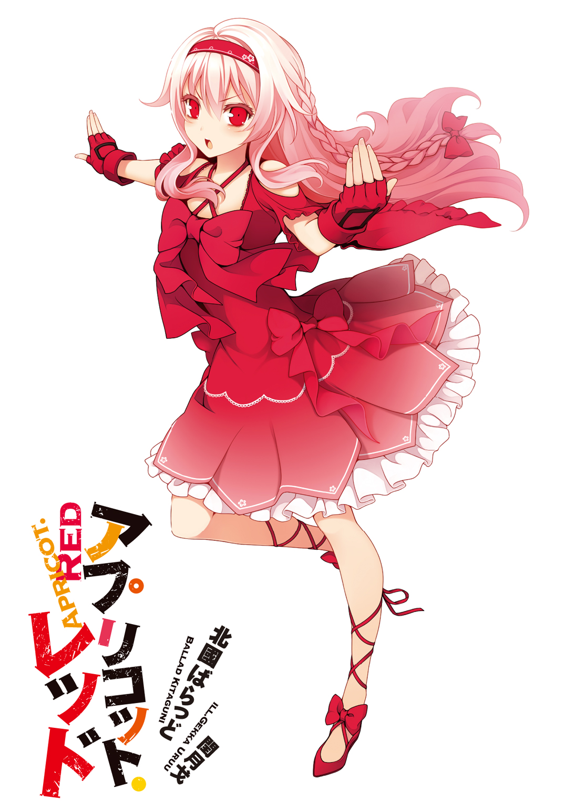
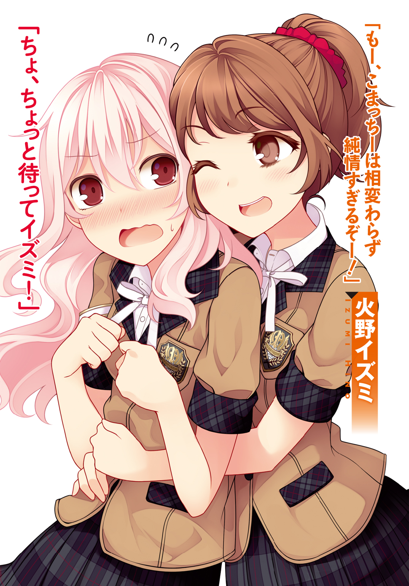

| アプリコット・レッド | |
| 北國ばらっど | |
この本は縦書きでレイアウトされています。
また、ご覧になる機種により、表示の差が認められることがあります。


 ダッシュエックス文庫DIGITAL
ダッシュエックス文庫DIGITAL
アプリコット・レッド
北國ばらっど
【プロローグ 『遠い日に出来た肖像画』】
カチューシャをつけたその瞬間、美少女がそこに現れた。
「......これが、僕？」
鏡の中の、その〝少女〟は、僕の声でそう言った。
長くしたくせ毛の髪も、女々しくて嫌いだった長い睫毛も、今の姿には共存した。
幼い事を差し引いても線の細すぎる外見は、ゆったりとしたワンピースに包まれることで何の違和感も無くなっていた。
当然、無駄毛など生える年齢ではないし（今となっても生えてないが）、肌の露出に無理はなく、むしろ日焼けしづらい白い手足が、この瞬間は素晴らしく綺麗な物に見えた。
「どうよ、私の服とカチューシャは、気に入った？」
鏡の中の少女、つまり、女の子の格好をした僕の背後から、本物の女の子の声が聞こえた。振り向けば、人形のように可愛らしい、青い目の少女が立っていた。
ダリア・ハーマン。
街はずれに住まう僕にとって、数少ない近所の友人が彼女だった。外国人である彼女の家族がこんな田舎に越してきたのは、丘の上のサナトリウムが目的だそうだ。
身体の弱い少女には綺麗な空気が必要だったようだが、決してインドアでも無いダリアは、近場である我が家へと、よく梅の木を観に来ていた。
「いや、気に入ったって言うか......」
「何よ、超気に入ったってこと？」
「なんで僕、女装してんの？」
いや、なんでとか言うまでも無く解っていた。
いつものように遊びに来たダリアに、いきなりひん剝かれて、いきなりドレスを着せられたのだ。うん、知ってる。知ってるけどそういうんじゃなくて、動機を聞きたかったわけ。だって行動が意味不明すぎるじゃん。怖いじゃん。
「なんでって......脱がせてみたら小町君があんまり無抵抗だから、ノリ気なのかと思って。そりゃ私も、あれよあれよと最後まで行くしかないじゃない」
「いや、いきなり人を脱がせる系女子にリアクションとれなかっただけで――」
「いまさら何言ってんのよこの女装子が！」
「ひっ！ 押し付けられた属性で罵倒された！」
「行動に起こせなかった時点で魂が女装を受け入れてんのよ。スピリチュアル男の娘なのよ」
「じ、字面だけだとより一層濃いキャラになっちゃう......」
こんな横暴なダリアであるが、彼女は美術の天才だった。
そして天才が往々にしてそうであるように、理不尽だった。
キャンバスを与えれば、すぐさま彼女は其処に風景を切り取り、また、在りもしない世界を描いてみせた。粘土を手に取れば、複雑な銅像すら縮小再現してみせた。
理不尽な性格をした、理不尽な程の天才だった。
理不尽過ぎて、いきなり人に女装までさせた訳だ。たまんねえ。
「ズボンとスカートの垣根なんて、下らないわよねっ」
ダリアは病んだ胸を張って、主張した。
「性別や嗜好なんて関係ない。貴方はスカートが似合う。ただそれだけよ。単純な一つの真実。美しくなる物を美しくなるようにするのは、芸術家として当たり前よ」
からっとした笑顔で、ダリアは笑う。僕はまだ、戸惑ったままだった。
僕は男の子だ。身体も、心も、確かにそうだ。
しかしどうだろう。その姿はまるで、ずっと探していたパズルの欠片が見つかったかのように、ぴったりと僕に馴染んでしまった。
今までの自分が噓であったかのように、男の格好こそが間違いだと言うように、スカートとカチューシャが、僕を本来の僕にしたようだった。
常識も何も関係ない。「美」と言う事実だけがそこにある。
けれど、その事実を受け入れるには、小学生の頃の器量はあまりにも狭かったわけで。
「......でも、やっぱ流石に、恥ずかしいんだけどなあ」
「良いじゃない、このくらいのワガママは聞いてよ」
くすくすと声を漏らすダリアの笑顔が、途端、その色をがらりと変える。
小悪魔じみた表情が、一転して儚い物になる。
「今の小町君の姿こそが、私が遺した最高傑作になるかもしれないんだから」
ダリアは笑顔でそう言った。僕の方は、笑えない。
「何さそれ......複雑だよ。ダリアちゃんらしくもないし」
普段ならば絶対に言わない言葉。常により良い絵を描くのがモットーであるダリアは、最高傑作という言葉を嫌っていた。
だから、薄々気づいては、いた。
どこか物憂げな笑顔で、ダリアは窓の外を見上げる。僕もつられて、視線を上げた。青空のキャンバスを覆うように、赤い梅の花が広がっていた。
この満開の花景色は、数日も続きはしない。一年の中の、ほんの一瞬を駆ける時の早さに、すぐに流されていってしまう。
「それにしても......やっと、小町君にひと泡吹かせてあげられたわね」
「なに言ってるのさ。ダリアちゃんは絵も勉強も、僕よりずっと上手に出来たじゃない。いつも泡吹いてるのは僕の方なんだけど」
「ううん、鬼ごっこは負けっぱなしだもん。ちょっと悔しい」
それは、身体の弱いダリアには仕方のない事だった。
僕は道場で鍛えていた。元々、勝負になる筈も無い事だ。過去に四、五回ほどもした事のない、二人だけの鬼ごっこは、いずれもダリアが具合を悪くして終わっていた。
平成も過ぎたこの時代。ただ走るのが速いとか、力が強いとか、大した自慢になりはしない。
その点、ダリアは時代に即した才能を持っていた。
彼女がこのまま大人になれば、絶対に、歴史に名を残す芸術家になるだろう。僕は、それを信じて疑わなかった。
「あーあ。もう一度、小町君と鬼ごっこがしたいなぁ。キャンバスの中じゃない世界をさ、自由に走って、感じてみたいな」
「......できるよ、きっと。もっと大きくなれば、ダリアちゃんの身体も強くなるんでしょ？」
「そうねぇ......そうしたらもう、小町君なんか目じゃないかもね」
確かではない希望なんて、余計に相手を落ち込ませるだけだ。子供の僕のボキャブラリーでは、励ましの言葉の一つすら、満足に口に出せなかった。
けれど残酷になってしまった言葉にすらも、満面の笑みで、ダリアは応えてくれた。
「あ、でもね？ 手を抜いた小町君とは、鬼ごっこなんかしたくないからね」
「手なんか抜かないよ。ダリアちゃんにはすぐバレちゃうしさ」
「いくら女の子の格好が似合うからって、私が元気になるまでに、小町君がナヨナヨしちゃったら困るわ。格好は女の子でも、中身は男の子の小町君が素敵なんだから」
「じゃあ、普通に男の子の格好じゃ駄目なの......？」
「小町君は強く、美しく大人になること。これは決定事項よ。綺麗だけど逞しいなんて、造形美と機能美を兼ねそろえた、一番美しい形だと思わない？」
「ダリアちゃんの言う事は、難しくて解り辛いよ」
「大丈夫。私が小町君をプロデュースしてあげるわ。最高に強くて、最高に綺麗な小町君にしてあげる。私の最高傑作にしてあげる。そしたら、元気になった私とまた、鬼ごっこしましょ？ ふふっ、楽しみ。自分の描いた最高の作品と、いっしょに走り回れるだなんて」
「あはは......なんか解らないけど、お手柔らかに」
きっと僕は気付いていた。一緒に居られる日々が、もう続かない事を。
気付いて、でも知りたく無くて、だからいつものように馬鹿みたいに、はしゃいで、笑った。
梅の花は紅い雪のように舞って、空の向こうへ溶けて行った。
次の年、僕たちが二人で満開の梅を眺める事は、無かった。
【その１ スケルトン・リリィ】
１
スケルトン・リリィの素晴らしさを、どう伝えれば良いだろう。
おどろおどろしい骸骨の仮面から覗く、あどけない口元だとか、リリィの少女性を表すゴシック・ロリータのモノトーンな装いだとか、記号的な物を上げればキリがない。
計算しつくされたとしか思えない、彼女というキャラクターの魅力は、今更僕が語る必要などないのかもしれない。「ミュージアム」のアカウントを持っていれば、一度は画像を目にした事があるだろうし、アナログな世界に置いてもキャラクターグッズが売れているくらいだから、知らない方が稀だろう。
それでも彼女を知らないと言うなら、今すぐそのパソコンかスマートフォンで、ミュージアムにユーザー登録し、デイリーイラストランキングを覗いて欲しい。少なくとも三割以上の投稿作は、彼女のファンアートであるに違いない。
個人のイラストレーター「カサブランカ」が、ノートの端に刻んだ落書きから生まれたオリジナルキャラクター。にも拘わらず、コミカライズやアニメ化の話まで持ちかけられる程に、スケルトン・リリィはその世界を大きく広げたのだ。
数字や理屈を並べるならば、キモがられるくらいの分量を語る事が出来るだろう。
けれど、まずはやはり見て欲しい。そして感じて欲しい。スケルトン・リリィという少女に与えられた、無限の可能性を。
その素晴らしさを語りつくすには、この時間は余りにも短すぎる。
ともかく、僕がどの程度、リリィのファンであるかは伝わっただろう。
男の子が変身ヒーローに、女の子が魔法少女に憧れるように、純粋な気持ちで僕は、スケルトン・リリィを好いている。
そのスケルトン・リリィが、窓の外に居た。
四階建ての学生寮の、辛気臭い裏路地に向いた窓から、僕はその様子を眺めていた。
普段は錆びれた商店のボロ屋根と、オレンジ色の街灯に群がる蛾の群れくらいしか目に入らない筈の、外の景色は、僕の知らない姿になっていた。
物音に気付き、カーテンを開けた時、既に戦いは始まっていた。
広がっていた情景は、言うなれば、二分された画面のようだった。
クレヨンで描いたような、カラフルなビルの森。雪の結晶が舞い散る、白い雪原。二つの景色が、まるで二つの人影を分かつかのように広がっていた。
黒いドレスを翻し、建物の壁面を蹴ってリリィは飛んだ。ラッパ状に膨らんだ、フリルだらけの袖口から、二丁のリボルバーが飛び出した。
鮮やかな風景の中でも映える、白く細い指先が、トリガーを絞る。たちまち、ＲＧＢの三色に彩られたクレヨン・バレットが、マズルフラッシュと共に闇を引き裂いていく。リリィの武器は色を操るパレット・ガン。有名な設定だ。
射線の先、電柱の上に迎えうつのは、それもまた、異様なシルエットの人型だった。方眼柄の白い和装を着こんだ、侍のような少女。リリィの銃口が瞬くたびに、艶やかな黒髪が輝いている。その手に握られた刀のような物は、切っ先が万年筆のように割れている。
そちらの少女に見覚えは無かったが、不思議と知っているような気がした。その感覚の正体は、頭の隅でぼやけている。
少女が刀を横薙ぎに振るうと、黒い軌跡がカラフルな銃弾を斬り落とす。電線に下駄を引っかけてぐるりと回り、プロレスのロープのように反動をつけて、リリィへ迫る。
続けざま、袈裟がけに振り降ろした刃がリリィを掠めるが、リリィは踊るように身をひるがえすと、グリップで少女を殴り飛ばす。
もちろんそれも致命打にはならず、少女たちはアメリカンクラッカーのように接近と衝突を繰り返す。
一進一退する攻防のたび、窓の外の景色が波のように押し引きを繰り返す。カラフルな世界と純白の世界が、まるでひしめき合うみたいに、押し合いながら移り変わる。
二人の人影がぶつかりあうように、二つの世界がぶつかりあっている。少なくとも僕には、その景色がそんなふうに見えた。
口の中から急激に、水分が干上がっていく。訳のわからない熱が腹の奥から沸いて、心臓がしきりに血液を循環させる。白昼夢のような一瞬を見逃さぬよう、僕は窓ガラスに食らいつく。
間もなく、リリィにほんの少しの隙が生まれた。
リロードが遅れ、連射の隙間をついて、低く這うような軌道で少女が飛来した。先割れの刀を下段に構え、今にもリリィの首が撥ね飛ばされる光景が目に浮かんだ。
第三者の目線であるのに、僕は自分に危機が迫りつつあるように背筋を凍らせた。お腹の奥に溜まっていた熱さが、爆発したように声を出させた。
「頑張れっ、リリィ！」
その一言が精いっぱいだった。
たった一言の叫びが、建てつけの悪い窓ガラスを振動させた。
瞬間、目を疑う光景が現れた。
スケルトン・リリィの頭上に、金色の星が浮かび上がったのだ。
シンプルだが見覚えのある記号だった。ミュージアムに投稿されたイラストや動画に、評価をつけるためのアイコン。正式な名前を「フェイバリットスター」。
感動した作品に、反射的に評価ボタンを押してしまうように、僕のとっさの声の波動は、窓をすり抜けて星の形になった。そんな気がした。
頭上に浮かんだ星が、たちまち金色のクレヨンに変わり、染み込むようにしてリリィのリボルバーを透過し、装塡される。
迫りくる少女へカウンターを叩きこむように、リリィは銃口を向ける。
高速で迫っていた少女は、とっさの方向転換を不可能にしていた。急に攻撃の態勢に移ったリリィを見て、その表情が驚愕に染まる。
「悪いわね。運も実力の内よ」
確かに、リリィはそう喋った気がした。ひときわ大きな火花が、銃口を煌めかせる。
レーザービームのように放たれた光は、和装の少女を真っすぐに貫いた。
明らかな致命傷を食らった少女は、スプラッター映画のように血飛沫を上げる事はなかったが、代わりに、窓の外の景色が一気に塗り替えられた。純白の雪原は侵食され、一面がカラフルなビル群に覆われる。
それはさながら、陣取りゲームの終局のようだった。
世界が世界に喰われていく。景色が景色に覆われる。
そして、和装の少女は消えていく。
スケルトン・リリィの勝利と共に、全てがリリィの色に書き変わっていく。漠然と、そんな理解が頭を支配する。
それから、数秒の沈黙が流れた。たったそれだけの時間も、僕にはとても長い余韻に感じられた。その間も僕の視線は、一人、カラフルなビルの陰に残された、スケルトン・リリィの背中へと釘づけになっていた。
ふと、リリィが足を動かした。
振り返った彼女の瞳が、髑髏の仮面の向こうから、僕の目を見つめた気がした。
「う、ぐっ」
思わず僕は、数歩後ずさった。有り体に言えば、ビビったのだ。
それから、恐る恐るもう一度近づいて、窓から外の景色を覗きこんだ。
「......あれ？」
そこにはもう、何も無かった。
鳴り響く金属音も、スケルトン・リリィも。残されたのは、静かな夜の闇と、薄汚いゴミステーションの景色だけだった。
結局、その日の僕は勉強に根を詰めすぎたのだ、と納得し、机上のノートをしまって、シーツを綺麗に整えて寝た。
あれは、タチの悪い白昼夢だったのだろうか。
奇妙な興奮が未だに胸を支配していたが、明日に差し支えるのはまずいと思い、務めてぐっすりと眠ることにした。
やがて眠気が満ちて、意識が遠ざかっても、それは写真のネガのように焼き付いて、しつこく消えてはくれなかった。
眠りの中、僕は改めて懐かしい夢を見る。
それが僕とスケルトン・リリィの、出会いの日の出来事だった。
２
進路について失敗したと、気づくのは早かった。
音楽や美術、演劇などの芸能分野について、高校クラスでは最高峰の学習環境。各学科に合わせた専用の教育棟が存在し、豊富な学習機材がそろい、講師も超一流揃い。
文化の価値を重んじる現代において、下手な進学校よりもよっぽど羨望を集める名門校。それが我が校、ミューズ学院だ。
そんな学校に通う僕はと言えば、音痴で手先が不器用だ。だから、そんな高名な芸術学校の、普通科を選んで通っている、芸術学校の普通科だ。存在そのものが意味不明。
ついでに一つ付け足せば、僕が着ているのは女子用のブレザーだ。
こんな違和感を抱えたまま、三年間という貴重な高校時代を浪費せねばならない状況にあるのが、沖本小町という僕である。
「............改めて言うと、まず僕が不審者じゃないか」
入学して最初の頃は、緊張からか妙な白昼夢を見た事もあった。それでも今は、かなり馴染んだと言っていいだろう。
女子らしい仕草も、特別気を付ける事はなく出来るようになっていた。今ではクラスメイトに、少しの違和感も抱かせないはずだ。
こんな僕でも、せめて平穏に毎日を過ごすことくらいは許されたい。
どうせ、既に八方塞がりみたいな物だ。芸術学校の普通科という、トマトのヘタみたいな学科に居る僕は、出来るだけ目立たぬように居る事だけが最後の希望。
女装の事実もバレたくはないし、過去には苦い思い出もある。厄介ごとだけは極力避けて、クラスの地味な一女生徒として、入学してからの数か月間を凌いできた。
それでも便所飯の必要はなくなってきたし、友達と普通に会話する頻度も増えてきた。男子生徒とは変な感じになってしまうので、女友達ばかり出来たのは仕方ない。
「男子にコクられたのは死ぬほどビビったけどな......」
あれ以来、男子には絶対に勘違いさせないよう、注意して話さなきゃならなくなった。
女子とは上手くやっているが、親友と呼べるような相手はいない。かといって嫌われる事も無く。
つかず、離れず、平凡に。今が最も心地良い距離感。この不毛な学校生活を、どうか凪のように穏やかに消化していきたい。
そんなささやかな願いを胸に抱いて、僕は今日も昼休みを迎えたのだ。
いつもは教室で弁当か、食堂でＡランチでも頼むところだが、今日は一人で居たかった。四六時中、周りを騙しながら女子をやっているのだ。たまには誰にも気兼ねせず、ゆっくりと食事したい。そんなわけで昼休みの僕は、弁当を食う場所を探していた。
ピンクの包みに入れた弁当箱と、片手には量子通信携帯電話、Ｑ―Ｐｈｏｎｅ。通信の情報量が爆発的に増えた現代で、これ無しでは暇つぶしもままならない。
ミュージアムにログインして、ネットを覗きながらのメシ場所探し。
カテゴリ分けの中から「イラスト」を選択し、デイリーランキングを確認した。見慣れた名前と、見慣れた絵柄の羅列が表示される。そのうちの数割は、やはりスケルトン・リリィのファンアートが占めていた。
ページ内から「スケルトン・リリィ」という単語で独立した検索タグを選択。リリィをテーマにしたイラストの他、二次創作の小説や、３Ｄモデルを使った動画作品などが新作順にずらりと並んでいた。
改めて、リリィというキャラクターの影響力の高さを実感した。目ぼしい作品をチェックしたら、今度は「音楽」カテゴリのランキングを覗いた。
リリィをテーマにした楽曲も数多くランクインしていたが、流石に此処は畑が違う。インディーズよりもさらに気軽に触れられるようになった、アマチュアのミュージックシーンは、まさに毎日がお祭り騒ぎだ。
デイリーランキングのトップ７に、お目当ての作者の曲が投稿されていた。既にブックマークしているので、開こうと思えばすぐなのだが、どうせランキング自体はいつもチェックするのだから変わりない。
その曲名は「ＳＰＲＩＮＧ ＲＡＩＮ」という。和風のような、洋風のような、いわゆる和ロックとか呼ばれる奴だ。作詞も作曲も歌も、「Ｒｏｍｅｏ」という作者名での投稿になっている。ねじれたイヤホンを耳に当てて、再生ボタンを押して、廊下を進んだ。
耳から染み込むメロディは、直接僕の心臓を叩くように、気分を高揚させた。純粋に技術もあるのだが、この曲はとにかく、好みだと言った方が正しい。既にお気に入りに登録しているが、改めて画面を操作して「スターを送る」コマンドを選んだ。
スターは作品のジャンルを問わず、一日に五つまで送る事が出来る。五つの作品に一つずつ送るも、一つの作品に五つ送るも良し。小説にもイラストにも同様。このスターという単位が、ミュージアム内では作品ジャンルの垣根を越えて、純粋に「感動」の強さを競わせる。こうして評価する事は、クリエイターでは無い人間がアートに関わる、限られた手段の一つなのだ。
大サビに差しかかる頃になって、開放された中庭が目に入った。
ドーナツ状に建てられた校舎のど真ん中。丁寧に手入れされた木々と花壇からなる中庭は、ちょっとした公園よりは広い。
芸術を学ぶ生徒たちにインスピレーションを与えるべく、本格的に拵えられた庭園は、その道の高名な庭師が管理しているため、下手なデートスポットよりも見栄えが良い。当然、昼食の場としても人気だ。
どうせ今日も混んでいるだろうと思ったが、視線を泳がせているうちに、不意に穴場を見つけてしまった。
設置されたベンチの近くには人気があるが、端の方の木陰には誰も居ない。特に大きな梅の木は、それなりに幹も太く育ち、僕の身体程度ならすっぽりと隠してくれそうで、すぐ傍に百合の花壇が並び、良い具合に物陰になっていた。ちょうど日光も当たらないその場所は、まさに絶好のスポットに思えた。
「しめた」
誰かがその場所に気付く前に、僕は弁当箱を持って、その場所に滑り込んだ。
今思えば、そんな素敵なスポットになぜ人気が無いのか、もう少ししっかりと考えるべきだったのかもしれない。
だが、気ばかりはやって走り込んだ僕は、梅の木の根元に埋まっている、それを見つけてしまった。
それは地面に頭からめり込んでいる、ゴスロリの少女だった。
なんだこれ。
頭を地面に突き立てる形で、その人は両足を天に向けて埋まっ......いや、どっちかって言うと、生えていた。それはもう、草とか、木みたいにだ。
彼女が美術科の生徒である事はすぐに解った。
ミューズ学院は制服こそ設定されているが、私服通学も認められている。このめり込みさんは私服であろうゴスロリルックに身を包んでいたが、義務づけられている、学科を示す腕章が赤色だった。ゴスロリを好むのは大抵、美術科とか服飾科の人間だ。それにこの服装なら、まず間違いなく女子だろう。
というか、逆さになっているせいでスカートがべろんべろんに捲れており、下半身が全開なのだ。自分が女装している身なので、他に女装趣味の生徒が居る事も疑ったが、見えてる下着もしっかり女性物だし、ファウルカップを嵌めている様子も無さそうだ。
となると、僕は今、モロに女の子のパンツを直視している事になる。
しかし、何だろう。ちっとも嬉しくない。
っつーか何なんだよコレ。前衛芸術か何か？ なんで中庭の木の下からゴスロリが逆さに生えてるの？ マンドラゴラなの？ 引き抜いたら僕死ぬのかな？
「いや、待て待て......流石に不気味すぎるだろ、この状況は......」
どれだけ固まって眺めていても、浮かんでくるのは「ヤバい」の三文字だけ。
取りあえず、なぜここだけ人が寄って来ないのかは理解した。どうやら僕はババを引いたようである。この危機的状況に対し、僕の足りない脳味噌は、間もなくフル回転を始めた。
導き出される答えの全てが「関わるべきでは無い」と示していた。芸術家なんて変人揃いで、美術科の生徒など群を抜いて変態で、その上、見るからに変質者然とした物に出会ってしまったのだ。逃げる以外の手が無いじゃないか。
「......よし」
僕は何事も無かったように、出来るだけ平然と歩き出した。
まだ夏の香りを残した風が、木漏れ日に混じって吹き込んでくる。季節の変わるその時の、爽やかな空気を感じながら、芝生の上をさく、さく、と進む。
と思ったら、ゴスロリが両足で僕の胴をアリジゴクのように挟んできた。
「ひっ！」
素で変な声が出た。当然である。
しかも女子にしては妙に力が強い。編み上げブーツに覆われた足でギリギリと僕の胴を締め付けてくる。
「もし、そこの貴方」
「ひぃっ、喋った！」
地面の下に埋まった頭から、くぐもった声が聞こえてきた。
もう泣きたくなっている、というか半分泣いてんだよもう。
「不躾な事をしてごめんなさい。けれど、もし貴方にほんの一片でも優しさがあるならば、どうか私を助けて欲しいのですけど」
「あぁっ、あぁぁぁっ、やだやだ！ 絶対関わりたくないっ！」
「何も特別な事をして欲しいと言うわけでは無いの。ちょっと脱出できなくなったので、頭を引き抜いて欲しいだけなのです」
「やっぱマンドラゴラか！ やだ！ まだ死にたくないって！ 僕に何の恨みがあるんだ！ 畜生ッ！ 僕が何したってんだよ！」
全力で逃げ出すべく、足腰に力を充塡する。唸れ、僕の大腿筋。伊達に鍛えてきた訳ではない筈だ。此処で逃げねば僕の人生が終わる。
しかし、ゴスロリの方も大した胆力だ。全力で僕の胴を挟み、けして離れぬように踏ん張っている。なぜ美術科の生徒がそんなにフィジカル強いんだ。僕が知らないだけで、美術科ではブラジリアン柔術とか教えてるのか。地味に自信が失われていく。
「ふんぎぎぎぎぎぎぎっ......」
「ぐぬぬぬぬぬっ！」
穏やかな晴れの昼さがり。緑賑わう中庭で、ゴスアリジゴクとの力比べ。
ＳＮＳに「なう」つけて呟いても誰も信じてくれないだろう状況で、僕は必死に戦っていた。
だが、こちとら生死が関わっている。このままゴスアリジゴクに引きずり込まれて食われては堪ったもんじゃない。渾身の力を身体中に込めて、更なるもう一歩を踏み出した。
「どりゃっさあ！」
はたして、僕を縛り付けていた抵抗は消えた。僕はこの悪夢のような呪縛から解き放たれたのだ。
が、同時に聞こえてきたのは、ズボッ、とか言う妙に小気味よい快音。さながら、何かが引き抜かれるような効果音だ。
「えっ」
恐る恐る視線を下ろせば、僕の腰には未だ、白く細い両足が巻き付いていた。ゴスロリ少女は、股で僕をホールドしたまま、だらりと上半身を垂らしていた。
「......しっ、死んだか......？」
死んでいては困るのだが、なぜか安堵が先に立つ。
だが、あの状況で首に全力を込められたら、確かに命が危ないだろう。もちろん、このゴスロリが人間ならば、の話だが。
と思ったらいきなり上半身を振り子のようにして起き上がって来た。
「ひぇっ！」
怯える僕を、ゴスロリ少女の暗い目線が見つめる。
彼女は顔面にホッケーマスクを嵌めていた。しかも後頭部はビニールのカバーらしきものを被っていて、クラゲかキノコのように膨らんでいた。ぶっちゃけた話、僕にはマンドラゴラ以外の何物にも見えなかった。
「ぎゃあああああああああああああああああああっ！」
僕は奇声を上げながら転げ回った。そのショックで足のホールドが外れ、自由の身になったが、腰が抜けて立ち上がれない。
「ああああ、ナンマンダブナンマンダブ......」
必死に十字を切り、手を合わせ、お婆ちゃん譲りの念仏を唱える。
しかし、目の前の人影は念仏に苦しむ事も無く、土埃を服から掃うと、優雅にすら見える手つきで、頭を覆うビニールカバーを外した。
途端、彼女を縁取るシルエットが、劇的に変化した。
カバーの中に押し込められていたのは、煌めく様な銀色の長髪だった。あれだけギュウギュウに詰められていたのに、ふわりと広がる髪は、夏風の流れに色を付けたかのように、軽やかに舞っていた。
続けて、ホッケーマスクが外された。
「えっ......」
僕が声を出したのも無理はない。マスクの下から現れた顔は怖いくらいに整っていたからだ。
一言で言うなら、彼女の容姿は完全だった。
ぱっちりとした二重の下には、淡い色の碧眼が、宝石のように備えられていた。鼻筋の通った顔立ちも、細く小さな輪郭も、薄い唇もだ。奇妙なくらい、彼女の顔は美しかった。それはもはや、人間味を薄くしていると思えるほどに。
見た目からして、日本人では無いような気がした。澄ました顔でこちらを見ると、花が咲くように、彼女は軽やかに微笑んだ。
「ありがとう、助かりました」
「......あ、どうも」
不覚にも、僕は頰に熱さを感じた。こんなナリをしていても、僕は男だ。美人に笑顔でお礼を言われれば照れもする。
が、途端に先ほどまでの光景がフラッシュバックした。そうだ、いくら美人だからといって、この女は先ほどまで、陸で犬神家ごっこやってた人間なのだ。とてもまともとは思えない。
けれど一方で、僕の中の男子が一斉に異義を唱える。僕の中では、美人は悪人ではない事になっている。きっと先ほどまでの行動にも、何か深い意味があるに違いない。
ので、僕は無謀にも訊いてみた。そう、理由を訊かねば何も始まらない。千に一つとは言わずとも、万に一つくらいは、納得できる答えが返ってくるんじゃないだろうか。いや、そうに違いない。だってこの子は可愛いからだ。
「あの、今......土に埋まって、何してたんですか？」
「大地の声が聞こえるかと思って」
駄目だった。ヤバい人だった。
流石にこれ以上の会話はマズい。取りあえず僕はさっさとこの場を離れることにした。
「あ、そ、そうですか。なるほど、良い声が聞けてたら良いですね。それじゃ僕はちょっと用事があるので、これで」
「偶然危ない所を救われるなんてこれは運命ですわね。せっかくなのでメアド交換しません？」
「ぐいぐい来やがる......！」
何がせっかくなのか全然解らない。まずい。経験上、こういう圧倒的に自分のペースを押し込んで来るタイプは、微塵の隙も見せてはいけない。
最早、事態の円満な収拾は望まなかった。目的はただ一つ、このゴスアリジゴクから逃げ出す事だけだ。
「あっ！」
「えっ？」
僕は声と視線と挙動の三連フェイントを織り交ぜて、完璧にこの女を出しぬき、スタートダッシュを切った。僕は男だ。その上、この学校では役に立たないが、運動神経は自慢できるものがある。
僕は背中を向けて、猛スピードで駆けだす。もはや飛びついて来るぐらいしか対抗策は無いだろうが、女の子の力に負けはしない。
と思ったら、ゴスロリ少女はピンポイントで股間を摑んできた。アッパー気味にだ。
「はぎゅんっ！」
全力疾走のエネルギーが一転に集中する。
目玉がぐるりと瞼の裏を向き、意識は......宇宙。昼飯がまだで助かった。もし満腹だったら全部戻しているに違いない。
そのままついでに腕で頸動脈を絞められ、足で足を極められて、背後から完全に急所を押さえられる形で僕はホールドされた。
「初めまして！ 私は築波夕莉！ 美術科デジタルイラスト専攻の二年Ａ組！」
「じ、自己紹介はやめろぉッ！ これ以上僕の人生をお前の距離に引きずり込むなッ！」
「貴方の名前は？ どれどれ......なるほど、普通科一年の沖本小町クンね！ なんだ、後輩だったの。じゃあ私のことはお姉さまと呼んでも良くってよ！」
「ぐぁあああっ！ ぼ、僕のケータイをいつの間にっ！」
「えーっと、それじゃあこうこうこう......で、ピロリンっと。はい、アドレスの交換は済ませたヨ！ これで今日からお友達、かっこはぁと！ これから宜しくね、小町クン」
一通り目的が済むと、ゴスロリ少女......夕莉は僕を離し、ケータイを返してくれた。なんだか満足げに息を吐きながら「いっちょあがり」といった様子でシガーチョコを咥えている。僕は乱れたスカートやブレザーを直しつつ、よろよろと身体を起こす。
「メアド交換させられただけなのに、何だこの凌辱感は......」
顔を上げると、夕莉は既にスキップしながら遠くへ去っていく所だった。
ケータイの画面を操作すると、ばっちりメアドが登録されている。すぐに削除しようとしたが、向こうが僕のアドレスを持っている以上、意味が無い。アドレス変更も面倒な話なので、とりあえず受信拒否に設定する。
唐突に、頭上で鐘の音が響いた。中央棟の大きな鐘が鳴っているのだ。つまり、昼休みの終わりが訪れた事を知らせていた。
「......マジで」
げっそりしながら、僕は手つかずの弁当箱に視線を落とした。
お腹はぺこぺこだが、時間はなし。まさか、授業中に教科書で隠して頂くわけにもいかない。
なにせ、自分は女子なのだ。
そこまで考えて、ふと気付いた。
「......あいつ、僕の事、男だって知ってたか......？」
夕莉は、僕の事を「小町クン」と呼んだ。それ以上に、その、真っ先に金的を狙ってきた事自体、始めから僕を知らねば出来ない事だ。
嵐の前のようにもやもやとした物が、僕の胸に渦巻いて行く。
それを気にしている暇も無く、無慈悲に時間は僕を急かす。纏まらない頭のまま、僕は午後の授業へと走っていった。
３
現代史の授業は正直、退屈だ。
美人で有名な立花先生ならば、四十五分眺めていても良いのだが、現代史を担当するのは谷という初老のオッサンである。
「こうして建国されたのが、まあ、世界初となる完全共産主義国家、システィマ共和国ってえ訳だ」
相変わらず間延びした声が眠気を誘う。しかも、今日は特に退屈な単元を進めている。
システィマという国に関する事なんて、小中学生の頃に飽きるほど習っているからだ。
「娯楽や無駄の全てを捨て去って、効率のみを第一としての運営を初めて可能にした国がシスティマなわけだが、皆も知っている通り、システィマは建国二年を待たずして滅んだ。俗に言う、カルチャーハザードって奴のせいだ」
知っている通り、なんて言われてしまう事を、わざわざ授業で習う必要があるんだろうか。あくびを隠すのが辛くなってきた僕の肩が、不意に誰かにつつかれた。
「こまっちー、珍しく眠たい感じ？」
「......そうねー、眠たいかんじー」
ひそひそと話しかけてきたのは、右隣の席に座る火野イズミだった。名前がカタカナなのは、それこそ世界の遥か彼方まで、グローバルに届いて欲しいという両親の願いが込められているらしい。カタカナは日本固有の文字なんだけどな。
「カルチャーハザード。つまるところ、ランゲヴァイレ症候群による歴史的な大量死の事だな。この症状によって、システィマは国家存続が不可能になるほどの死者を出した訳だが......」
相変わらず、教壇からは耳にタコが出来るほど聞いた、歴史の常識が語られ続けている。まあ、この学院が芸術学校である以上、避けては通れない話題なのだろうけど。
「このランゲヴァイレ症とは即ち、『退屈』が生み出す疾患だ。楽しく生きるための意欲、感情のエネルギーが枯渇することで、現代人の身体は生命活動を維持できなくなる。この病の発見が皮肉にも、文化なる物が人間社会に重要であるという事実を知らしめる結果になった、っつーことになってる」
谷先生も、殆ど教科書の文章を嚙み砕いて読み上げているだけなので、それほどやる気は無いのだろう。それなら真面目に授業を受けるより、イズミとひそひそ喋っている方が有意義と思い、彼女の私語に乗ることにした。
「イズミも眠たい感じ？」
「私はいっつも眠たいけどねー。昨日、二時くらいまでライト様のネットラジオ終わらなくてさぁ」
「イケメン歌い手だっけ。好きだねえ」
イズミはミーハーだ。先週までは別の誰かのラジオに夢中だった筈だが、来週にはまた誰か別の人のファンになっているだろう。
そんなミーハーなイズミは、校内のゴシップにも詳しかったりする。僕は意を決して、ひとつ質問してみる事にした。
「ねえイズミ、聞いても良い？」
「体重の事じゃなければ」
「また増えたの？ ......じゃなくて、あのさ、築波夕莉って人知ってる？ うちの生徒なんだけど」
「あー、築波先輩ね。美術科の魔女って評判の」
「魔女......何それ」
「私ら普通科は関わり薄いけど、美術科じゃ奇行が目立って有名なんだって。インスピレーションを得るためなら何でもするって」
その奇行を目の当たりにしてきた僕には、納得できる話だった。なるほど、しょっちゅうやってるのか、あの人。
「でも、どうしたのこまっちー。築波先輩がなんか気になるの？」
「いや、さっき会ったばかりだからさ、その魔女先輩に」
「マジで？ なんかされなかった？」
「や、ちょっと絡まれただけなんだけど」
まさか物理的な意味だとはイズミも思わないだろう。
「うわー、大丈夫？ つきまとわれたりしたら怖いよね」
「そうなんだよね。出来ればもう会いたくないんだけど......」
「樹里ちゃんに守ってもらえば良いんだよ。樹里ちゃん、今日も放課後は迎えに来るって言ってたよ」
「ええーっ......いや、まあ良いんだけどさ。いつもの事だし」
よく知った名前が出てきても、あまり気持ちが明るくなる事は無い。
佐倉樹里は唯一、この学院に入学する前からの知り合いだ。僕が男である事も知っていて、大なり小なり助けてもらった事もある。
それでも僕の気持ちが重くなるのは、色々と事情もあるのだが、樹里に助けてもらったあれこれを思えば、邪険にする訳にもいかない。それに、あの変人に絡まれる事を考えれば、樹里についていて貰うのも良いのかもしれない。
ただ、僕は今日、帰りにＣＤショップに寄りたかったので、樹里が居ると少し気まずくなる。いや、気恥かしいと言った方が良いかもしれないけれど、とにかく自然体でいるのは難しい。
仕方なく、僕は放課後は真っすぐ帰宅する事に決めて、空いた時間をどう使うかを考え込む事にした。
「にしても、美術科も大変だよね。なんか変人多いみたいで。っていうか、クリエイターって変な人ばっかなイメージあるし、普通科は普通科で悪くないのかも」
そんなイズミの台詞は、普通科に通う事を疑問に思う僕には、少し救いになる。まして変人に襲われたばかりの今なら、そこそこ同意できる物だった。
「それにさ、最近流行ってるみたいよ？」
「流行ってるって、何が」
「スランプ。唐突に来るんだって。今まで描けてた絵が描けないとか、曲のインスピレーションが全然湧いてこないとか。ミュージアムで有名な絵師さんとかでも......いや、むしろそういう人の方が多いとか」
「へぇ、知らなかった。さすが、イズミは伊達にミーハーな訳じゃないね」
「業界通って言ってよ、業界通」
「業界人にはなれない所が、普通科生徒の悲しい所だね」
「んもー、相変わらずネガティブだなぁ、こまっちー」
「ネガティブにもなるよ。せっかく有名な芸術学校に通ってるのに、歴史とか微積分の勉強ばっかりってさ、意味不明じゃない？」
「私は別に良いけどなー。絵描いたり楽器鳴らしたりしたい訳じゃないけど、ミュージアムの有名人は結構な割合でここに通ってるでしょ？ 上手くいけば、お近づきになれるかもしれないじゃん」
「確かに、ファンからしてみれば悪くないのかもしれないけどさー......」
「でもさ、有名な人たちは大変だよね。今まで出来て当然って言われてた事が出来なくなっちゃうんだもん。最初から作品なんて創れない私達には、スランプなんて関係ないけどね」
イズミは自分の立ち位置を割りきっている。他のクラスメイトもほぼ、同様。僕だけが分不相応に、一流のクリエイター達と自分の立場を比べ、憂鬱になっているのかもしれない。僕にだって、それなりにムキになる理由はあるのだけど。
イズミとの会話が途絶えた頃には、授業はもう、教えるべき単元の佳境に入っていた。
「生命エネルギーと感情エネルギーの関係性が証明されてから、人類は文化をより一層重要視する事になった。アーティスト、クリエイターの存在が今、どれほど持て囃されているかを考えれば解るだろうな。我が校、ミューズ学院も有望なクリエイターの卵を産み出すために作られた学校だ」
こんな話をされると、そのミューズ学院でクリエイターも目指さずに、普通科でせこせこと歴史や数学を学んでいる自分が情けなくなってくる。公務員でも目指すなら、もっと偏差値を重視して学校を選んでいた。芸術学校で芸術じゃない勉強をするなんて、まったく、僕らは何をやっているのだろう。
身動きできない教室の中で、空しさに覆われてしまう前に、運よく授業終了のチャイムが鳴った。谷先生が教室から出て行くのと同時、僕は席から立って身体を動かし始める。
ネガティブな考えは、本当になんの助けにもならないのだから、頭に浮かぶ前に消さなければならない。
大体、現代人である僕たちは、むやみに後ろ向きな考えを抱く事すら危ういのだ。生きる気力を失くしたら、ランゲヴァイレ症とやらで死んでしまうかもしれないのだから。
退屈する事すら不自由だなんて、まったく、人間ってどういう生き物なんだ。犬や猫の方が悩まないだけ、幸せに生きてるんじゃないだろうか。
４
待ち合わせの場所はいつも、東側の校門の前と決まっている。
校庭は東西南北で、それぞれ世界の文化になぞらえた装飾が施されている。東は勿論、東洋的な趣になっていて、万里の長城を模したとされる塀がだだっ広く敷かれている。
はたして、佐倉樹里はそこに居た。
この場所へは普通科棟からよりも、音楽科棟の方が近い。そこに通う樹里の方が早く着くのは当然なのだが、こうして一人待ち惚けている樹里を見るのは心臓に悪い。
樹里は僕に気付くと、切れ長の瞼から覗く瞳だけをこちらへ動かした。ぎろりと睨みつけるような顔つきに、僕はつい、鞄を両手で抱いて立ち止まる。
「お、おまたせ」
「や、別に待ってねーから。そんなビビんなって」
無理がある話だ。
なにせ、樹里の外見は正直言って怖い。
すらりとした体型や、端整な顔立ちは間違いなく美人のパーツなのだけど、整った顔に並ぶ鋭い目元が、いつも怒っているように見えるのだ。
髪を染めているのは校則違反じゃないが、色を抜き過ぎた長髪は、殆ど金色になっていて、髪のひと房にはピンクとライトグリーンのメッシュが入る。
眉は細く、だらしないほど着崩した制服から覗く四肢は、アウトドア趣味のために日焼けしている。耳のピアスも長いネイルも、それぞれピンクとライトグリーンに色分けされている。どうやらその色合いは、彼女のお気に入りらしい。
端的に言おう。佐倉樹里の外見は、ちょっとヤンキー臭い。
しかしながら、口を開けば恐ろしく気さくな所が、初対面の人間を面喰わせる樹里のギャップだった。
「イズミに聞いたんだけど、なんか美術科の奴に絡まれたんだって？」
「いや、そういうんじゃないから。ホント、ちょっとちょっかい掛けられただけでさ......別に、樹里が気にする事じゃないよ」
樹里と並んで歩くと、僕の方が背が小さい。
体格差があるのに人なつっこいので、なんか大型犬を相手にしている気分になる。
小学校の頃の樹里は地味で、長い三つ編みと眼鏡がシンボルマークだったのだが、中学デビューしてしまい、高校生になったらこうなっていた。
けれど、こういう話をすると「女になってたおめーの方が変わりすぎだろ」と言われるので、僕は何も反論できないわけだ。
そんな樹里の事を、僕は嫌いでは無い。むしろ仲が良い部類に入るのだが、苦手ではある。嫌いではないけど、やり辛い。そんな不思議な関係だ。
けれど樹里はそんなのお構いなしで、今日も馴れ馴れしく、僕の隣を並んで歩く。
「まあ、ウチのガッコーって変人多いけどさぁ、美術科はマジ、レベル違うかんねー。あんま関わり合いにならねーのが正解だろうねぇ」
「や......やっぱ、音楽科から見ても変なんだ、美術科」
「変ヘン、チョー変。あいつら、絵描くためだったら人前で脱いだりするから。マジ信じらんねー」
「いや、ヌードは美術的にはあり触れてる題材なんじゃ......」
「だって、なくね？ カレシでもカノジョでもねーのに脱げるかフツー」
「僕んちで平然と着替え始める人が言う話かな、それ」
「あ！ もしかしてさ、その美術科の奴、小町をヌードモデルにしようとしてんじゃねーの？ うわ許されねー！ それはぜってーアタシが許さねー！」
「いや、無いと思うけど......でも、確かにヌードは困るな。性別ばれちゃうし」
「安心しろって小町、何のためにアタシが傍に居ると思ってんのさ」
「えっ、何のために居んの？」
「モチロン、小町のために居んのよ」
にかっと笑って言う樹里を、僕は直視できない。
なんで恥ずかしげも無くこういう事を言えるのこの子、脅威だわ。
「とにかくさぁ、困ったことあったら言ってよ？ 他でも無い幼馴染なんだしぃー」
「幼馴染......まあ、幼馴染なのかなぁ、僕ら」
「小町が中学で色々大変だったのは、ちゃんと解ってっからさ」
突然、中学時代の話を持ちだされ、足が止まりそうになる。
「ん、ナニよ」
「......いや、何でもないです」
何でこの子は、こう自覚が無いのだろう。大変だったのは僕じゃなくて、樹里のほうなのに。
俯いた僕をどう思ったのか、樹里は唐突に腕を回して、僕の頭を抱きにきた。
「わちょっ、な、何すんのさ樹里ちゃん！」
「そりゃ勿論、こまちゃーじ」
なんだその奇妙な専門用語は。
と、ツッコむ間もなく、樹里は人の頭に顔を埋めるや、はすはすと深呼吸を始めたではないか。なんだこれ。なんだこの状況。と慌てる期間はもう過ぎている。
「ねえ樹里ちゃん」
「ん、なーに小町」
「樹里ちゃんの匂いフェチがもう矯正不可能な段階まで進行してるのは知ってるけど、頼むから往来でやらないでくれるかな」
「だって今日、体育があったから小町エナジー使い切ったんだよ」
「たぶん使い切ったのはカロリーだよ。別に僕の髪の毛嗅いだからって補充されるもんは何もないよ」
ヤンキー、匂いフェチ、貧乳という三重苦を抱えた女子高生とか、幼馴染で無ければドン引きの所業である。
しかしながら、彼女がまともな女子高生として生きていくためには、この悲しい性癖と折り合いをつけねばならないわけだ。
僕が女装を隠して生きるように、彼女もまたこのド変態カルマを秘めて生きているわけで、僕らはお互いにお互いの後ろ暗いところを共有しているアレと言えなくもない。
「......強く生きようね、樹里ちゃん」
「え、なんでいきなりそんな優しい表情で」
「くんかくんかしたいなら取りあえず僕でさせてあげるから、被害を広めちゃだめだよ。そんな悲しいパンデミックは僕、見たくないからね」
「アタシそこまで深刻に心配されてたの!?」
「僕の服を脱ぎ散らかしておいたら勝手に嗅いでるんじゃないかな、って程度には変態だと思ってるよ」
「人を目の前に捕まえて変態呼ばわりは流石にひどいんじゃない!? 嗅ぐよ！」
「嗅ぐのかよ！ じゃあもう駄目だよ！」
何がどうして彼女をここまで追い詰めてしまったのか解らないが、とにかく樹里は想像を絶するようなカルマを背負っていた。
一友人としては涙を禁じ得ない手遅れっぷりだ。本格的に更生を検討したほうがいいのかもしれない。
「そ、それより小町。今日はどうする？ 変なのに絡まれたくないなら、真っすぐ帰った方が良いかな」
そんな僕の心配をよそに、樹里ときたら露骨に話題を変えてきた。僕もこのまま匂いフェチの追及を続けても哀しくなるだけなので、その話に乗る。
「そうだね、その方がいいかも」
本当は寄り道したかったのだけど、樹里と一緒では気恥かしい場所になってしまう。僕は最短の帰り道を選んで、足を踏み出していた。
ミューズ学院の敷地内の建物は、極めてデザインを重視した造りになっている。しかし、大きな塀から外へ出てしまえば、少しばかり乱雑な、都会の景色が目に入る。
天を衝く様なビルの群れ。それぞれをつなぐ連絡通路の重なる姿は、街そのものが何枚も重ねられているように見える。積み木のような景色の中、後付けで増やされ続けた電線と、ＱＣファイバーのネット回線が張り巡らされている。
道路の舗装は徹底的に平らで、歩道はモザイク柄のブロックで飾られている。車道は大河のように建物の間を流れているが、対岸に向かい合うようにして、同じコンビニが睨みあう様子は、スターマックス・コーヒーも無い田舎出身の僕には衝撃だった。
灰色のコンクリートの森の中、カラフルな広告や看板がチカチカと目に痛い。ここに来たばかりのころは、歩くだけで体力を消耗したけれど、今は利便性の方に魅力を感じている。
僕の住む「梅花荘」なる学生寮までは、地下鉄で二駅ほど離れている。この程度ならば歩いた方が、何かと節約になってくれる。
樹里はそれよりも、少し離れた位置の寮に住んでいる。防音設備のしっかりした居室を有する、まさしく音楽科の生徒のために造られた、贅沢な寮だ。
どちらにしろ徒歩が苦にならない距離ではあるが、車道に分断された街並みは、思ったよりも歩みを停滞させる。
濁流のような車の通行が信号で遮られると、横断歩道で囲まれた中へと、一斉に人波が溢れだす。なるほど、まさにスクランブル交差点って感じだ。名付けた人は偉い。
ウグイスのような電子音に、人々の話す声、靴底がアスファルトを擦る音、車のエンジンの唸りが、街の音を形作っていく。
そんな中を歩く樹里は、少し楽しそうにも見える。僕には不協和音にしか聞こえない音も、樹里にとっては聴き心地の悪くない物だという。
不意に僕らの意識を引っ張ったのは、ビルの壁面に備えられた、街頭ビジョンからの音声だった。
「......あー」
樹里は困ったような、恥ずかしいような顔を見せた。
街頭ビジョンの中を流れるのは、ミュージアムで集計された、作品ごとのデイリーランキングだった。量子通信が普及した現代、恐ろしい勢いで普及率を加速させた次世代ネットワークは、インターネットの怪物的な成長を見せつけた。
結果、従来はメディアの王様であったテレビですら、こうしてインターネットの話題を二次的に取り上げるような番組が乱立する事となった。この「ブンカのチカラ」は特に速報性の高い番組として知られている。
僕はついさっき、ランキングを確認したばかりだから、その集計の結果を知っている。案の定、街頭ビジョンからは、「Ｒｏｍｅｏ」の「ＳＰＲＩＮＧ ＲＡＩＮ」が流れ始めた。
騒々しい街の音を貫いて、軽快なメロディが、力強い声が、人々の注意を惹きつける。ネットで聴いた事がない人の方が、今は少数派かもしれないが、たとえ初めて聴く人ですらも引っ張るだけの力が、その曲にはあった。
他の作品よりも、妙に扱いが大きいのは、その「ＳＰＲＩＮＧ ＲＡＩＮ」が本日、ディスクメディアとして発売するからだ。
著作権は作者の物だが、ランキング上位に残り続けた作品は、ミュージアムの経営企業自体がプロデューサーを請け負い、商品化される事が少なくない。本当ならば今日、僕も財布の中の予約券を持って、ＣＤショップへ走ろうとしていた。
ネットで無料で聴ける曲をわざわざＣＤで買うメリットは、一つに、ＣＤ自体が旧来の物とは劇的に進化したから、という事が言える。マスターデータから制作されたＣＤの音質は、ハイエンドの音響機器へ最高のパフォーマンスを約束する。
それ以外にも、クリエイター自身への敬意をこめて金銭を払う、という意味もある。勿論、コレクター趣味を満たすためという需要もある。もろもろの事で、未だにディスク媒体の販売は廃れていない。
さて、樹里が恥ずかしそうにしている理由は簡単だ。
彼女こそが、この曲の作詞、作曲、歌唱までを一人で担当した、ネットシンガーソングライター「Ｒｏｍｅｏ」なのだ。
ミューズへ入学してから、めきめきと頭角を現した彼女は、この曲がトップテン入りを果たした事によって、爆発的にその知名度を広げた。その結果が、今回のＣＤ化というわけだ。
つまり、僕は目の前に居る樹里のＣＤを買いに行こうとしていたってわけだ。それは流石に、樹里を連れて行くのは気恥かしいどころの騒ぎじゃない。
別にフォローのつもりでは無いけど、樹里が固まり続けているのも気まずくて、僕は会話を再開する。
「でも、良い曲だよね。僕も......その、聴くよ、結構」
「そ、そう？ まあ、今回のはかなり良くできたなって思うよ。ここまでウケるとは思わなかったけどさぁ」
樹里は以前から、音楽に関してはとにかく、真摯な態度を見せていた。
音と向かい合っている時の樹里は、眩しい程に輝いていた。それは、僕たちみたいな普通の人間には無い物だ。それを持っている樹里の才能が花開く事は、予想に難しくはなかった。
しかし、ネット上での流行の拡散能力は、目の当たりにすると凄まじい。
回線速度の加速につられたように、光に迫る速さで「Ｒｏｍｅｏ」の名は広まった。日々増え続けるアクセス。ホットワード。検索件数。掲示板のスレッド。仮想世界の中で、樹里は祭り上げられた。
派手好きで物怖じしない樹里が、こうも気弱になるのも良くわかる。けれど、それだけの力が「ＳＰＲＩＮＧ ＲＡＩＮ」に込められている事だって、わかる。
「ま、参っちゃうなあ」
結局、リアクションに困った樹里は、ぎこちなく笑いながらそう言った。困惑しているのは見て取れるけど、やはり、嫌な気持ちなわけはない。
文化を重要視するこの時代。自分の発信した作品が、文化の波を起こしている。クリエイターの卵としてはこの上ない......いや、既にここまでくれば、彼女は立派なクリエイターに違いない。
「参っちゃうよ、ほんと」
吊り気味の目付きも、今は迫力が無い。
足取りがスキップしていない事が不思議なくらい、樹里は浮き足だっていた。当然だ。喜んで良い。素敵な事だ。
何か言葉をかけようとして、けれど、自分から話を振った癖に、喉からは何も出てこなかった。「僕の友達はトップランカーなんだぜ」と振れ回って、自分が凄い奴みたいに感じるほど、僕は馬鹿になりたくない。
芸術とは、魂を現在に刻みつける事だ。
クリエイターとは、創造主だ。
彼らは人間性を形にして、自分だけの世界を作り出す事が出来る。それは、僕みたいな人間からしてみれば、恐ろしい能力だ。樹里もまた、高い所に昇ってしまった。
いや、そもそも創作活動自体を諦めている僕は、最初から同じ場所に立っていなかったのかもしれない。
やっかむのも、かといって、手放しではしゃぐのも憚られた。本当は、祝福して良い筈だ。けれど、僕がどんな言葉を彼女にかけられるだろう。
足りない頭でいろいろ考えて、僕は結局、詰まらない一言だけ呟いた。
「おめでとう、樹里」
スピーカーから流れる歌声よりも、ずっと張りのない声だった。
そしてそれは、絡み合う街の雑音の群れへと、力無く呑みこまれていった。
５
文明溢れる大都会であるこの街も、北区東寄りの辺りには、まだレトロさを感じさせる風景が残っている。
というのも、都市計画にミューズ学院の経営機関が一枚嚙んだらしい。あえて、そういった街並みを残しておくことも、住民のインスピレーションを刺激する手助けになる、と考えてのことだそうだ。
そういうわけで、木造の商店や家賃の安いアパートなどが立ち並んでいるこの北区東一帯は、高級住宅街を有する南区の人間からは「ダウンタウン」などと揶揄されたりもする。実際、南区の方が高台に存在するため、あまりズレた仇名でもない。
そんなダウンタウンの一角に、今の我が家、梅花荘は建っている。
「こまっちゃーん、お疲れ様でーっす」
表の掃き掃除をちょうど終えたころ、かけられた声に振り返れば、大家である一条さんが手を振っていた。
いまどき珍しい割烹着は、普段通りの装いだ。ちなみに、僕の叔母にあたる。
と言っても、歳は七つしか離れていない。ミューズ学院に対しては色々とコネがあるらしく、僕の入学に当たっても手助けしてくれている。女装入学についてもこの人のアイデアだ。とんでもねえ。
この人が大家を務める梅花荘は、家賃の安さ（月３万ちょい）の代わりに、こういった掃除やなんかが住人の当番制で持ち回りされている。今日の僕は庭掃除の当番だったわけだ。
「こまっちゃんがお掃除すると、いつもより綺麗になる気がするのー」
間延びした声で褒められて、僕は少し照れた。
「いや、実家でいろいろやらされてたんで、慣れてるだけかと......」
「あー、朱莉ちゃん、厳しそうだものねぇ」
母親をちゃんづけで呼ばれるのはちょっと複雑である。
僕の実家は古武術の道場という事もあり、幼いころからよく道場周りの掃除を手伝わされた。おかげで今でも掃除は得意分野だったりする。
「ありがとう。これだけ綺麗になってればもういいわよー。ほらこれ、お駄賃代わりに持って行って」
はちみつ喉飴をお駄賃に貰い、なんだか童心に返った気分で寮の中へと戻っていく。
もう、夕日が沈むころ。茜から濃紺にグラデーションしていく空に、ちらちらと輝きが浮かび始めている。薄暗い情景の中で見上げる梅花荘は、やや異様な迫力がある。
この寮は、寮というくせに割とでかい。四階建てだ。
でも四階もあるくせに、エレベーターがない。僕の部屋が三階なのは救いだが、地味に上り下りが面倒くさい。
３０３号室のカギを開ける前に、両隣の部屋にちらりと注意を向ける。この隣人たちが夕方以降、部屋に居る事は稀だ。大抵は九時過ぎごろに帰ってくる。
そう壁が薄いわけじゃ無い筈だが、一応、隣は留守の方がありがたい。喉飴を一つ舐めながら、玄関を開ける。
出迎えてくれた自室は、すっかり趣味の空間だった。女物の服とプラモデルが所せましと並んでいて、壁にはジグソーパズルが飾ってある。プラモやパズルはお手軽に創作気分を味わえるため、お気に入りの趣味となっている。勿論、美術科で模型技術の専攻をしているような人間にはかなわないけど。
乱雑な部屋の中で、机の上だけがぽっかりと綺麗になっている。マイマシンである旧型パソコン、ＭＡＴ社製のＫＲＤ―２０４５。
古い型だけど、しっかり量子回路を搭載している。ミューズ指定寮に標準装備されているＱＣ回線のおかげでネット環境もばっちり。
すぐにミュージアムに接続すると、ランキングをさくさくと確認する。
「小説の方も面白そうなの来てんなぁ......ブクマするけど、今はがっつり読む気分じゃないしなぁ」
動画カテゴリのページへ移動し、その中から「ライブストリーム」へ移動。これはＷＥＢカメラなどを通じて、リアルタイムで動画を配信するサービスだ。素人でもゲームの実況やラジオをやれるため、これはこれで盛り上がっている。
「......結構空いてんな」
現在の接続数が思ったほどでは無かったので、夏に買っておいたワンピースに着替え、仕上げにカチューシャも忘れない。
カメラの前に座ると、設定で室内の映像をカットし、適当な背景を流すようセット。顔が隠れる角度に調節し、ストリームを開始する。
同時に、拡散希望とタグを付けて、ＳＮＳ機能を使い「つぶやき」を投稿する。ほどなくして、僕の動画にちらほらとアクセスが入る。
喉飴のせいで調子も良い。「しな」を作って座り直しながら、僕は喋りはじめた。
「らっびらびるーん、みんなぁ！ 今日もマコたんのドキドキ☆ナマ放送、はっじめるぉー☆」
画面に反応が現れる。「来た！」「まこたんきた！」「らびらびるーん！」などと文字列が横に流れていく。この人たちは以前から見てくれている、僕のコミュニティに入ってくれているリピーターだ。
なお「らびらびるーん」は、ちょっと前にコミュで募集した、マコたんのオリジナル挨拶である。
「もうそろそろ秋なのにぃ、まだまだむしむしあっつくてぇ、マコたんめっちゃ辛まこだよー。今日のワンピもまだまだ夏物でしょー？ ほらほら、布が少なくてすっごい涼しいんだょー！」
「あ、ジミーさん、まっつんさん、らびらびるーん☆ 今日も見に来てくれたんだねぇ、マコたん感激しすぎてヤバぃぉー！ 機嫌良いから、今日はみんなに、マコたんにして欲しい事のリクエスト募集したげるぉ！」
「ぇ、か、顔はＮＧっていってるでしょぉー......？ んもぅ、そんなに見たいの？ えぇ、もう困る困るぅー。でもちょっとだけならぁ......あ、こら！ お、オカズとか、そういうセクハラ発言はだめなんだゾ！ マコたんはみんなのマコたんなの！ ぷんぷん！」
という調子で30分ほどストリームを配信した。
アクセス数は１００ちょいくらい。無名の素人がやるにしては、そこそこ好評な数字だ。初めの頃に比べると十倍程度に増えている。
確かな手ごたえを感じつつ、コメントログを一通り確認する。それが終わったらＳＮＳの検索ワードに「マコたん」を入れてエゴサーチ。自分について呟く人間を見て楽しむ。
こうして今日もマコたんのステージが終わった。
一旦落ち着いてマイクを外し、ＷＥＢカメラも接続から外す。
ベッドの方へ向かうと、枕を摑んで、深呼吸。
「なぁにをやってんだ僕はァッ！」
壁へ向けて枕を全力で投げつける。衝撃で棚のプラモがバタバタと倒れ、枕が裂けて爆発した。一瞬で室内のレイアウトすら変わってしまうほどのブチ切れ様だった。
「女装して！ エロで客釣って！ 媚びて！ 馬鹿みてえな台詞垂れ流して！ 全世界に繫がるネットでそんなことやって何がしたいんだ！ この恥さらし！ 僕の馬鹿！ ネカマ！ ビッチ！」
と、こうして自己嫌悪で死にたくなるまでがワンセット。頭を抱えてごろごろ転がりながら、部屋の端と端を往復して、室内がしっちゃかめっちゃかになる。
毎回こうなるのは解っているのに、衝動的についやってしまう。
「だって、ちやほやされるの気持ち良いんだもんっ......！」
絵心も、文章力も、歌唱力もない僕だ。手っ取り早くアクセス数を稼いで優越感に浸るには、この方法以外に無い。
これで僕が男性的なイケメンであれば、女性ユーザーをターゲットにした生放送も可能なのだろうけど、致命的に似合わないし、知り合いに見つかったら嫌だし、そもそも顔出し無しで野郎が喋るだけの生放送は、よほどトークが上手くない限り流行らない。
それに、タチが悪い事に......こうして着飾って人に見られている時が、一番輝いている気になるのだ。
ぶっちゃけ日常生活でも――経歴を偽るのは面倒だが――正直言って女装自体は不快でもなんでもない。むしろ、ちょっと楽しい。たまに御洒落を頑張って褒められた時とか本当に嬉しい。それも、男子じゃ無く女子から評価される方が。
我ながらどうしようもなく変態で、手遅れで、ナルシストである。
とか言っても、プライド捨ててネカマ放送したところで、アクセスしてくるのは百人程度。ミュージアムのユーザー総数からすると、ゴミみたいな数としか言えない。
その中から、律儀に「スター」を送ってくれるのは良くて三分の一くらい。スター×５を付けてくれる人は滅多に居ない。なにせ、一日に五つしか送れないのだから、気前よく一つの作品に五つ送ってくれるわけがない。たいてい、一人一つでも送ってくれれば良い方だ。
生放送動画にもスターを送ることはできるが、生放送という性質上、リアルタイムで稼げるスターが動画評価の全てだ。「作品」として完成しているトップランカー達の投稿作と比べると、情けなくって涙が出て来る。
もちろん、生放送だってかなりの評価を得るユーザーは居る。しかし、それは「ネットアイドル」と呼ばれる領域にまで行っている連中なわけで、僕のように露骨な手段で吊るような動画は放送していない。
樹里に劣等感を覚え、居ても経っても居られず、こんなことで自分を慰めて、今は空しくてたまらないんだから、どうしようもない。
「......でも評価は気になって見ちゃうんだよね」
言い訳のように呟いて、掌は自然とマウスを握る。
カーソルを動かして、動画に送られたスターの数を確認する。画面の中、僕の動画ページには、きらきらと輝く星のアイコンと、その評価数が表示されている。
六十四件。
「か、過去最高記録っ......！」
駄目だ、嬉しい。
こんなことでも記録が伸びてしまうと、どうしても楽しくなってしまう。瞬時に脳内で、次はどんな服にしようかとか、もう少し肌に気を遣おうかとか、情けない思考が回って行く。
けれど、冷静になって再び、気分が鬱々とした方向へ沈んで行く前に、視線の先に妙な物を見つけてしまった。
「......ん？」
思わず動かしたマウスカーソルが、獲得したスター数を表示する部分へと重なる。
獲得スター数、六十四件。アイコンにすると☆×64の形。
............いや。
☆×64＋１
「プラス......いち？」
初めて見る表記に、僕の手が止まる。
こんな奇妙な画面は見たことが無い。六十四件の評価数の他に、別枠で集計されている何かがある、とでも言いたげな表示だが、ミュージアムにそんな機能があるなんて聞いた事は無い。知らない内にシステムがアップデートされていたのだろうか。
クリックして、獲得スターを詳細表示に切り替える。
貰ったスターが画面上にずらりと並ぶ。十個になると大きなスターが、百個以上になると色違いやアイコン違いのスターが表示されたりするわけだが、僕の場合は六十四件だから、大きなスターが六個と、小さなスターが四個、という具合になる。
そうなる筈、だった。
「......なんだこれ」
表示されたのは、きらきらと輝く大きなスター六個と、小さなスター四個。
それと、あまりにも異質な、黒いスター。
こんなアイコンは初めて見るし、そもそも、こんなのがあるなんて聞いた事が無い。それは、感動の度合いを示す、金色のスター達の中にあって、強烈な存在感を放っていた。
「......新機能でも増えたのか？ それとも隠しステータス、とか......？」
マウスカーソルをその黒い星に重ねて、また驚いた。
カーソルが形を変えたのだ。つまり、この黒い星はクリックできる。どこか別のページにアクセスできる、リンクになっていると言う事だ。
ウィルスとか、スパムとか、そういう疑いを抱く頭はまだ残っていた。
けれど「スター」は評価だ。送られてきたこの黒いスター、ブラックスターは、言いかえれば「異質な評価」だと受け取れなくもない。
弱小ネットラジオ放送者。何も作れない、描けない僕に現れた、思いもよらない何か。そんな僕の前にふと現れた、未知である何か。
気付けば僕の指は、マウスに力を込めていた。
カチ、と静かなクリック音が、部屋の中に響き渡った。
それからどのように進んで行ったのか、記憶はあやふやになってしまう。
ただ、最後に見た光景は、自分の前の景色が一斉に散らばり、歪んだレンズのようになって、背後へと飛んでいく様子だった。
急速に散らばって行く現実の中、僕自身、ばらばらに砕けて、巻き込まれていく。
間もなくして、僕の意識は途切れる事となる。
そうして僕のつまらない日常は、音も無く終わりを迎える。
【その２ スプリング・レイン】
１
それが夢の中だという事は、すぐに解った。
僕が立っていたのは、既に閉鎖されてしまった筈の、旧深空市立美術館だったからだ。
隣に並ぶ父さんも、今よりずっと若々しい。今も僕の背は小さいが、それでも、見上げる父さんの背中が大きくて、自分が子供に戻っているのだと感じられた。
僕は子供のころ、実際にこの美術館を訪れた。
そこで、父さんと共に、絵を見たのだ。
目の前にあったのは、やはりその絵だった。
金色の額縁に区切られた空間には、作者の描いた、圧倒的な世界が表現されていた。
印象的だったのは、鮮やかな、けれど繊細な、透き通るようで深い赤。
赤色がいくつも放射状に散らばりながら、折り重なって濃淡を形成していくその絵は、抽象画の筈なのに、確かに「花」を描いたものだと、僕にも解った。
「フラウ・ハーマン作。題名を、アプリコット・レッド」
父さんが一言、そう呟いた。
道場経営なんかしている、前時代的な体育会系の父さんが水彩画に詳しいというのは、当時の僕でも意外だった。
「この絵はね、日本を訪れたハーマンが、紅梅の花を見て描いたんだ。なのに、なぜ題名がアプリコット・レッド......紅い梅ではなく、梅の紅なのか、解るかい？」
僕は少しだけ考えてみたが、やがて、素直に首を横に振った。
「創作とは、魂を現在に刻みつける行為だ......ハーマンの言葉だ。彼は花の形よりも、その鮮烈な紅色の印象を残しておきたかったんだろうね。だから、この絵には解りやすく花びらが描かれていない。ただ、彼の感じた赤い衝動を、素直に絵に残してあるんだ」
父さんはまるで、自分が作者になったかのように語った。
きらきらと輝くその瞳は、当時の僕よりも幼い少年のように見えた。
「表現の根幹は、そういう物なんだ。形をそのまま表すならば写真でも良い。一度、自分の心というフィルタを通してこそ、こんな素晴らしい作品が生まれる。芸術は技術だけじゃあない。焼けつくような勢いが大事なんだね」
そう言って、父さんは僕を連れて、その赤い絵の隣へと移動した。木製の額縁の中に、小さな絵が飾ってあった。
「小町。お前はアプリコット・レッドを見て感動したね。なら、この絵の持つ魅力だって、お前に伝わる筈だ。これは、どういう絵だと思う？」
「豚とぞうきん？」
「違えよ。どう見ても犬とワンピースの少女だろ」
「っていうかこれ、お父さんの絵だよね」
「そうだ、よく気付いたな。父さんの込めた情熱が息子のお前には伝わったか」
「ううん、作者名に真藤菖蒲って書いてあるから」
そもそも、この絵描いてんの見たことあるし。
道場の床に絵具こぼしてお母さんにシバかれてたの見たし。
「なんでお父さんの絵が飾ってあるの？」
「父さんの芸術に価値があるからだ」
「じゃあなんでお父さん、ハーマンさんにお酒飲ませながら土下座してたの？」
「............」
「うちとハーマンさんち、めっちゃ仲良いじゃん。何、無理に頼んだの？」
「......小町」
お父さんは、優しい目をしていた。
それは悲しみも苦しみも全て包みこんで、悟りに至ったかのような、温かい瞳。その瞳を向けたまま、大きな手が僕の両肩を包んだ。
「専門分野で成功するために、一番大事な物がある」
「......」
「それは、コネだ」
「......」
「父さんな、コネとか大好きだ」
「............お父さん」
「なんだ、小町」
「クソみてえな台詞だね......」
「............」
それから、確か帰るまで二人で無言だったような気がする。帰りにソフトクリーム買ってくれる約束してたけど、凄い大人げない感じで拒否られたんだっけ。
懐かしい記憶。遠い記憶。早回しで過ぎて行く風景の中、僕は夢から覚めて行く。
そして視界が白み、意識が現実へ浮上する。
っていうか何なんだよこの夢。あんま思い出したくなかったよ。畜生。
２
目を覚ますとパンツだった。
黒い布地のスカートに映える純白のパンツは、それでいて妥協しない技術で造形されたレースに装飾されており、女性らしい丸みを帯びた臀部を優しく包み込んでいた。
意味がお解りだろうか。僕には解らない。
「あら、目は覚めまして？」
「パンツが喋ったッ!?」
すげえや。量子通信も可能な現代テクノロジーときたらとうとうパンツに人格まで持たせたのか。人間の科学力ってハンパねえな。
まあ、それは冗談として、パンツの方向から声が聞こえて来たので、そんな奇怪な勘違いをしてしまったわけだが、よくよく考えてみれば事態が把握できた。
つまり、仰向けに倒れている僕の顔の上で、誰かがスカート姿で仁王立ちしている状態、というわけだ。
なるほど、解らん。
「っつーかその声、築波先輩ですよね。良く見るとこのスカートめっちゃゴス系だし」
「夕莉って呼んでも宜しいのですよ？」
「遠慮しておきます」
これ以上距離を縮めるような真似は御免だった。とにかく、どうにもこの状態では視界が落ちつけないので、スカートの中から這い出る事にする。っつかこの人と遭遇するの二回目だけどパンツばっかだな......。
「あら、驚くと思って、まずは目隠しして差し上げましたのに」
「パンツが喋る以上に驚く光景って何なんです、か......」
這い出て、立ちあがって、顔をあげて。
目を見開いて、驚いた。
「............桜!?」
温かなそよ風が吹く。春の匂いをつれて、桜の花びらが艶やかに舞う。
桜前線は時期外れの筈なのに、その周囲に春が立ちこめる。そこまでならば、僕はまだ、落ちついていられたかもしれない。
しかし、頭上を浮かび川のように流れる無数の五線譜を見た瞬間、そんな余裕は吹き飛んだ。
比喩でもない、形容でもない。
そこに確かに、「光の五線譜」が浮かんでいて。
そして、それを橋にするかのように、駆けて行く人影がそこにあった。
それは一見、少女のような姿に見えた。
パステルカラーで彩られた、道化師のような格好。カカトにバネのついた靴で、五線譜の道を跳ねて行く。右手に携えた大きな杖は、さながらスタンドマイクにも思える。
現実に存在してはいけない、そんな雰囲気を全身から漂わせる少女は、長いスパンで軽やかに跳躍しながら、真っすぐに進んで行く。
その道の先、そこにもまた、現実感のない景色があった。
花びらの散る世界から一転、境界線を敷いたように、がらりと変わる風景。暗い雨の中、雷音が鳴り響き、閃光が迸る夜の光景。
五線譜の続くその先の、雷鳴が躍るその場所に、もう一つの人影が佇んでいる。
両腕に大きな円盤をつけた、上半身の大きな異形の人型。それぞれの手の先には、ドラムスティックを伸ばした様な長いムチを持っている。
それは道化師の少女を睨みつけると、自身もまた飛び立ち、五線譜の道に乗り、駆け出した。
道化師と異形はそれぞれを見据えながら、近づき、迎え撃ち、激突する。
二つの人影と、二つの世界が、ぶつかり合う。
目の前で幕を開けた戦いを、僕は、ぽかんとした表情で見つめているしかなかった。
「な、なっ......なんだ、これ」
「あら、貴方にとっては、二回目の観戦になるでしょう？」
「......なんだって？」
動揺する僕に対し、築波夕莉は顎でしゃくるようにして、僕の視線を誘導する。
広がる五線譜と異界の光景。空中でぶつかり合う人影。その下に――地面に足をつけて、もう一組の人影が立っていた。
それらは道化師でもなければ、人形でも無い。
僕と同い年程度の、人類として見慣れた、少年少女の姿。
というか、そのうちの一人。道化師の側に立つ少女は――。
「......樹里!?」
「あら、やっと気付きましたの。エゴドールを操作している以上、本体もそれぞれ、ソウルガーデンの範囲内に居るに決まってますわ」
「エゴドール？ ソウルガーデン？ ......中二病!?」
「超常現象の説明をなんでも中二扱いするのやめて頂けます？」
「だっていきなり、したり顔で横文字の専門用語とか語り出されたら！」
「多角的にケンカ売りますわよ、その発言。っていうかテンパってます？」
おっといけない、驚き過ぎて変なテンションになってた。
しかし、あまりにも唐突すぎる状況。非現実的すぎる現実。理解が追いつく筈もない。聞き慣れない単語の意味を尋ねようとしたその時には、夕莉は既に、説明しようという態度を失っていた。
「まあ、理解するよりも感じる方が容易いでしょう。芸術とはそういう物ですから」
「感じるって、何を」
「目で見た奇妙な光景よりも、耳を澄ます事をお勧めしますわ」
夕莉の言葉に導かれるように、僕の神経は鼓膜に向いた。
意識というのは現金なもので、いざ向ける方向を定めれば、感じる物もがらりと変わる。目に見える光景を頭の奥へ追いやり、耳に響く音に集中する。
そこには、確かに音楽があった。
ぶつかり合う二つの人型、いや、おそらくアレが「エゴドール」なのだろう。
エゴドール同士の攻撃が、一定の間隔で交わされる。踏み込む足が五線譜を鳴らし、雷鳴が、風が、音をたてる。
それは確かなリズムがあり、意図された音程があり、メロディがあった。
エゴドールは軽やかに舞い、杖と、ムチとを振るう。道化師のエゴドールが、踊るように杖を振りかざせば、音符を模したエフェクトが輝き、それが刃となって振るわれる。
異形のエゴドールはそれを近づけまいと、長いムチを振るい、広範囲を叩く。ばちばちと唸るその打撃音は、ドラムロールの音に良く似ている。
そして、エゴドールの戦いを見守る確かな「人間」二人。樹里と、見知らぬ少年は、まるで戦いを指揮するかのように、その腕を大きく振るっていた。
「スプリング・レイン！」
樹里が高らかに、その名を歌い上げる。聞き覚えがある。まさにそれは、樹里の代表作となる楽曲のタイトルだ。
しかし、その名はここにおいてはもっと複雑な意味を持つらしかった。スプリング・レインの名が呼ばれると共に、それに反応するように、道化師型のエゴドールが姿勢を低くして跳躍し、バネつきの靴を弾ませて、異形のエゴドールの背後へと回る。
スプリング・レイン。
それが、あのエゴドールの名前だと言うのか。
「セット、ロック――『セーニョ』！」
樹里が唱える。同時に、スプリング・レインはその杖を掲げ、打ちおろす。
「受けろ、ヘビィ・クラップ！」
少年の側も、恐らくは、エゴドールの名前と思える単語を口にする。
聞き覚えは、ある。確か、それもミュージアムに登録された楽曲の名前だ。
呼応するように、ヘビィ・クラップと呼ばれたエゴドールは振り向いた。あのムチは近い攻撃に対応するには向いていない筈だ。案の定、その大きな腕で攻撃を受ける。
すると、どうだろう。
ヘビィ・クラップの腕に、音楽記号のようなマークが張り付けられた。そうだ、あれはセーニョ記号だ。簡単な音楽記号くらい、僕でも知っている。
スプリング・レインは、攻撃を当てるやすかさず後ろへ飛び退る。しかし、離れれば離れたで、長いリーチを持つムチ使いからすれば、むしろやりやすくなる筈だ。
ヘビィ・クラップは先ほどの攻撃では、さほどダメージを受けていない。むしろ......馬鹿正直に直線的な軌道で下がるスプリング・レインへと、反撃を叩きこむ準備が出来ていた。
「へっ、迂闊なマネしやがって......ヘビィ・クラップ！ やっちまえ！」
クライマックスを指示する指揮者のように、少年は大きく手を振りおろす。それに応えるように、ヘビィ・クラップのムチが勢いよく飛んだ。しかも、今までの攻撃とは明らかに違う。チャンスと見て、仕留めるための、確かな勢いがある。
言うなれば――必殺技。
ムチの先端が、幾筋にも分裂する。まるで無数の蛇のようになり、一斉にそれらの先端が、スプリング・レインを襲った。
絶体絶命............。
「そう、見えます？」
僕の思考を呼んだように、夕莉が言う。
「そうは......見えません」
そして僕もつい、素直に、そう応える。
ヘビィ・クラップがトドメを刺すには、戦局が綺麗に運びすぎだ。
そう、それはさながら、樹里の指揮に合わせて、演奏のテンポを釣られたような――。
「セット、ロック」
樹里が静かに、そう唱える。
楽曲は終わりに近づこうとしている。
「『ダル・セーニョ』！」
言葉と共に、スプリング・レインの目の前に、新たな記号が浮かび上がった。ダル・セーニョ記号。その意味は。
――セーニョへ、飛ぶ。
僕がそう思いだすのと同時、ダル・セーニョ記号に当たった無数のムチは、それぞれがまるでコントロールされるかのように、勢いよく跳ねかえった。
そして、向かう先は......セーニョ記号。ヘビィ・クラップに先ほど張り付けられた、そのマークめがけて、全ての攻撃が返っていく。
「な、なにっ――」
少年が驚きの声を上げるも、それはすぐにかき消された。
跳ねかえった全てのムチが、持ち主であるヘビィ・クラップを襲う。踊り狂う連打が、まさしくドラムロールの滑らかな音を奏でて行く。
樹里によって導かれ、奏でられたメロディはクライマックスへ向かう。
だらららららら、と、軽やかな打楽器の音に合わせ、幕を引くように、景色が一気に桜色の世界へと塗りかえられて行く。
それはまるで、一つの楽曲のＰＶを眺めているような、感動すらあった。
やがて、ドラムロールが止むと共に、ヘビィ・クラップの姿は消え......桜色の景色の中に、スプリング・レインだけが、勝者として立っていた。
樹里は開いた手を掲げ、握るように閉じた。指揮者が演奏終了を指示する仕草だ。同時に、スプリング・レインは杖を２、３度、バトントワリングのように回転させてから、芝居がかった仕草でポーズを決める。
勝負は、終わった。
「さ、もうじっくり舞台を鑑賞する時間も終わりました。コメントを表示しましょうか」
夕莉が呟きながら、ケータイの画面を操作する。途端、景色が一瞬でけたたましく移り変わった。
「うぇっ、な、なにこれ！」
思わず悲鳴を上げた。
樹里たちを取り囲むように、無数の文字が空中に浮かびあがり......無数の観客が、その場に現れたからだ。
「こ、この人たち、いったいどこから......」
「別に此処に身体がある訳じゃ無いですわ。私たちも同様......意識を情報に溶かしてワープさせ、こうして観戦しているのです。あのドラムの少年は目立ちたがりなようで、わざわざ大量の閲覧者が観られるようにステージを構築したのですわ」
「意識を、ワープ？」
「コメント表示機能を切っていたので、他の連中は居ないように見えていただけです。私達はフレンド登録済みですので、このようにお互いを認識できますが」
「フレンド登録？ そんなの、いつ......」
途端、昼間の、中庭での光景がフラッシュバックする。
「あの時か......」
納得の溜息と共に、僕は浮かび上がる様々な文字列を目にした。
それらは、僕が普段ミュージアムの動画で目にする「コメント機能」に近い物を感じた。それぞれ、樹里を称える言葉と、ヘビィ・クラップの少年を慰める言葉と、勿論、少しは心ないコメントも混ざっている。
やがて、それらの文字が形を崩して分解を始める。金色の粒子になった文字たちは空中を躍り、星の形となって、次々とスプリング・レインに降り注いだ。
「あれって......」
「フェイバリットスターですわ。ミュージアムの総合評価機能。これもまた作品発表の場である以上、評価が発生しますの」
「どういう事です？ これは......ミュージアムの機能なんですか？」
「ええ、そうです。貴方も『ブラックスター』を受け取って、このプレミアムサービス......『セッション』へアクセスしてきたのでしょう？」
「ブラックスターって......あっ」
僕は意識を失う直前の事を思い出した。評価ページにあったあの黒いスター、まさしくあれがそうなのだろう。
「ブラックスターはプレミアム会員のみが贈る事の出来る、招待状的なアイテムですの。手に入れるには、既にブラックスターを持っているプレミアム会員から贈られるか、運営から贈られるのを待たねばなりません」
「運営から？」
「そうです。ミュージアム内に置いて、投稿した作品が一定以上の評価を残す事によって、ブラックスターを手に入れ、プレミアム会員になる資格を得ることが出来ます......まだ詳しい条件は解りませんが、そのジャンルで週刊ランキングのベスト30にでも入れば十分じゃないかと思いますわ」
「でも、僕はそんな記録残した事ないし」
「ええ、貴方にブラックスターを贈ったのは私ですから」
驚きはしたが、納得の方が強かった。
つまり、この築波夕莉という厄介な先輩が僕に絡んできた理由は、これだったのだ。この現実離れした、奇妙な空間へと僕を誘い込むために、あんな不自然なコンタクトを......いや、別にあんな事する必要は無かったと思うけど。
「......でも、解らない事だらけです。この、プレミアムサービスってのは何なんですか？ 樹里達は何で戦っていたんですか？ それに、なんで僕が先輩に、その、ブラックスターを贈られる事になるんですか」
「その全てを話し切るには、ここに許された時間は短すぎますわね。決着のついたステージは間もなく閉じられます。それに私、メールやチャットの長話ってあまり好きでは無くて......明日、改めてデートと洒落こみましょう」
不意に、僕のケータイに着信があった。ダイレクトメッセージだ。件名は「待ち合わせ場所と時間」となっている。
しかし、何より僕を驚かせたのは、差出人の名前だった。
「......『カサブランカ』？」
耳に聞き慣れた文字列を、自分の口で呟いてみる。
山百合の一種を表すその名前は、まさしく、かの「スケルトン・リリィ」の生みの親の名乗る物だ。
「ええ、ミュージアムのユーザーなら、一度は目にした名前かと思いますけれど」
銀色の髪を搔き上げながら、カサブランカ――築波夕莉は、得意げに笑って見せた。
いや。そんな。まさか。
あり触れた呟きが、頭の中を駆け巡る。
「ああ、サインとかそういうの、この場で頼むのはやめて下さいな。貴方とはそういう俗っぽい関係にはなりたくありませんの」
そう言った夕莉の身体が、チカチカと揺らいだかと思うと、少しずつその場から消え始める。すぐ傍に「ログアウトします」の文字が表示された。
「また明日、陽の光の下で逢いましょう。貴方は太陽に照らされている方が、素敵に見える気がしますわ」
金色の光になって、夕莉の姿が消えた。
立て続けに、他の観客達の姿も消えて行く。壇上に居る樹里へと目を移したが、彼女もまた、その場から消えて行く最中だった。
取り残された僕は、ケータイを操作してみた。画面の中からログアウトの項目を探す。タッチすると、僕の意識も再び、遠く何処かへ吸い込まれて行くようだった。
自分が砂に溶けて行くような感覚の中、かろうじて機能する喉で呟いた。
「............スケルトン・リリィの作者って......変態だったんだ......」
その呟きは、自分の耳にもやけに絶望的に響いたようだった。
３
翌日。
夕莉に指定された時間は午後三時半、場所は中央区の駅前。
ホームルームの後に向かうには、寄り道を許さない絶妙な位置取りだった。
どの道、今日は樹里とは顔を合わせづらい。
わき目もふらずに校門を出る用事は都合が良かった。
ブレザー姿の僕は、まさしく学校帰りの女生徒といった風体になるしか無かったが、待ち合わせ場所に居た夕莉は、やはり私服だった。昨日とは違いゴスパンク風の、バンドの追っかけさんみたいな服装だが、黒基調に白のアクセント、というのは拘りらしい。
「学校帰りにデートだなんて、なんだか青春って感じで良いですわね」
「相手がゴスアリジゴクでさえ無ければですけどね......大体、夕莉先輩ってなんで最初、地面に埋まってたんですか？」
「呼び捨てで構いませんし、敬語もいりませんわ？ それに、あの時はちょっと、植物の気持ちになりたかっただけです」
「そっかー、ならしょうがないなー」
その電波発言で、僕はこのアリジゴク先輩に対して、一切の敬語と敬意を捨てる覚悟がついた。ただ、呼び捨てだけは遠慮させてもらいたい。
「私は絵描きとして、この世界に存在する物を出来るだけ、自分の身体を通してインプットするようにしていますの。それをミキシングし、感性というフィルタを通してアウトプットするのが、芸術家の役目ですわ」
「土に頭埋めて得る物はありましたか？」
「この時期の地中は案外冷たくて気色悪いって事が解りましたわね」
「先輩の行動と一緒っすね」
「他にも木の根を齧ってみたり、犬の鼻を舐めてみたり、自動車に抱きついてみたり、鮮烈なインスピレーションを得るためには手段を選びませんでしたわ」
「もっと自分を大事にしようよ......」
「小町クンもそのくらいしませんと、世界の感触を感じきれませんわよ？」
「あ、僕そういうの良いんで。普通科だし。作品とか無いんで」
「でもネットラジオは頻繁に――」
「で、先輩。今日はミュージアムについて講義してくれるんじゃないの？」
「あらあらうふふ、そうでしたわね」
シルバーアクセをじゃらじゃらさせながら「あらうふ」されても似合わないもんだ。溜息をついて歩きだそうとすると、夕莉は僕の腕を抱くようにくっついてきた。
「ちょっ、何すんの!?」
「デートですもの、このくらいはくっつかないと」
やけにしっとりとした仕草で、細い腕が絡みついてくる。と同時に、柔らかい感触に押しあてられ、微妙に顔が熱くなる。
「あら......そんな恰好をしている割に、ちゃんと女の子には反応しますのね」
「で、デートったって、ここまですること無いんじゃ......」
「駄目駄目駄目駄目。無駄無駄。何事もまずは形から入る物ですわ。さ、行きましょう」
結局、夕莉に引っ張られる形で歩きだす事となった。
背格好が同じくらいのせいか、くっつきながら歩くのは、歩幅的にも大した苦にはならない。夕莉のヒールブーツと、僕のローファーが、タタン、タタンと調和したリズムを刻む。
放課後の時間帯、街は急速に賑わい始めていた。
中央区の景色は特に雑然としており、独創的な形のビルとビルが、絡んだり、支え合ったりしているような形でそびえ立つ。
その上、頭上を駆け回る大量の電線とＱＣファイバーケーブルが、この街の青空を、酷く狭い物にしていた。
「目立ちますわよね、電線。ある程度、不格好にならないよう配置されているようですけれど、それにしたって多いとは思いません？」
「......うん、初めて来たときはびっくりしたよ。今どきは地中に線を通して、景観を損ねないようにする所もあるのに。まして、この深空市なら、都市計画で景観の保護を徹底しそうな物なのにね」
ミューズ学院を擁する深空市は、１２００平方キロメートルの広い土地と、二千万人以上の市民を有する大都市だ。
海沿いにあるこの街は、出島状になった巨大人工島が衛星のように隣接し、そこにミュージアムのサーバー管理施設が存在する。
この街自体、ミューズ学院とミュージアムを中心とした「文化推進特例指定都市」とされており、ほとんどが芸術文化の発展、促進と保護のために作られている。
建物一つとっても著名なデザイナーの作品ばかりで、街全体が美術館と言っても過言ではない筈なのだが、どうしても俗っぽくごちゃごちゃとした景色が出来上がる。
しかし、市長に言わせればそれすらも、街を彩る大事な要素らしい。
そんな深空市であるが、先に言った通り、無数の電柱があちらこちらに立ち並び、ＱＣファイバーが張り巡らされている。
おかげでこの街の空はえらく狭い。徹底した芸術のための都市計画を行ったはずが、この無数の電線の群れだけが奇妙に浮いている。
「小町クン、ＱＣファイバーのＱＣとは、どういう意味でしょう？」
不意に夕莉が尋ねた。デジタル社会に生きる高校生だ、そのくらいは知っている。
「クオンタム・コロイド......光量子膠質液膜、だっけ」
「日本語訳まで言えるのは勉強熱心ですわね。そうです。ファイバーが切れるとドロっと溢れて来る、あの液体がそれですわ。まあ量子力学とかいう小難しい事は解りませんが、あれのおかげで凄まじい情報量のデータがやり取りできるようになりましたわね」
「昔は単なる光ファイバーだったんだよね？」
「そうです。ＱＣファイバーになってから、ネットの接続速度は比べ物にならないスピードになったそうで。昔はゲームのダウンロードにも数分かかったそうですわね」
今ではフルプライスのゲームでも、ダウンロードに十秒かかったらイラつく事を考えると、信じられない話ではある。
夕莉は身振り手振りを芝居っぽくつけながら、ハキハキした発音で話を続ける。
「イメージとしては、重ね合わせによって膨大な容量の情報が管の中を駆け抜けている物、ですわね。ＱＣファイバー。あの細い管一本で、秒間１９２量子ビットの通信を可能にします。人体を構成する物質、分子の全てを瞬時にデータ化しても瞬きの間に送受信できる事でしょう」
改めて聞かされると、凄まじい話だ。
現在は人間一人を丸々データ化して思考パターンを組みこみ、コンピュータ上で仮想生活を営ませる事も、容量的には個人ＰＣで実現できるそうだ。
ただ、扱えるようになった膨大なデータに対して、僕ら個人が必要とするデータ容量は少なく、個人用の量子ＰＣなんかはオーバースペックなんじゃないかって言われている。
「それだけの膨大なデータが、この街に張り巡らされた、無数のＱＣファイバーの中を駆け抜けているのです。今私達が歩いているこの通りだけでも、どれだけの情報が飛び交っているのか......そら恐ろしくはなりませんこと？」
「そりゃ、まあ」
一瞬「あんたの奇行のほうが恐ろしいよ」とか言おうとしたけれど、ろくな事にならなさそうなので見送った。
「実は、この無数のＱＣファイバーが、ミュージアムのプレミアムサービス、『セッション』を可能にしているのです」
「は？」
「ＡＲ......拡張現実って奴の一種ですわ。あのスプリング・レインやへビィ・クラップのビジョンは、詰まるところ、コンピュータの生み出した物なのです」
「立体映像みたいなものってこと？」
「違います。あのビジョン......『エゴドール』は映像と違い、きちんと現実に干渉できるのですわ」
こんな風に、などと呟いて、夕莉はポケットから黒いクレヨンを取り出した。
それを使って、近くの建物の壁に、さらさらと犬の絵を描いて行く。
「って、おい」
「あ痛ぁっ!?」
脳天をチョップしてやるとカエルみたいに潰れた。涙眼になりながら、何が何だかわからないといった表情でこちらを見上げて来る。
「なに公共の建物にラクガキしてんだ。アレか、最近増えたラクガキはお前の仕業か」
「えっ......あ、いや、最後まで見てくださいな？ あの、私も流石に、突然意味無く壁にラクガキするファンキーな人じゃありませんから、ね？」
「全然信用できないんだけど。アンタ土に埋まるほどファンキーなモンキーでベイベーじゃん」
「と、とにかく、ご覧あれ」
カリカリと犬の絵を描き終わる。コンクリートの壁に、線画のデフォルメされたイラストが描かれた。驚いたのはここからだった。
「えいっ」
無駄に可愛らしい声で、夕莉が犬の絵を撫でる。すると、ぺりぺりと線が剝がれ出して、デフォルメの犬が立体的な姿となり、動き始めた。
「えっ......な、なっ!?」
「ふふん、驚きまして？ これが私のエゴドール『スケルトン・リリィ』の力の一端ですわ」
「え、でもこれ、立体映像なんじゃ......」
「はい、撫でてあげてくださいな」
そう言うと、夕莉は小さな犬を僕の掌に乗せた。確かに感触があり、重みがある。とてもじゃないが、単なる立体映像とは思えない質感だった。
「......どうなってんだ、これ」
「実体化したという事です。エゴドールは立体映像と違い、確かに、この現実世界に干渉できるという事がお解りいただけました？」
夕莉がパチン、と指を鳴らすと、小さな牙が、僕の手にがぶりと嚙みついた。
「いってぇ！」
「ふふん、チョップのお返しですわ。痛かったんですから」
今度は僕が涙眼になる番だったが、おかげで、これが単なる幻覚とかの類じゃない事は良く解った。夕莉が再び指を鳴らすと、犬はインクが溶けるように消えてしまった。
「今のは私の『感性』が実体化した物ですわ」
「......どゆこと？」
「ＱＣファイバーに囲まれたこの街では、一定の空間内における情報量が飽和し、次元の境界を融解させる現象が発生しますの。それが私達の精神、内面性にまで干渉し、クリエイターの持つ感性を魂の像として実体化させ、この次元に干渉させるのですわ。ミュージアムはこの精神像の実体化機能を、像を確固たる形に具現化できる、強固な感性を有するクリエイターにのみ解放させることにしたのです」
「あの、解るように簡単に説明してくれる？」
「プレミアム会員になるとスタ○ドが出せますの」
「その喩えはヤバい！」
思わず掌で夕莉の口を塞ぐ、周囲を注意深く観察し、某社の人間が居ないか確かめた。
っつーか、長々と説明した挙句の答えがそれか。
「......うん、まあ、なんか解ったよ。つまり夕莉先輩も樹里もミュージアムにスタ○ド使いにされたって事なんだね」
「なんでそんな小声ですのよ......まあ認識はそんなもんで間違いないです。タルパとかいう言葉もありますが、的確なようで遠くもあります」
「でも、なんでミュージアムがそんな、世界を支配する吸血鬼みたいな真似を？」
「それはですね......小町クン、例えばＡという音楽とＢという音楽、芸術としてどちらが上か判断するにはどうすればいいです？」
「え......それは、技術とか、センスとか、専門的な人が評価するとか......それこそミュージアムみたいにランキング化すれば良いんじゃないの？」
「では、Ａという音楽と、Ｃというイラストでは？」
「は？」
「Ｃというイラストと、Ｄという小説では？ 動画は？ 彫刻は？ 書は？ ジャンルの異なる芸術作品に置いて、競う事は難しいんじゃありません？」
「そりゃあそうでしょ。サッカー選手と野球選手で試合するようなもんだよ」
「ミュージアムではそれを、フェイバリットスターという統一された評価システムで競わせています。けれど、どうしてもマイナージャンルと人気ジャンルでは評価の偏りがあります。信者とアンチによって、公平な審査が下されない事もあります」
「あー、居るね。何でもベタ褒めする人と、とにかく叩いとけっていう人」
「そこで導入されたのが、クリエイターの心象風景を実像として具現化するシステム......プレミアムサービス、すなわちエゴドールとソウルガーデンなのですわ」
夕莉は続けて、壁にさらさらと絵を描いた。凄まじい絵画速度で、形もデフォルメされているが、それがスケルトン・リリィである事は解った。
「おいで、スケルトン・リリィ」
壁に、輝く額縁が出現する。それをドアか何かのように開いて、樹里達がそうしたように、スケルトン・リリィはこの次元へと滑り込んだ。
「ちょっと夕莉先輩、街中でそれはまずいんじゃ......」
「どうせブラックスターを所持していない人間には見えません」
リリィは寄りそうようにして、夕莉の隣にふわふわと浮かんでいる。行きかう人々の誰も、その光景に関心を示さない。確かに見えていないようだ。
「このドール同士を使い、お互いの感性を競い合い、相手の心象風景を、自分の感性で塗りつぶす......それがミュージアムの考えた、新たな作品優劣の形というわけです」
「心象風景......？」
「ええ、見たでしょう？ あの桜の景色、雷鳴の空。芸術家が持つ、心の中の世界を......感性を持って、力ずくで、自分のセンスを相手に受け入れさせる姿を」
「......ああ、じゃああの桜の世界は、樹里の心の中......っていう事？」
「芸術家という物は誰も、心の中に、ああいうぼんやりとした世界を持っている物です」
自分の感性、センスの世界を具現化した人形どうしで戦わせ、争わせ、塗りつぶすわけか。
「随分と乱暴な競技じゃないかな」
「そうでもありません。ああやって新たなセンスを受け入れることで、感性が豊かになり、創作はより多様化しますもの」
「そういうものか？」
「はい。何より、心象風景の塗り替えは、別に相手を貶める現象ではありません。卓越したセンスをぶつけ合い、相手を『感動させる』ことに他ならない......結局は、芸術と芸術の競いあいなのです。『感動したら負け』、言うほど物騒ではありませんわ」
なるほど、そう言われれば一理なくもない、気がしてきた。
「......あれ、でも待てよ？ 夕莉先輩ってそれ、自由に出し入れできるんだよね？」
「ええ、この通り、出せば自由自在に動かせますわ」
「それ危ないんじゃないの？ だって今、ちっちゃい犬が僕に嚙みついたって事は......そのエゴドールを使って、悪い事をたくらむ奴もいるってことじゃないか」
「まさにその通り。でも、エゴドールはミュージアムにログインしていなければ使えません。危険行為の兆候が見られれば、ミュージアムが一方的にアカウントをはく奪できるという訳です。芸術を悪事に使う人間は、最早クリエイターではない......という理屈ですね。ただし、ブラックスターを所持している者同士は、自由に小競り合いしても良いんですけど」
そういう夕莉の顔は、どこか気だるそうだった。
小競り合い。となると、僕が以前見かけた、和装のエゴドールとの戦いが関係しているのかもしれない。
「とにかく......エゴドールがおいそれと悪事に使われる心配は無い、と今までは考えられていましたの」
「今までは？ なにそれ、死ぬほど不穏な台詞なんだけど」
「そういうセキリュティの網をかいくぐってでも、エゴドールで悪事を働こうとする人間は居ました。覗き行為なんかが頻繁でしょうか。ただし、そういうシステム状のセキリュティを潜りぬけた悪質ユーザーを罰するため、ミュージアムには『探偵』とも呼ぶべき、捜査協力ユーザーが存在しているのですっ」
妙に語尾に力が入っている。と同時に、夕莉とスケルトン・リリィが同時にびしっとポーズを決めた。リリィがやると夕莉より可愛い。
「............その探偵が、まさか、夕莉先輩っていう訳？」
「まさしく。悪しき異能を狩る異能。正義の味方、アナログセキリュティ、それこそが私に与えられた使命であり、権限なのですわ」
「運営にセキリュティ体制を見直すようにメールしとくね」
「なぜに!?」
「いや、だってまずいでしょ。先輩アレじゃん、変質者じゃん。それに僕のアカウントとか強引に調べやがったしさ。普通に先輩が犯罪者じゃない？」
「あ、あれは任務上仕方ない事でしたもの。捜査に関わる超法規的措置って奴ですわ」
「警察でもないくせに......」
溜息をつくが、この美術科の魔女とやらには理屈で説教しても駄目だろう。このさい、モラルや手段の話は置いておいて、話を進められるだけ進めよう。
「で、そのネット探偵の先輩が、なんで僕をそのプレミアム会員に誘うのさ」
「そう、そこですわ」
びしっと指さされる。どこなんだそれは。
「貴方にエゴドールの存在と、その危険性を知ってもらうのはあくまで建前。本題は、その上で貴方を誘い込んだ理由の話です」
「聞いたら後戻りできないとかやめてよね」
「聞いたら後戻りはできませんわ」
「じゃあ今のうちに帰ります」
とっさに背を向けて走り出す。これ以上ヤバそうな物に関わるのは御免だ。
しかし、背後からとんでもない力で羽交い締めにされ、数歩も歩けずに僕の足は止まる。
「......スケルトン・リリィッ......！」
「はい。エゴドールの力なら、貴方一人を捕縛する程度は容易いですわ。なお、今の貴方は傍から見ると、面白いパントマイムをしている人に見えるでしょうね」
「くっそ、悪質な......！」
周囲の視線を集め始める前に抵抗を止める。
ふと、背中に当たる感触がやけに柔らかいのに気が付いた。そう言えば僕、あのスケルトン・リリィに今まさに抱きしめられている訳で......。
あれ？ これ凄くね？ 画面から出てこない筈の嫁が三次元に出てきてくれた状態じゃね？
「ほらほら、不純な顔をしている暇があったら行きますわよ。ずっと立ち話しているのもなんですから、内緒話のしやすい場所に入りましょう」
ずるずるとリリィに引きずられ、ビルの隙間に追いやられる。
いや、そこは辛うじて路地の体をなしている。日が当たらずに不穏な雰囲気だが、店舗の入り口がちらほらと見受けられる。いわゆる、隠れ家的なお店の並ぶスポットなのだろう。
しかし夕莉は、それらの入り口のどれでもなく、店舗と店舗の間、単なる壁にしか見えない位置に立った。
「あの店とあの店、二つの店の間にあるこの壁、どうも不自然なスペースがあると思いません？」
言われてみれば、確かにそうだ。建物同士の間には、もう一店舗入ってもおかしくないような空間が存在するが、そこには扉も窓も無い。その代わり、目立つラクガキがあった。
先ほども言ったように、この街にはラクガキが結構ある。いわゆるストリート系のアーティストの仕業で、グラフィティアートと呼ばれる奴だが、表通り以外だと、意外と放置されてしまっているのだ。
さて、どうするのかと戸惑っていると、夕莉は白いチョークでそこに四角い線を書き始めた。
「隠れ家的なお店というのは、こういう物を言うのです」
最後に、隅の方に白い円を書き入れると、それが何を表すのか理解した。壁にはチョークで「ドア」が描かれていた。
さも当然のような自然な所作で、夕莉はその、描かれたドアを開けて見せた。目を疑った。壁の中には、しっかりとカフェのような空間が広がっていたからだ。
「......隠れ家的にしたって、隠れ過ぎだろ、これは」
「検索したらホームページが出て来るような店舗を、隠れ家と呼ぶのより良いのではなくて？」
夕莉が僕の指先を握り、店内へとエスコートしていく。足を踏み入れて、さらに面喰う事になったのは、マスターらしき人影が、明らかに人間ではないからだった。
「......ウサギが立って歩いてる」
「モチーフは不思議の国のアリスの、時計ウサギだそうです。ここはミュージアムが実験的に運営している店舗でして、名目はチャットルームという事になっていますわ。こういう空間は街に転々と存在していますが、此処は特に、イラストレーションのエゴドールを持った人間しか入れないようになってますの」
なるほど、あの壁に「ドア」を描けなければ入れないという事か。
僕が珍しげに眺めまわす、レトロな内装のカフェには、静かにジャズのＢＧＭが流れている。壁には教科書にも載っているような、有名な絵画の複製品らしき絵が所せましと飾ってあり、小規模な美術館といった雰囲気も持っている。
角の方の席へ促され、革張りのソファに腰を下ろす。
座り心地は良く、もし普通の店であったら、通いつめて実際に隠れ家にしたいとさえ思わせる。しかし、すぐ隣に夕莉が座って来たので何もかも台無しになった。
「ちょ、なんで隣に来んの」
「まずは三次元的な距離を近づけねば、精神の距離は近づきませんわ」
「いや僕そんな近づきたいと思ってないからね。出来るだけ平穏に生きたいんで、先輩みたいな変人とあんま親しくなるのはちょっと個人的に無いからね」
「あら、男の方にはオープンな女子がウケると聞きましたのにぃ」
「オープンったって限度あるよね。ちょっと手を伸ばしてくれるだけで良いんだよ。両手両足おっぴろげてスタンバイされるほどは望んじゃいないよ」
「へぇ、それじゃあ......なぜ今日は私の誘いに乗ってくれましたの？」
「別に夕莉先輩に興味があった訳じゃないから」
「あら残念。ではやはり、エゴドールに興味を持ったのですね」
「......まあ、そりゃそうさ。あんな非現実的な物見せられて、巻き込まれたんだ。興味が湧くのが当たり前だよ」
「ふふっ、でもおかしいですわね。平穏に生きたいと言うのなら、今日の誘いなど無視してしまえば良かったじゃありませんか」
「それ、は......」
言葉に詰まってしまった。
夕莉の瞳は透明感が強く、レンズの奥の虹彩が、僕の胸中を透かすように、真っ直ぐな視線で見つめてくる。
「昂ったのでしょう？ そんな平穏で、平凡な日常を変えられる......何かに」
疑問形の体で語尾を上げるが、夕莉の言葉は強く、むしろ確定的に、僕を追い詰めるような重さがあった。
「本当は退屈していたんじゃありませんか？ 鬱屈していたんじゃありませんか？ この街で、あの学院で、平凡な一学生で居続ける今を、憂いていたのでは無いですか？」
「別に。そんな、夢見がちな中学生じゃあるまいし」
「けれど、心躍ったのでしょう？ 作品という枠を飛び出し、クリエイターの胸から滑り出した、形を持ったイマジネーションたちの戦いに......いえ、貴方の場合はむしろ、戦う姿そのものの方が胸を躍らせるんじゃないでしょうか」
「嫌な感じだな、探るみたいで」
「ふふっ、探る必要がまだあるとお思いで？」
「............何処まで知ってるんだよ、テメエ」
「あらあら、口調が崩れているようですけれど」
果たして、これが昨日の変人と同一人物なのだろうか。くすくすと嗤う夕莉の笑顔は、年齢以上に妖しげに見える。
背もたれに肘をつき、足を組んで、布地から白い四肢をわざとらしく覗かせて。夕莉は僕を確かに男子として見た上で、挑発的な態度を取っているように思えた。すらりとした鼻先が近づいて、夕莉の長い睫毛が目の前にある。
「貴方の全てを知っている訳ではありません。が、多少は調べさせて貰いました。私が探偵を名乗る事を納得してもらうのも兼ねて、ひとつ、調査結果でも披露させて貰いましょう」
「......お、おい、やめろよ」
思わず後ずさる。その背中に絡みつくようにして、夕莉の腕が僕を遮った。力だけなら負ける筈も無いが、彼女の迫力は蜘蛛の巣のように纏わりついてくる。
「沖本小町......いえ、元、真藤小町クンと呼んだ方が良いでしょうか」
「っ――！」
まずい、と思ったけど遅かった。不意に飛び出した名前に、僕は解りやすく反応してしまう。僕の動揺を無視するかのように、夕莉の話は続いて行く。
「ご実家、古武術道場を経営されていますわね。貴方......真藤小町はその家の一人息子として生誕。幼い頃より稽古を付けられ、古武術真藤流の跡取りとして育てられたという......」
「......笑うかよ。このご時世に、マイナー武術の道場なんて」
「いえ、まさか。続けて構いませんか？」
屈託のない笑みは、貼りつけたように不自然だった。夕莉の言葉は尚も、店内を流れるジャズの中、切り裂くように僕に響く。
「空手や柔道といった、ジャンルとして解りやすい武術のみが発達し続けた現代。古武術の一流派に過ぎない実家の経営は、決して明るい物では無かったとか。けれど、貴方の御父上は転んでタダで起きる方では無かったようですわね。カルチャーハザードから先、芸術文化が重要視されるようになった現代こそ、真藤流の生きる道がある、と」
「......なんで其処まで」
「果たして貴方は、両親の期待を一身に受けて育ち、物心ついた頃には、地元の空手道場の門下生程度では相手にならない実力を付けていたとか......この武術、中国拳法が源流なんですって？ 紅神少林拳とか......まあ、それは大した重要ではありませんが、一応調べましたので」
「......今や僕と親父くらいしか使わないような古い武術を、よくも源流まで調べたもんだね」
「しかし、事はそう簡単には運びませんでした」
心臓が飛び跳ねた。
口の中が渇き、視点はぶれる。頭の天辺から、少しずつ冷たい感触が滲んでいく。
この女、本当に、本当に、調べたのか。全部。
「小町クンは、正義感の強い少年だったそうですわね。西に悲鳴があれば飛んでいき、東に泣き声あれば駆けつける......困っている人間を放っておけない、正義の味方のような男の子だった......」
「......そんなんじゃない」
僕の目は既に、視界を正しくは映していなかった。
店内の光景が、レンズのように歪んでいく。ジャズのリズムが遠く、ノイズになっていく。
夕莉の言葉は、淡々と事実を伝えるだけ。
しかしそれは鼓膜に響くたび、催眠術のように、僕の意識を過去へと流し込んでいく。
――こまっちゃん、助けて！ ２組の奴らが虐めるんだ！
小町。西中の奴ら、ひでえよ。因縁つけて、ウチの生徒にカツアゲして回ってるって。なんとかしてくれよ。
小町クン、手ェ貸してくれ。あいつら、喧嘩に人数連れてきやがる。小町クン、汚え相手は許せないだろ？
真藤さん。頼みますよ。ウチら、真藤さんの事頼りにしてるんすから――。
「純粋過ぎたというか、単純すぎたというか」
再び、夕莉の声が頭を叩いた。
急速に意識が戻ってくる。握りしめた手の中に、嫌な汗が滲んでいる。
「力のある人間が、力の無い人間を守るのは当然......そんな心持ちだったのでしょうか。とにかく、最初は子供の喧嘩の助っ人程度だったのかもしれません。しかし貴方は、勢いの制御が出来なかった......悪者をぶっとばせば問題が解決する、とでも考えていたのかもしれませんが......結果的に、貴方は単なる不良少年だった訳で」
「......」
返す言葉など、ある訳も無い。
反抗期の過ごし方も悪かったのだろう。止まるべき時には、僕は親の説教も聞けないようなクソガキになっていたし、そもそも家に帰らなくなり始めた。
何より、僕は役に立たないとばかり思っていた自分の腕っ節に、活躍の場が与えられて嬉しかった。楽しかった。
絵も描けない、音楽も奏でられない僕にも、自分を表現できる場があるというのは......とても、とても、魅力的な事だった。
「そして、決定的な事件が起きましたね」
もう、僕に驚きは無かった。
此処まで調べているのなら、当然、全て知られているに違いない。だから驚かない代わり、とてつもない居心地の悪さだけが僕を苛んだ。
「貴方はかつて、中学校の男性教諭に暴力沙汰を起こしていますね？」
「――そうだ」
カラカラの喉からでも、声は出た。
ブレザーのスカートが、皺になるほど強く握りしめられる。
「素行が悪いなんて話では済まされない筈です。幸い、後遺症が残るほどではなかったにしろ、骨折させるほど痛めつけたのは不味かったですね。結果、貴方はまともな進路に進学する事は出来なくなった」
「............その結果が、これね」
自重気味な笑いをもらしながら、僕は摑んだスカートを、ひらひらと振って見せた。
伸びた髪。パットの入った胸。すべすべに処理された四肢。
この格好はある意味で、バカみたいな中学時代のツケともいえる。この格好を、自分の後ろ暗い過去を隠すために使うハメになるなんて、流石に思わなかった。
いや、それよりも、今僕が「真藤小町」ではなく「沖本小町」と名乗っている事が、何よりも一番、滑稽な事だ。
「けれど、貴方にはその男性教諭を許せない理由があった――というか、そもそも深く思考する余地すら無かった。違いますか？」
「......お前、本当にどこまで知ってんだ？」
既に、僕の声は女の子を演じるような物ではなくなっていた。
夕莉が語り始めた「さらに裏」の話。
それを知っているのは、本当に、限られた人間しかいない筈なのに。
「件の男性教諭は、軽音楽部の顧問を担当。当時、その部にはまだ中学生だった、佐倉樹里さんが属していた......」
「でも、待ってくれ。その話は――」
「それが偶然の幸運だったか、不運だったか、一概には言えませんが......佐倉さんには幸運だったかと思います」
再び、夕莉が悪戯っぽい笑みを浮かべる。
白くて細い指先が、作り物の膨らみを持つ僕の胸を、強めに突いた。
「女生徒にふしだらな暴行を働こうとしたスケベ教師が、それを止めた不良少年に過剰に制裁された結果、貴方は一方的に悪漢として仕立て上げられた。それが真藤小町という人間に起こった、滑稽な不幸の真相です」
僕は無言を以て、その事実を肯定した。
既に、動揺とか、焦りとか、簡単に言い表せるような段階ではなくなっていた。
だって、その事実を知っているのは、当事者である僕と、当時の教師たち。そして――。
「あ、今の情報は佐倉樹里さんからリークされました」
「あ、言うんだ......」
さらっと言うなよ。結構衝撃的なんだよこっちは。
「樹里さん自体、この話を誰かに話したくて話したくて仕方なかったのだそうですね。けれど、元々音楽の才能に恵まれていた樹里さんが、小町クンみたいなビーバップ系男子を庇ったりするのは対面が悪く、何より教師陣に喧嘩を売るような真似は出来ない......と、周囲の環境が許さなかった。しかしその事を未だ悔んでいる......儚い話ではありませんか」
「ちょっと待て。アンタいつの間に樹里にまで接触したんだ。いくらあいつだって、いきなりそこまで人に話したりしないと思うぞ」
「あら。貴方よりも先に、私は樹里さんとお知り合いだったのですよ」
「は？」
「順序としては佐倉樹里に接触し、沖本小町に接触した、という事です。つ、ま、り......下ごしらえは入念に終わっていたのですわ」
「............なんなんだ。なんでそこまで......僕の事を......」
「ふふっ、それは勿論......」
「取りあえず先輩のことは強行偵察型ストーカーだって学内掲示板にふれ回るけど」
「それは勘弁して下さいな」
だって怖いじゃん。ここまで徹底的に調べられると。
普通、なんかこんな詳細に人の過去とか調べないじゃん、女子高生は。やっぱこの人ヤベェんだなって、改めて思った、うん。
「と、とにかく、私は貴方という個人に強い興味があったのです！」
「やっぱりストーカーじゃないか......」
「違います！ これは探究心とかそういう類の物であり、不純な物では無いのです！」
「だって僕の方は全然先輩の事とか知らなかったんだけど......明らかに興味のパワーバランスが異常じゃん。普通に怖い」
「じゃ、じゃあ私の事もたくさん知って良いですから！ まずスリーサイズは......」
「いや遠慮します。っていうか勘弁して下さいお願いします」
「敬語に戻ってる!?」
そりゃ口調も変わるわ。出来る限りこの人間から距離を置きたいと思うわ。
「そ、それに、ストーカーと言うなら貴方の覗きが先ではないですか！」
「なんすか覗きって。僕は先輩を覗くくらいならウチの寮母の風呂を覗きます」
「窓から見てたでしょう、私のリリィを！ このスケベ！」
「――あ」
思い出した。
そうだ。そもそも僕が最初にエゴドールを目にしたのは、あの不思議な夜の事だったじゃないか。完全に夢だと思い込んでた。
「あの時、貴方は驚くべき事をやってのけたのです。それが私になみなみならぬ興味を抱かせることになったのです。つまり全面的に貴方が悪い！ 勝訴確定！ 天下無双！」
「いや、あの時僕はなんもしてませんけど。見てただけですけど」
「いいえ、そもそもブラックスターを持っていない人間が、エゴドールを目撃したという事が異常だったのです」
「......あー、言われてみれば」
「その上、貴方は......貴方はあの時、私にスターを授けました」
「スター？」
ああ、そう言えば思わずリリィを応援した時、なんか金色の星が浮かんだような......。
「ブラックスターを持っていないのに、あそこまでシステムに介入できる事は通常ならあり得ません。非常に興味深い事ですわ」
「そうは言われてもなあ......所詮、コンピュータ制御のシステムなんでしょ？ どっかバグでもあったんじゃないの？」
「いいえ、そんなはずはありません」
やけに自信満々に言い放たれる。
ミュージアムに関してはよほど詳しいのだろうか、ここまではっきりと言いきられれば、それ以上は追及できない。
「......だからってさ。僕がその、偶然先輩たちの戦いを見たり、スターを送ったり出来たからって、そこまで喰いつかれても困る。僕と先輩はほんと、出会って一日しか経ってない訳だし......」
「じゃあまずは友達からでも良いですわ！ 少しずつお互いの事を知って行きたいんですの！」
おもむろに、夕莉の両手が僕の手を摑んだ。整った顔立ちが目の前にあれば、不覚にもどきりとする。顔が赤くならないよう、必死に頭で意識しないようにするしかない。
「そ、そこまで僕に拘る事はないでしょ？ だいたい、夕莉先輩は殆ど僕のこと調べつくしちゃって、大体知ってるじゃん。お互いの事を知りあうも何も無いでしょ」
「いえ、まだ知らない事はありますわ」
「例えば？」
「なぜわざわざ女装してるのか、とか」
「............いや、それは」
一瞬、目が泳いだのは失敗だった、とすぐに自覚した。
「それは、中学までの素行の悪さを隠すのに、素姓を偽る必要があったからで」
「いえ、それにしたって女装する事は無いでしょう？ 貴方、中学時代から髪を染めていたみたいですけど、それを黒く戻して髪形を変えるだけでも十分印象は変わるのでは無くて？ 名字まで変えているのですから」
「......て、徹底的にやりたかったんだよ。これ以上、自分の学歴にキズつけたくないし」
「それに、貴方がミューズ学院普通科に進学できたのは、お家のコネクションのおかげだと調査結果が出ています。学院側が協力的だったとしても、性別を隠すより、不良だった過去を隠す方が楽ではなくて？」
ずい、ずい、と夕莉の距離が近づいてくる。
気付けば、完全に鼻先が触れ合っていた。透き通るような瞳に反射して、女の子の格好をした僕の姿が映っている。視線の焦点が夕莉ではなく、その鏡像に集中する。
「これは推理でも調査でもなく、推測なのですが――」
喋るたび夕莉の長い前髪が揺れて、僕の額をくすぐる。続けて、頰に滑らかな感触が触れる。
あまりに綺麗な肌触りで、それが夕莉の掌だと気付くのには時間がかかった。
心の隙をこじ開けられる前に、僕の方から口を開いた。
「――暴力的な自分に、決別したかったんだ」
「あら、それはどういう？」
「男だった自分を捨てれば、もう、あんなふうに考える前に手が出るような事は、無いかと思って......」
「本当に？」
本当だ。
少なくとも、そういう動機はあった。初めて女物の制服に袖を通す時、鏡の中の自分にそう語りかけ、緊張を鎮めていた。しかし――、
「違いますわねえ」
しかし、夕莉はそんな言い訳など嘲笑うように否定する。
「貴方、自分の事を可愛いと思っているタイプでしょう」
「............なっ、いや」
「女子にもそういう目をした子はごまんといます。ずっと前から、自分は男の格好より、女装の方がよっぽど似合うと思っていたのではなくて？」
「......」
「過去の自分を捨てる機会は貴方にとって、女装を日常に組み込む、絶好の機会だったのではないですか？」
「..............................」
「ぇう」
「ぎゃあ!?」
「おっひょ！」
なんか頰に生暖かい物が触れ、それが舌だと気付いた瞬間には夕莉の頭をひっぱたいていた。とっさの事だったので自信は無いが、一応加減は出来ていたはずだ。
「な、な、何すんだお前、バッカじゃねーの！ バーカ！ バカバーカ！」
「あ、いや、図星食らってうろたえる姿が余りにも可愛いから、味を見ておこうかと思って......」
「可愛いから......じゃねえよ！ 何で!? 普通その行動出て来るか!? お前これ普通に捕まるからね！ 事案発生だよ、事案！」
「ちょ、ちょ、ちょっと味見してみようかと思っただけじゃありませんか！ 高校生にもなってウブなチェリーじゃあるまいし！ このくらいでガタガタ言うんじゃありませんわ！」
「チェリーだよちくしょう！ 調査不足じゃねーか！」
「えっ......」
「......いや、何だよその反応。素でヒくんじゃねーよ。悪いのか？ 高校生でチェリーだったらなんか悪いのか？」
「い、いえ、悪くはありませんわ。私もほら、バージンです。エクストラバージンです。絵ばっか描いてたら彼氏作るの忘れてましたもの。お揃いですわね」
「別に揃ってねーよ勝手にワンペア作んじゃねーよ勘弁しろ」
「でも、あの、なんか評判によると伝説の不良とか鉄腕の悪鬼とかクラッシャー小町とか大層な名前で呼ばれていたらしいのに、女性経験とか無かったんだなって。なんかそれって面白えなって。舎弟とかにどういう顔してたのかなって」
「お前いい加減にしねーとツブすぞ」
全力で睨んだ。一年ぶりくらいに本気で睨んだ。たぶん今すごい顔になってる僕。
「ろ、露骨にガラ悪くなりましたわね。それが素ですの......？」
「お前が調べた通り、腐った青春送って来た結果だよ」
「あ、じゃあほら、お互いにお互いのその、青春の負債を捨てあうというのはどうでしょう。私も一度くらい経験しておいた方が艶っぽい絵が描けるかと」
「そんな大学生のコンパより軽い流れは絶対に嫌だ」
「なるほど、そう比較されると私も嫌ですわね......」
大学生のコンパにどれだけの負のイメージがあるのか、夕莉は押し黙った。
突然冷静になられてもそれはそれで困るのだが、夕莉は佇まいを直すと、何やら一人で少々考え込み始める。
そして三十秒ほどで再びこちらへ向き直り、会話を再開する。
「さて、お互いにかなり打ち解けて来た所で本題に入りたいと思いますが」
「え、いつ？ いつ僕ら打ち解けた？」
「もはや親友以上恋人未満となりつつある小町クンには、折り入ってお願いがありますの」
「いや怖いわ。もうアンタの論理展開の全てが破綻しすぎてて怖い。同じ人類と話してる気がしないもん」
「詰まるところ、小町クンには私の助手になって頂きたいんですのよ」
「何が詰まってんだよ。お前の脳血管がどっか詰まってんじゃねーのそれ」
ますます会話がキャッチボールからドッジボールと化してきた。
何故だろう。今凄くイズミが恋しい。昨日のクイズ番組とかの他愛のない話がしたい。
「っつーかなんで僕が助手？ 別に僕、アーティストとかクリエイターってワケじゃないからたぶんエゴドールとかいうの出せないよ？ さっき夕莉先輩が言った通り、ただの過去から逃走するナルシストのチンピラ女装子だよ？」
「そこまで自虐に走られると笑えませんが、私は小町クンのその腕っ節を買ってますのよ？ 私とて、エゴドールが無ければタダのか弱い女子ですもの。小町クンがボディガードになってくれるとありがたいのですが」
「足の力めっちゃ強かったじゃん。プロレスラーの首もアレで蹴られたら折れるって」
「小町クン程に武の心得があるわけではありません。調べましたけど、真藤流ってめちゃめちゃ強いみたいじゃありませんか」
「そりゃ、まあ」
カルチャーハザードから先、芸術だけでなくスポーツもその文化性ばかり重視された今の時代、真藤流のように実戦も想定した武術は少ない。まして、真藤流は僕から見てもインチキ臭いところがある。そこらのゴロツキ相手に不覚を取ることは、まずあり得ないと思う。
「でも、エゴドールみたいな異能力相手にはどうしようも無いし。大体、ネットセキリュティまがいの探偵に、そんな物騒な事件が関わってくるもんなの？」
「関わってきてるから困りますのよ」
珍しく、夕莉は真剣な面持ちで溜息を吐いた。
先ほどから飄々としていたり、ふざけてばかりいたせいで、ギャップもあって、その話が神妙な物であると感じてしまう。
少し周囲を気にするそぶりを見せてから、夕莉は人差し指を立てて、恐らくは本日の本題と思われる話題を話し始めた。
「――『スランプ』。私が今追っている相手は、俗にそう呼ばれています」
「......スランプって言うと、あの、創作意欲が湧かなくなったり、アイディアが出なくなるアレだろ？」
「ええ。勿論その『スランプ』の意味ですわ。しかし、私が指しているのは特定の人物ですの」
あり触れた単語である筈のそれから感じる、どこかただならぬ雰囲気に、僕はふと、イズミの話を思い出す。
「そう言えば、スランプが流行ってるって......」
「はい。最初は、今年の初めごろから......それからじわじわと報告があがり、ミューズ学院だけでもかなりの被害者が出ております。事態は一刻を争う物なのです」
「ちょ、ちょっと待って。被害者ってなんなのさ。今流行ってるスランプが、なんかの被害者って事？」
「まさにその通り。その『スランプ』と呼ばれる怪人物は......非常に厄介な能力のエゴドールを持っているようですの」
「厄介な能力って、つまり？」
「相手の心象風景......ソウルガーデンを消去し、センスを奪い取ってしまう能力ですわ」
「......なるほど、それで『スランプ』な訳か」
センスとは、生まれ持った物もあるだろうが、上達するための努力の中で培われていく物でもある。そのセンスが奪われてしまえば、今までどおりの作品は作れなくなる。それはアーティストやクリエイターには恐ろしい問題だろう。
「奴にセンスを奪われれば、絵師は絵が描けなくなり、作曲家は音を奏でられなくなる。小説家は駄文しか書けなくなる。クリエイターにとっては、死に近いですわね」
「......なんだってそんな能力が。それも、ミュージアムのシステムがやってることなんじゃないの？ そういうのって、システムメンテナンスとかで対応できる問題じゃないのか？」
「無理ですわね。エゴドールやソウルガーデンはあくまで、機械的にクリエイターの心象を具現化しているだけ。その心象風景そのものが失われれば、実際に人間に影響が出てしまいます。それは機械の管理を越えた領域の話です」
「まずいだろ、それ......なんでそんな能力使わせちゃったんだよ」
「ミュージアムとしても、そんな力の持ち主が出現するのは想定外でした。なにせ、クリエイターの心を実体化する筈が、まさか『消滅させる』事に特化した力を持ったエゴドールが生まれるなんて......」
「......消滅させるクリエイターって言葉、すごい矛盾を感じるな」
「そのドールを作り出した人間は、普段から胸に後ろ暗い欲求を抱えていたのでしょう。他の才能を蹴落としたい。自分以外のクリエイターなど邪魔だ、と。そういう気持ちが強く表れたのなら......そんな傍迷惑な力になるかもしれません」
「............それは」
その感覚は、理解できないとは言い切れない。
ミュージアムによって、芸術のランク付けが顕著になってから、才能あるクリエイターへの羨望は強くなった。
憧れは、裏返せば妬みにもなる。
固定アカウントであるミュージアムでは目立たないが、匿名のネット掲示板では、トップランカーになれないユーザーの負の感情が日夜渦巻いている。
絵も描けない、曲も作れない、消費するだけの一般ユーザーからは、クリエイター達は尊敬の対象であると共に、自分に無い物を持った妬むべき存在ともなってしまう。
ましてランキングのトップ争いとなると、穏やかじゃ無い感情を抱く人間もいるかもしれない。現代、ミュージアムのトップテンにランクインする事は、クリエイターとしての将来を約束されたに等しいのだ。
もしランク１位を獲れたなら、その名は世界中のネットユーザーに知れ渡り、刻みつけられるだろう。
多少、他人を妨害し貶めてでも、成りあがりたいと思う人間はきっといる。
だとすれば、その『スランプ』と呼ばれる怪人は、ミュージアムの負の部分が歩きだしたような存在かもしれない。
「分け隔てない評価」がシステムの売りである以上、評価されない人間の闇が、そういう形で暴走したのではないか。
「勿論、私達クリエイターにとって恐ろしい能力である事は間違いありません。ですがそれだけでなく、奴の存在はもっと大きな負の可能性を秘めています」
「もっと、大きな？」
「ええ、現代がどれだけ、芸術に依存しているかは解っているでしょう？ 商業規模で言えば数兆円という単位。もしプロとしての活動も盛んなクリエイターが『スランプ』になってしまえば、経済だって影響が出てきます」
思ったよりも大きな話になってきた。
たった一人の負の感情が、経済だのなんだのにまで影響を及ぼすとなると、流石に現実味がついてこない。
「とはいえ、それは極論。まだ被害が小規模だからこそ、ミュージアムもサービスを停止せず、私が足で調査しているのです。だいいち、下手にミュージアムの機能制限を行ったりしたら、それこそ娯楽産業が停滞してしまいますわ」
「......大体、深刻さは伝わったよ」
伸びた前髪を弄りながら、一応はそう言っておく。それが悩んでいる時の癖だとは、一応自覚している。
「でもさ、僕がそれに協力する必要は、やっぱり無いような気がする」
「だからボディガードですって。調査を行っている私自身が『スランプ』にされてしまえばアウトですし。そんな相手ですから、実力行使でドールではなく私自身を狙ってくるかもしれませんし。まして、その『スランプ』にはいくつも怪しく不明瞭な点が見受けられるのです。事ここに至っては、慎重に進めたいのですよ」
「ボディガードなら他の奴に頼んでも良いんじゃないの？」
「先ほども言った通り、『スランプ』はエゴドールの使い手。少なくともミュージアムの裏サービス、エゴドールやソウルガーデンが見えるユーザーじゃないといけませんもの」
「じゃあ他のドールを持ってる連中で、腕っ節が強そうなのに頼んだら？」
「ミュージアムのトップランカーなんて、一日中パソコンの前で絵描いたり音楽作ったりしてるんですのよ？ 肉体派がいると思います？」
「説得力すごぉい......」
「それに......お忘れですの？ 今は樹里さんもエゴドールのユーザーですのよ？」
「っ――」
樹里の名前を出され、やはり僕は間抜けにも顔色を変えてしまう。
樹里が襲われれば、あいつは音楽を作れなくなる。やっとＣＤの発売まで辿りついた所だというのに、今まで磨いてきた音楽のセンスその物が奪われてしまったら......。
「黙って見ては、いられないでしょう？」
「......」
相変わらず、見透かしたような瞳。
夕莉から目を逸らす事は、何かを話すよりも明確な答えになっていた。
「せっかく、教師を殴ってまで守った女の子ですものねえ。こんな所で何処の馬の骨とも豚の皮ともしれない相手に未来を閉ざされるのを、黙って見ている事が出来ますか？」
「............卑怯だなぁ、話運びが」
それは、とても曖昧な肯定だった。夕莉にもそれは伝わったのだろう。実に嬉しそうな顔をして、ただ、ゆっくりと頷いた。
「決まりですね。今日から私達はバディですわ」
「......協力は、気が向けばするかもしれないよ。でも、その『スランプ』とか言うのを捕まえたら先輩との関係はチャラ。もう関わらないからね」
「あらあら。果たしていつまでそんな事を言っていられるでしょう。吊り橋効果という物もありますから、些事から始まる感情もあるかもしれませんわ」
くすくすと、相変わらず耳に響く笑い声で、夕莉は再び僕に寄って来る。その唇が耳元に近づき、吐息を感じるほどの距離で、囁かれる。
「たとえ芸術を描けなくても、貴方は数多のクリエイターを守る立場になるのです。そう、差し詰め夢の守り人......普通科で普通の女子として生活するよりは、刺激的な日常になるかと」
「......」
本当に、どこまでも見透かされているんだな、と溜息が出る。結局のところ、僕の動機も十分に不純な物かもしれなかった。
しかし、危機に瀕する芸術家達を守るという行為に、惹きつけられる物はあった。
かつての樹里を助けた時も同じ。未来あるクリエイターが、人の悪意や不幸によってその芽を摘まれる姿は見たくない。
命ある限り、身体動く限り、彼らは人生の中でたくさんの作品を生み出していくのだから。
「............見過ごせないよね、ダリア」
聞こえないほど小さな声で漏れだしたのは、かつての友人の名前。
あまりに短すぎた時間の中で、描きたい物も描き切れなかった少女。
彼女を思うと、僕はますますこの事件に関わらねばならないような気がして、無意識に拳を固めるのだった。
【その３ 風葉雪花】
１
ここ最近、夢を見る頻度が高い気がする。
厳密には夢は毎日見ている物で、それを目覚めた時に覚えているか否かの違いらしい。となると、僕は今日も夢を覚えていた、という事になる。
以前は美術館だったが、今日は実家の道場だった。
つんと鼻をつく汗の匂い。裸足に心地良い、板の間の感触。そして、こびりついたような、ピリピリとした気迫の余韻が、身体中に響いてくる。
僕は一人、型を披露している。
目の前には、父さん。そうだ。昔はこうして、武術の型を父さんに見てもらっていた。
実戦を想定したいくつかの動きを組みあわせたのが、型と呼ばれる物だ。それは見えない相手にシャドーボクシングを行うような、けれど、人に見せるために洗練されたような、武術と舞踏の間にあるような物だった。
特に、真藤流と呼ばれる、僕の流派の型は、どちらかと言えば舞踏によった物に思えた。
「真藤流は、大陸を源流とする武術だ。中国のとある僧がな、舞い散る梅の花を眺めつつ、編み出した物だそうだ。だから、真藤流の型はどれも『梅の花』を表現する」
父さんの声が響く。
もう何度も聞いた、聞き飽きた、自己満足に近い解説だ。
「元々実戦的な武術として出来ていたんだが、まるで踊るように軽やかな武術だったからな。日本に伝わってからは、武家や公家に呼ばれた席で舞いとして見せる用途が専らだったそうだ」
「うん、これで九百回くらい聞いたね。毎日言ってない？」
「無論、実戦での強さも大事だが、動きの美しさをおろそかにしてはならない。真藤流は魅せる武術。美しくなければ完成しない。その身は一本の梅の木であれ、その拳は無数の梅の花であれ、という言葉も伝わっているな」
「だから聞いたってば。もうね、暗唱とか出来ちゃうよ。学校の勉強より覚えてるから」
「魅せる事に特化したせいか、真藤流で身体を鍛えると筋肉は膨れず、密度を高めて絞り込まれるようになる。肌艶も良くなり、身体のラインはすらりと細くなる。美容効果も高い武術だという事だな」
「聞いたつってんじゃん。どしたの？ なんか常に言ってなきゃいけない呪いとか強迫観念とかあんの？」
「美しい武術だからこそ、今の芸術崇拝の時代には生きると思うんだ。小町。お前は男にしては器量が良い。お前が表舞台で美しく舞いまくれば、その手の趣味のお姉さま方がガッポガッポ釣れる筈だ。釣れ！ 爆釣だ小町！」
「黙れ守銭奴。それより背後に母さんが立ってるけど、気付いてる？」
「え、あ。どうした母さん、怖い顔して。いや、別に今のは僕の欲求とかではなくね、違うんだ、いや、違っ、血がっ」
父さんは肺を患っていたとはいえ、母さんに片手で捻られるのはどうかと思った。
っていうかなんで僕が思い出すのこんなんばっかりなんだよ。
どうせなら夢の中でくらい楽しいもん見させてくれよ、切実に。
２
寝ぼけた頭で登校した朝。
校内はにわかに慌しい雰囲気に包まれていた。
「......ああ、そっか。もうそんな時期か」
掲示板に張られた文化祭の告知ポスターを見る。絵柄で解るが、描いているのはやはり夕莉だった。
普通の学校であれば、体育祭に殺伐とした雰囲気が漂うのはわかる。だが、ミューズ学院の場合、文化祭のほうがピリピリとした空気を感じるものだ。
僕も一年生である以上、実際に体験するのは初めてだが......ミューズの文化祭は各学科ごとに作品発表を行う。最終的に、どこの作品や出し物が一番良かったか、生徒投票によって優劣を競うのだという。
ミューズ学院の生徒は、多くがミュージアムのトップランカーに食い込んでいる。即ち、この文化祭はトップランカーのひしめく環境での、番外戦のような物とも言える。それは殺伐とするのも仕方ないって話だ。
歩く片手間、ケータイでちらちらと「つぶやき」やブログを閲覧する。
既に話題はミューズの文化祭がトピックに上がりつつある。学院外の人間にとっても、この学校の文化祭は注目すべきイベントというわけだ。
「お、ハミバさんも情報早いな」
ハミバ、もとい「ハミングバード」はブログの名前である。
ネットとリアルに拘わらず、メディアニュースをいち早く収集する、速報性の高いブログとして人気になっている。特に作品に対する感想や考察が詳しく、話題作は勿論のこと、まだブレイクしていないようなコミックやノベルを紹介しては、自身が火付け役になったりもしているほどだ。
そのハミングバードも、いち早くミューズの文化祭について記事を書いていた。
投稿が早いうえに、その内容は妙に内情に詳しい。こういう所から、ハミングバードの管理人はミューズの生徒ではないかと疑われていたりする。
「うちの生徒なら、考察とかが深いのも頷けるよなぁ......」
下手をすれば、生徒会公式のしおりよりも文化祭巡りの助けになりそうな記事は、その文章力も決して低くない。
小説やポエムとも違う、紹介文として読みやすいよう特化した文体だった。これは目を通していても、頭の中で流れる文のテンポが良く、気持ち良い。
「今回の文化祭にはひと味違う趣向......か。ほんと、どっからこういう情報持って来るんだか」
感心する半面、少し怖い事を思い出す。
先日目にしたばかりの、夕莉の驚異的な情報収集力。あれは普通の人間が出来る真似ではないが......エゴドールのような不可思議な力があれば、どうとでもなるのかもしれない。
結局、夕莉に押し切られる形で巻き込まれたミュージアムの探偵業。
怪人「スランプ」を追う日々は今日から既に始まっている。そういう思いが、僕に何かと考えさせるのかもしれない。
そんな調子で下駄箱へ向かう途中の道、意外な人物を意外な所で見かけた。
「あれ、イズミ。何やってんの？」
「あ、こまっちー」
腕章を付けたイズミが、めくれたポスターを直していた。それを見て、イズミが生徒会に入っていたことを思い出した。一年生でも書記ならば生徒会入りできるのだ。
「そっか、イズミが生徒会だってさっぱり忘れてた」
「普段はあんま活動しないからねー。生徒会になれば、音楽科の歌い手さんとかとお近づきになれるかと思ったんだけど......」
実に不純な動機だ。
しかし、イズミのこの「芸術を消費する側」を全力で楽しんでいる所は、見習うべきだと思う。こうしてコンテンツを楽しむ側がいるからこそ、クリエイターも成り立っていると言える。
「でもイズミ、歌い手目当てで雑用ってのはダルくない？ 生徒会って結構ハードでしょ」
「いやー、これが案外、やり甲斐感じちゃってるんだよね」
「へぇ？」
意外な答えだった。イズミから「やり甲斐」なんて言葉が出て来るとは。
「実はさ......今年の文化祭、ちょっと前年までとは違うかも」
「違うかもって、イズミも一年なんだから、別に前までの文化祭は知らないでしょ？」
「いやー、私はお姉ちゃんがいるからさ。中学の頃に一回遊びに来てるんだよ、文化祭」
「あー、なるほど」
まあ、ミューズの文化祭は大規模なので一般来場者もかなり多い。そりゃ知ってるか。
「で、前年までと違うって何が？」
「じっつはさー......私、こないだの会議で提案しちゃったわけよ」
「なにをさ？」
「せっかく凄いクリエイターさん達が集まってるわけじゃん。だったらさ、わざわざ競ったりしないでー、皆で協力して文化祭を作り上げた方が良いんじゃないかなって」
「それはびっくりするほど真っ当な意見だね」
「最初は皆、鼻で笑う感じだったんだけどさー......私がんばっちゃって、企画書とか作ってみたりなんかしちゃって。そしたらなんか、やってみよう、的な？」
「え、それで受け入れられたの？」
「どーよ、私のプロデュース力ヤバくない？ 隠れた才能ってやつ？」
「ヤバいヤバい。伝統に横やり入れたわけじゃないか」
僕は素直に拍手した。まさかイズミにイベント企画の才能があったとは。ミューズの生徒会を唸らせるほどだから、それがどれほどの事なのかは理解している。
「でもさ、全学科で協力するって具体的にどうするの？」
「んー、美術科も、音楽科も、文芸科も......建築科や映像科まで巻き込んで作れる物となるとさ、やっぱ映画かなって思ったの」
「映画......ってなると、映像科の領分なんじゃない？」
「そうなんだよねー。でも、絵も音も物語も楽しめるってなると、やっぱ映画だ」
そりゃ確かにそうだ。
「ほら、映画ってつまり......こう、音や、画面や、ストーリーや......そういう全てを一つにして、出来上がった世界をスクリーン越しに見る、って物じゃない？」
「そうだね。違う世界に入り込めるってのが楽しい所だよね」
「じゃあもっと推し進めるんだよ！ 実際に映画の世界に入れるようにするとか」
「......というと？」
「この学校を舞台に、みんなで協力して映像作品を撮るでしょ。で、文化祭に来てくれた人たちはその映画を見ると共に、映画の舞台になった学校の中で、映画の通りの美術や音楽に触れられるの。学校全体を、その映画のテーマパーク化しちゃうわけよ」
「それは......確かに、面白そうかもね」
要は、小規模な○○ランドみたいな感じになるわけだ。
普通は画面にちらっと映って終わるだけの小道具や、バックに流れるだけの音楽、そういう物を実際に展示して、触れられるようにする。学校自体を、総合芸術の舞台にしてしまう。
「でも、それはまさに色んな分野のクリエイターの協力が必要だろうけど......出来る？ 各学科とも気難しいし、そんなに仲良いわけじゃないんじゃないかな」
「んー、でもさ。きっと出来ると思うんだよね」
「なんでさ、根拠は？」
「本当に芸術を愛する人たちなら、良い作品が作れるならきっと協力してくれるよ！」
「............」
なんだろう、この性善説的な考え方は。
先日、夕莉から『スランプ』なんて奴の事を聞いたせいで、恥ずかしいほど真っすぐすぎる意見に感じる。イズミは人を信じすぎじゃあないだろうか。
けれど、不思議とそういう能天気さを、責める気にはなれない。
「こまっちーも協力してよ。美人さんがいたほうが男の人は釣りやすいでしょ」
「えっ、色仕掛けなの？」
「口コミによると、文芸科は最近、百合とＢＬが流行りらしいんだよ」
「それはあんまり歓迎できない流行だなぁ」
「だから私とこまっちーでちょっと百合ってやれば、きっとすぐ飛びついてくるって！」
「自分を売って行くのか......」
実際にはイズミと絡んでしまうと、生物学上は正しいカップリングになってしまうのだが。しかし、同性愛が流行る文芸科とは何なんだろう。確かにミュージアムでも最近ＢＬや百合タグが増えてきた感じはするが......僕にはよく解らん世界だなぁ。
「あ」
イズミと談笑しながら、不意に開けた下駄箱に、衝撃的な物を見つけてしまった。とっさに隠そうとしたが、即座に背後からイズミが覗きこんでくる。
「ちょ、こまっちー、それってラブレ......」
「あ、いやいやまだわかんないよ？ ちょっと封筒の可愛い果たし状とかかもしれないじゃん」
「ハートマークついた封筒で果たし状渡してくる人居ないよ！ ちょっと見せて！ 誰？ 私の、もとい樹里ちゃんのこまっちーにツバ付けようとするのはだれなの！」
「別にイズミのでもないし樹里のでもない！」
もちろん夕莉のでもない。と考えて、そういえば夕莉は名前の割に百合じゃなかったな、などと下らない事を思い出す。
「と、とりあえず、確認してみないと......」
そう言って、イズミと共に覗きこむようにして、封筒を開けて行く。中からは可愛らしいキャラクター物の便箋。そして、女の子らしい丸文字の文面。
――果たし状。昼休み、大銀杏の木の下で待つ。
「............」
「............」
「......こまっちーの言う通り、果たし状だったね」
「そう、だね......」
微妙な顔色のイズミが、余計に胸中の哀愁を強める。
これ以上、的中して嬉しく無かった事があっただろうか。
３
ミューズ学院の大銀杏と言えば、文芸科棟の裏の銀杏だ。
中央に位置する中庭......即ち、夕莉と出会った場所にも様々な木々があるが、それ以外にも文芸科の近くは、妙に緑が多い景色になっている。
その中でも特に目立つのは学院創設から生えているという、立派な銀杏の木だ。
達筆な楷書体での果たし状に、銀杏と書かれていればまずここだろう。
そういうわけで、僕は昼休み、しっかりお弁当を食べて満腹になってから銀杏の木の下へやってきた。
果たし状というからには喧嘩でも売られるのだろう。そう考えた僕は、ある程度、身構えてこの場所へ現れた訳なのだが。
「............」
持って来た「果たし状」と書かれた紙を、何度か読み返す。
どこからどう見ても果たし状。けっしてラブレターとも恋文とも書かれていないし、果たし状をラブレターと読む文化もない。
もしかしてアラビアとか地中海あたりではあるのかもしれない、とクラスで一番頭の良い北条君に聞いてみたのだが「アラブを何だと思っとるん？」と言われた。そりゃそうだ。
それを踏まえて。
「なんでラブレターじゃないんだッ......」
と地団駄を踏みたくなるくらい、銀杏の木の下で待っていた少女は綺麗だった。っつーか僕の好みのど真ん中だった。
大和撫子かくあるべし、というような艶やかな黒髪。抱けば折れてしまいそうな華奢な体軀は雪のように白く、それでいて女性らしいシルエットを持っている。
涼しげな目元、鼻筋の通った顔、卵型の輪郭に、桜色の唇と、何一つとして文句のつけようがない。いや、何より、その、なんというか。
「......でかい......っ」
一瞬たじろぐほどの、その胸元の存在感。デカメロンとはこういう物か、と妙な納得をしてしまうが、恐らくこの知識は間違っている。

夕莉も大概豊かだったが、こちらは明らかに巨乳と呼んで差し支えない。包容力高そう。柔らかそう。思わず甘えたくなるような、圧倒的質量を感じさせる。その上、行儀よくきちんと着こんだブレザーの中に押し込まれ、圧迫されているのが解るため、なんというか、あの、ほんと、ヤバい。ほんとヤバい。
女装生活を始めてからなるだけ気にしないようにと努めていた、あの魅惑のドリームタンク。イズミや樹里くらいの物なら歯牙にもかけずにいられたが、こいつは流石に凄まじい。
大丈夫なのか？ そのボリュームは服の中に押し込んで置いて大丈夫なのか？
いっそのこと解放してあげた方が良いんじゃないか？ 僕はその方が良いと思う。絶対良いと思う。
「あの、もし」
「ファッ！」
ハキハキとした声がかけられて、とっさに意識をとり戻す。
気付けば、黒髪の少女は既に僕の近くにいた。いかんいかん。胸しか見てなかったから気付かなかった。なんか少しずつ視界におっぱいが膨らんでいるだけかと思った。
少女は品定めとばかりに、僕の頭から足までじろりと眺めまわしてから目線を合わせた。半ばふんぞり返るように胸を張っているので、僕の目線からは凄い事になっている。
「君が沖本小町か」
「はぁ、はい、そうです......」
やけに尊大な感じだった。果たし状というくらいだから、敵愾心があるのは解っていたが、こうもとげとげしい雰囲気だと驚いてしまう。
良く見れば青い腕章が着いているので、彼女が文芸科の生徒だという事はすぐに解った。しかし、文芸科の生徒と面と向かって会うのは初めてだ。堅物そうだというイメージはあったが、この少女はそのイメージにぴたりと当てはまる。
「此処に呼び出された理由は解っているな」
「いえ、全然解りませんけど」
「恍けるな。小町などと名乗るのなら、大和撫子らしく堂々とあれ」
別に名乗りたくて名乗っている訳じゃないのだが。むしろこんな女の子っぽい名前で、子供の頃は結構コンプレックスだったんだけど。っていうか僕はいつのまにか大和撫子になってしまっていたのか。
「君は先日、築波夕莉とランデブーを楽しんでいただろう」
「いやランデブーて」
なんだ、デート的な意味で受け取れば良いのか。
「や、あのー......ランデブーっつーかデートって言っても、女の子同士なんで別にそういう意図は無いかと......」
「莫迦な。なぜ女同士ではランデブーで無いと言える？ 君たちはああも睦まじく談笑していたじゃあないか」
「いや、フツー同性同士のデートはないでしょ？ っていうか見てたの？ どっから見てたの？」
「私が築波夕莉を見ていない時があると思うのか」
「うわっ」
アカン。一気にヤバい匂いがしてきた。
っつーか夕莉がらみの人間関係かよコイツ。そりゃアカンわ。変人は変人を集める法則って奴だ。こんなに美人でも変人なのか、勿体ない。でも夕莉も大体そんな感じだった。
「あの、あのですね。要件を手短に言っていただきたいかなって」
「築波夕莉は彼女に相応しい女性と並び立つべきだ」
「女性限定なのか......」
「君は同性愛差別の立場をとるのか？」
「いや別にそういうわけじゃないっすけど」
夕莉がらみどころじゃ無かったよ。百合絡みだったよ。なんだよそれもったいねーよ。なんでこんな美人なのに頭の中が満開の百合畑なんだよ。
「えっと、貴方は夕莉先輩を好きなん――」
「椿姫だ。桐生院椿姫。ツバキのヒメと書く」
「あ、自己紹介どうも。で、その、桐生院さんは」
「椿姫だ」
「ファーストネームを所望されますか......」
「親から頂いた、己だけの名前だ。名を誇らずば己を誇れまい」
名前に関してそうも自信を持てるのは羨ましい。僕は嫌いだからなあ、自分の名前。
ともかく、この椿姫さんがどういう理由で僕を呼びだしたのかは解った。
詰まるところ、この子は夕莉が好きで、僕が邪魔な虫だとでも思っているんだろう。それならとっとと誤解を解いた方が良い。
「あの、あのですね？ 僕、別に築波先輩とはそういうんじゃないですから。ほんとちょっとした知り合いっていうか、友達とかでも無いし。用があって呼ばれただけですし」
「その言葉に偽りが無いと言えるか？」
「言えます言えます。全然関係ないっす」
「しかしこれから夕莉と関わっていく中で、彼女の溢れんばかりの魅力に惹かれないと言い切れるのか？」
「えっ、何それは」
「夕莉は魔性の女だ。あの春の女神のような微笑み、雪の女王の如き銀髪、太陽の如き天真爛漫さの中にも夕日のような影を併せ持つ、さながらこの学院のマドンナではないか」
文芸科だからって比喩表現を連打するのはやめて頂けないだろうか。
「いや、ほんと大丈夫ですって。築波先輩も僕の事、別にそういう目で見て無いと思うし......」
「そう言う割には......う、腕とか組んでたじゃないか」
「女子のスキンシップってちょっと馴れ馴れしいじゃないですか。あ、じゃあ今度椿姫さんも行きましょうよ。好きなんですよね？ 築波先輩のこと」
「別に好きではない」
「え、違うの？ だって、相応しい女性が並び立つべきだって......」
「べ、べべべ、べっつに、あんなの、どうとも思って無いし。ちょっと目につくから気になってるだけだし。ライバルとして奴が堕落しないように気を付けてるだけだし」
あ、面倒くさいタイプの人だこれ。
いやもうさっきから解ってたけどね。どう考えても厄介村の厄介さんだからね。
「いや、でも好きなんでしょ？ そういう事なら僕はほんと、関わらないように気を付けますから。どうぞ勝手に百合百合してくれて良いっすから」
「好きじゃないって言ってるだろァ！ なんだお前は！ これだから本を読まない一般人は嫌なんだ！ 文脈を読みとる力が無いから！ 嘆かわしいッ！」
「作者の気持ちを考えましょう、のテストなら満点とれたと思うんですけど」
「煩いバーカ！ お前なんか出ベソ！ 出ベソのかーちゃんだ！」
衝撃的な事実だ。僕が母ちゃんだったのか。
っつーかこの人、余裕無くなると凄い勢いで日本語が駄目になって行くんだな......。
「出ベソ！ ベソっ......ぇっほ、おほんっ！ ぇほっ、けほっ、けほっ......！」
「あ、ああ......ほら、そんなにいきなり叫ぶから......ほら、お茶飲んでくださいお茶。僕の昼の残りですけど」
「あ、ああ、すまん......ぁうっ」
丁度自販機で買ったお茶を持ってきてたので飲ませてやる。しかしアレだな。この胸で咳き込まれると、なんか、アレだな。良いな。
「あ、ああ、かたじけない......敵に塩を送られるとは」
「かたじけないってアンタ......あと塩じゃないです。お茶です」
「それは解ってる。故事も知らないとは教養が足りないんじゃないのかっげほ......」
取りあえず背中をさすりながらお茶を飲ませている状態だ。だが、まだ減らず口はつづく。このままブラのホックでも外してやれば大人しくなるだろうか。
「と、とにかく！ 築波夕莉には築波夕莉に相応しい、彼女の文化性についていける人間がパートナーとなるべきなのだ！」
「言ってる意味がよくわかんないんですけど」
「単刀直入に言ってやろう。普通科の生徒では、彼女には不釣り合いだという事だ！」
流石にカチンと来る物言いだった。
そりゃ、別に夕莉に対して何かある訳ではないが、こうも見下されるような事を言われれば気持ち良くは無い。
「流石に言いすぎじゃないですか、それは」
「いいや。言わせてもらう。芸術家は芸術を理解できる人間とこそ共にあるべきだ。私も文学という領分で物を作っている。築波夕莉が作品に込める情熱は、ただ与えられる作品を消化するだけの衆愚よりも私の方が深く理解できる。つまり築波夕莉は私と仲良くすべきだ」
「一般人は作品を消化するだけだって？」
「違わない筈だ。何も生み出さず、何も考えず、ひな鳥のように口を開けて餌を待つだけじゃないか。覚えが無いとは言わせないよ。大多数のミュージアムのユーザー達は作品など見ていない。彼らが目にしているのは流行と、限られたコミュニティの顔色だけだ。つまり築波夕莉は私に惚れなおすべきだ」
「それは......いや、最後のは兎も角それは......」
確かに、それを否定し切ることはできない。
ネットを通じて作品発表と、その情報交換が容易になった事で、一過性の流行が現れては消え、移り変わっていく様子はいつも見られる。
昨日まではある漫画の話をしていた連中が、次の日には別のノベルに嵌まっていたり、聴く音楽のジャンルががらりと変わったりしている。
まるで波が寄せては返すように、ネット上の話題は一気に染まりまた一気に染め変えられる。
「作品は作品を正しい目で見られる人間だけが、本当の価値を理解できる。上っ面しか見えない人間には、どれだけ高潔で深いメッセージ性も意味をなさない！ 彼らは恋愛や性欲といった下劣な衝動と、ほんの少しの斬新さがあれば何だっていいんじゃないか」
「椿姫さんも大概下劣な恋愛に支配されてるような......だいたい、そういう椿姫さんは言うだけ深い作品を作ってるんですか？ まさかチラ裏作家じゃないでしょうね」
「私の代表作は『風葉雪花の空』だが」
「おげっ!?」
流石に声が出た。なにせ「風葉雪花の空」と言えば、２年前に一世を風靡したベストセラー小説。かの芥山賞を受賞している物だ。
書いたのが中学生だという事も話題になったが、その一見するとジュブナイル然とした真っすぐなストーリーを深読みすると、二転、三転と新たな解釈が生まれて来る複雑な構成が絶賛された。
僕も当時読んだが、読み返すたびに新たな発見が生まれるあの新鮮な感動は、筆舌に尽くしがたい。しかしどんどん謎を追及するごとに、複雑な哲学的思想が露わになってきて頭が混乱してくる、大奇書としても知られている。
「じゃ、じゃあ、椿姫さん、プロだったんだ......」
「執筆はペンネームの『鬼柳』でしているからな、知らなくても無理はないが......私の本を知ってはいるようだな」
「そりゃもう。僕もかなり読み返しましたし」
「して、何処までを理解できた？」
「そ、それは......」
「卑しくも『ベストセラー』等とレッテルを付けられた私の小説、果たしてどこまでが君たちに伝わったんだ。君たちに戦前東北地方の文化的知識はあるのか？ テーマを正しく理解するための宗教学の教養はあるか？ 哲学論についての著書をどれだけ読んでいる？ 作中の時系列を正しく並び変える事は出来たか？ まさかあの話が単なる青少年の青春物だとは思っていないだろうね。築波夕莉の手は握り心地が良かったか？ すべすべしていたのか？ 良ければ詳しく聞かせて貰えないか？」
「......ヒロインが実は、主人公の女性的な部分を象徴する別人格だったって所までは、なんとか読み解きましたけど」
「......そ、それでは理解率５割と言った所だ」
あ、結構行ってたな。
でも、それでも五割か。あと五割は何が隠されてるんだよあの小説。幾らなんでも詰め込みすぎじゃないのか。あとドサクサに紛れて欲望出し過ぎだろこの人。
「ま、まあ君のような浅薄な人間ではその程度だという事だ。あの小説について七割以上の正しい考察を行えた者は評論家にもいない」
「それはもう解る人なんか殆どいないんじゃ......あ、『ハミングバード』は？ あのなんでも感想ブログ」
「......あのブログに限っては認めても良い」
なるほど、この堅物に認められるとなるとやっぱり凄いんだな、あのブログ。僕もあそこの考察を読んで、まったく思い至らなかった解釈を知って感動したものだ。
「だ、だが、あれは一部の稀有な例だ！ あれほどの的確な考察、間違いなく名のある文壇の人間が作っているに違いない！ あれは一般人ではない！」
「そりゃ僕もそう思うけど、素人っぽい文章じゃないし」
「とにかく！ 私は確信したんだ！ 教養もセンスもない一般人に高尚な芸術を語らせても無駄だ！ ならば芸術家も芸術家同士でお互いを高めあうべきだ！ 休日にアウトレットとか回って親交を深めたりイタリアンの店で口元のパスタソースを拭いて貰ったり映画館でそっと手を握りあったりランジェリーショップでお互いにブラをフィッティングしたりするべきなのだ！ なのなのだ！」
「後半は単なるテメエの願望じゃねえか！」
「うっさい馬鹿！ 死ね！」
「また言葉のボキャブラリー尽きたのか！ 早すぎるだろ！」
「ええい黙れ黙れ！ お前とは言語のレベルが違うんだ！ あとは実力行使で語り合うしかない！」
そう言うと、椿姫は懐から一本のペンを取り出した。
咄嗟に僕は警戒心を強めた。椿姫のペンネームが「鬼柳」であれば、まずい。
ミュージアム小説ランキングには、確実に彼女の名前があった。それでなくても芥山賞作家......トップランカーである事には間違いない。
つまり、彼女もまたプレミアムサービス......エゴドールを持っている筈だ。
ひらりと一枚、銀杏の葉が舞った。彼女はそれを指先で挟むと、ペンの蓋を開け、凄まじい速さで「何か」を書きこむ。
「綴れ――――『風葉雪花』」
銀杏の葉に書かれていたのは、まさに「風葉雪花」という四文字。遠目に見ても解るその文字の美しさは、書として十分な芸術性を持っていた。
そして椿姫が唱えると共に、目の前に一陣の風が吹き荒れる。
一瞬、目も開けられなくなるほどの突風の中、ゆっくりと、悠然と、その世界は現れた。
舞い散る雪。椿姫の世界。
それぞれが「文字の形」をした雪の結晶が、銀色の世界を舞う景色。
そして、その世界の主たるエゴドールの姿は。
「あれは......！」
椿姫のエゴドール、その姿には見覚えがあった。
方眼紙を模したような柄の、武士のような和装。その手に携えられるのは、万年筆のように切っ先の割れた刀。何処となく椿姫に似た少女の姿を取っていて、スプリング・レインに比べても人間的なデザインに見える。
そう、その姿はまさしく、僕がいつかの夜に見たエゴドール。スケルトン・リリィと斬り結んでいた、あの和装のドールだった。
しかし、その名を知れば納得できる。日本らしい雰囲気を纏った、凜とした少女侍の姿は、実に「風葉雪花の空」の世界観を現しているように見えた。
同時に、僕のスマホに軽やかな着信音が響いた。
見れば、そこには一通のメール。「対戦申し込み」の通知が輝いていた。
対戦。何のことかは、もはや明らかだ。
「ちょ、ちょっとまった椿姫さん！ それは幾らなんでもないんじゃないか？ 僕はエゴドールなんか出せないよ！」
僕は成り行きでブラックスターを手に入れた身だ。芸術的な感性など持たない僕には、エゴドールもソウルガーデンも無い。
普通なら二つの世界が分かつように景色が変わるところ、一方的に椿姫のテリトリーにとらわれてしまい、白銀の世界のみが一面に広がる。
「君もブラックスターを所持しているんだろう？ 私のドールが見えているのが何よりの証拠だ。ならば、戦場に駆り出されるだけの理由はある」
「で、でも僕にはエゴドールは出せないんだってば！」
「もしそうだとしても聞く耳は持てないな。ブラックスターを持っている限り、申し込まれた対戦は受けてもらわなくてはならない！」
僕を指すようにペンを振るうと、彼女のドール「風葉雪花」は突進した。その速度は明らかに、他のドールとは一線を画している。
「あっぶね！」
僕はすぐさま、頭から飛び込む形で転げ回った。
その頭上スレスレを、銀色の軌跡が一閃する。
風を切る音が聞こえた。精神の具現とか、そういう問題じゃない。リアルな刃物の威圧感。
「なっ、あ、ああ......」
一気に血の気が引いて行く。当然だ。これはもはや凶器の類じゃないか。
「こ、殺す気か！ いくらなんでもこれは洒落にならないだろ！」
「安心しろ。エゴドールの攻撃は、物理的に人間を傷つけないように調整されている......」
吹雪の中をつかつかと、散歩道でも歩くかのような気軽さで、椿姫がにじり寄ってくる。その隣に影のように張り付いて、風葉雪花も追随する。
「ただし......怪我はしなくても、斬られると痛いがな。文章から受ける質感を想像するのと同じように、私の刃が作る質感を、そのまま鮮烈に体験してもらう」
「じゃあ嫌だよ！」
痛覚だけ襲ってくるなんて逆にヤバい。それこそサンドバッグになんてされたらたまったもんじゃない。危険すぎるぞエゴドール。
「アンタ小説家だったら武力に訴えるとか最低の手じゃないのか!?」
「先人は言っている......『ペンは剣よりも強し』と。ならばペンは作家の武器だ。凶器だ。武器を持つからには戦士だろうが！」
「アンタが今振り回してんのはどう見ても剣の方じゃないか！」
俊敏に動く「風葉雪花」の攻撃を、僕は紙一重でかわす事に成功していた。時折、ブレザーの裾が切り裂かれる。その鋭利な切れ味は、本当に人間を傷つけないのかと不安になる。
それでもどうにかこうにか回避が出来ていたのは、武術と喧嘩に明け暮れた少年時代のおかげだろう。ありがとうお母さん、丈夫な身体に産んでくれて。でも、必死の回避もそろそろ限界が来そうです。
「あっ！」
ピンチは唐突に訪れた。雪の積もった地面に足をとられ、僕は尻もちをつく形になった。
「貰った！」
その首を、という一言が隠れていそうな迫力を持って、風葉雪花が迫る。銀色に煌めく刀を振りかざし、光が反射する。
思わず目を瞑った僕は、襲ってくる痛みに耐えるべく歯を食いしばった。
しかし、覚悟していた痛みはやって来ない。代わりに、鉄琴を鳴らしたような音が目の前から鳴り響いた。
「......っ？」
恐る恐る、瞼を開ける。そこに刀が放つ眩しさは無かった。
目の前にあったのは、小さな背中だった。道化師を思わせるサイケデリックな色調の少女が、手にした杖で風葉雪花の斬撃を受け止めていた。
「ウチの小町に何してくれてんだ、コラァッ!!」
怒鳴り声を張り上げても、不快には感じない音が届く。その声量、その声色、そしてその台詞ですぐにわかる。
激昂しつつ駆けつけた佐倉樹里は、エゴドール「スプリング・レイン」を操って、風葉雪花を弾き飛ばし――目に見える景色の半分が、桜色に切り開かれた。
桜吹雪の中を、光の五線譜が浮かぶ空間。
世界に世界が割りこんで、その場に二つの「感性」がぶつかり合う。
「新手かっ......！」
とっさに受け身を取り、風葉雪花の体勢が崩れる事は無い。
すぐさま刀を正面に構えなおすと、スプリング・レインも杖を掲げてそれに応えた。
「樹里!? なんで文芸科の敷地に......」
「こっちの台詞！ ミュージアムの新着情報見てたら、現行の対戦部屋が表示されるからね。でも、対戦カードを見てビビったわ......なんで小町があんなのと戦ってんの？ アンタはランカーじゃない筈でしょ！」
樹里は明らかに冷静さを欠いていた。
指先を振り上げると共に、スプリング・レインが杖を振り回しながら跳躍する。回転し、巨大なギロチンのようになって椿姫を狙った。
「セット・ロック！」
風葉雪花が、椿姫を抱えて飛ぶ。樹里の攻撃は空を切るが、そのまま地面を大きく叩きつけて「セーニョ」の記号を刻みこむ。
「......ほう。それが君の能力か」
地面に刻まれる「セーニョ」の能力は、僕も前に目にした通りだ。ダル・セーニョとの併用によって、スプリング・レインは真価を発揮する。
止めようにも、この人外の戦いに割って入って行く事は出来そうになかった。
「......そのドール、『スプリング・レイン』か。期待の超新星とか言われているようだが、生憎とドールの扱いならこちらに年季がある。第二手だ、風葉雪花！」
椿姫のペンが空中に躍る。同時に風葉雪花の剣先が振るわれ、黒いインクが、白い雪原に張り巡らされていく。
インクの結界を作りながら、風葉雪花が円を描くように、一定の間合いを取って樹里の周りを走り始める。その動きを不穏に感じたのか、樹里も即座に攻勢に出た。
「ちょこまかしてんじゃねーっつーの！ セット・ロック！」
足のスプリングで跳躍すると、スプリング・レインは杖を横に薙ぐようにして振った。風葉雪花はそれを刀で受けるが、太刀筋を滑らせるようにしていなすと、位置を入れ替えるようにレインの背後を取る。
しかし、既にレインの杖には、ダル・セーニョの記号が刻まれていた。
記号の効果が発動し、杖に触れていた風葉雪花の身体が、「セーニョ」の記号の方へと大きく吹き飛んだ。
「......なるほど。これが君の能力か」
「そういうこと！ 解ったら、地面に這いつくばってな！」
記号同士の引力によって飛んだ風葉雪花。
しかし、焦りは見えない。空中で身体をひるがえし、刀で雪面を切りつけながら、着地する。摩擦はレインの能力を振りきるには至らず、そのまま地面を滑りながら、セーニョ記号の位置まで強制的に、風葉雪花が移動する。
その間、ぼうっとしている樹里でも無い。再び響く「セット・ロック」の言葉。ダル・セーニョ記号を、レイン自身に張り付け、跳躍する。
風葉雪花の軌道をなぞるように、しかしもっと速く、スプリング・レインが迫る。相手の挙動を制御し、自分自身は引かれ合う記号の力を加速に使う――それが樹里の戦い方だという事だろう。
自分と相手のテンポの制御。指揮者のように戦いを導くスタイル。
ならば、椿姫には椿姫の戦い方がある筈――。
「なるほど、力強く、速く、畳みかけるような戦い。君の曲は聴いたことがあるが、なるほど、作風を体現するような戦い方だ......ところで君は、私の小説を読んだ事があるかな？」
「......文字ばっかの本読むと眠くなるから！」
「そうか、残念だ。では体験してもらおう......私の、『作風』をな」
その言葉と共に、椿姫がペンを振りあげ――風葉雪花も、刀を返し、振りあげる。
それに反応するように、黒いインクの線が足元から這い上り、具現化する。高速で突っ込んだスプリング・レインの攻撃は、風葉雪花に触れる前に、それに触った。
次の瞬間、纏わりつくようにして、線がスプリング・レインに絡み始めた。
それは先ほどまで張り巡らされていたインクの線に繫がり、引っ張られ......クモの巣のような網状となって、スプリング・レインを包みこむ。
「ちょっ、何だよこれ！」
「もはや君は、私の文脈に絡め取られた。私は仮にこの固有能力を『伏線』と読んでいるが......伏線を見抜けぬ読者には、強烈なクライマックスをお見舞いしてくれよう」
次々と繫がった「伏線」が地面に引っ張られ、スプリング・レインが雁字搦めに縛られて行く。
それに合わせ、ソウルガーデンの空中を走る光の五線譜が、染められるように黒ずんでいく。いや、それはもはや五線譜ではない。黒く染められ、枝分かれして、マスになって区切られた姿へと変わって行く。
さながら、戦況の変化を、心境の変化を示すように。
五線譜の広がる空は、今や、方眼。音楽の世界から、文学の世界へ。
椿姫の世界を描くための、原稿用紙へと姿を変えていた。
「ちょ、ちょっ......卑怯くせー！」
「知的と言ってもらいたいな。柔よく剛を制すという奴だ」
杖を振り上げる手も動かなくなり、スプリング・レインは壊れた操り人形のようになってフラフラと揺れる。
後はまな板の上の魚だ。椿姫は無情な顔つきでペンを振り降ろし、風葉雪花に攻撃を指示した。間髪いれず、両手で握られたその刀がスプリング・レインを狙って迫る。
「樹里ッ！」
思わず叫んだ。一瞬、いつかの夜のように、僕の声援でスプリング・レインが強化されはしないかと期待したが、それはどうやら起こらない。
しかし樹里もタダでやられる気はなく、杖すらも縛りつけられたままのスプリング・レインを、身体全体で回転させ、刃を振るう。
「調子こいてんじゃ......ねえよっ！」
「終わりだ。斬り割ってくれる」
恐らくは最後になるだろう、刀と杖、二つの武器が交錯する。
状況的には、明らかに椿姫が有利。桜吹雪の景色は枯れ果て、木々は極寒の風に晒されて、冬景色へと染められていく。
決着。その瞬間だけは見逃さぬように、目を皿にして僕は見守る。
交わされる必殺の攻撃。ぶつかり合う具現化された魂。迸る敵意の火花。そして――
「ロードローラーだッ！」
上から降って来たロードローラーに二体纏めて潰された。
............いや、マジで。突然黄色い塊が降ってきて二体纏めてブチっと行った。と同時に、ソウルガーデンも真っ白な雪原から、一気にカラフルな色に染められてしまった。
「喧嘩両成敗ですわ」
ロードローラーの上から、夕莉がそんな事を言う。
いや、涼しい顔して何言ってんだこいつ。っていうか何やってんだこいつ。なんで特定の漫画っぽいポーズ取ってるんだこいつ。
「き、貴様っ、築波夕莉っ！」
エゴドールを潰されといて、ピンピンと元気な椿姫が案の定、割り込んできた夕莉に文句を言い始めた。
「貴様、一体何をしているっ!? １対１の対戦に乱入するなど......、やっていいと思っているのか！」
「あら、椿姫さん。貴女がオープンチャンネルで鍵もかけず『対戦部屋』を展開したのが悪いんですわ。そうしないと、ドールを持っていない小町クンに勝負をしかけられなかったのでしょうが......アクセスがフリーなせいで、私も佐倉さんも乱入できたわけですし。そもそも強制的に喧嘩を売っている時点で、貴女のほうがマナー違反ですよ？」
夕莉が指を鳴らすと、ロードローラーは絵具が溶けるように消え去った。どうやら夕莉の能力で描いた「絵」だったらしい。
「ちょっと、何でアタシの方まで潰してんだよテメー」
樹里も当然のように文句を言った。そういや面識あるんだっけ、この二人。
「ですから言っているじゃありませんの。喧嘩両成敗と」
「まだアタシは負けてなかったし！ 結局不意打ちでテメーの一人勝ちじゃん！」
「でも負けてたでしょう、あのままだと」
「うぬぬ！」
負けてた事は自覚してるのか、樹里。
夕莉は悠然と二人の間を歩き、僕の方へ近づいてくる。そう言えば僕は尻もちをついたままの体勢だった。夕莉の伸ばした手を取って、引き起こされる。
「......た、助けてくれてありがとう。樹里も、ありがと」
「くっ、美術科の変態ゴスロリより後回しかよ」
なんて解りやすい表現だ。
そうは言いつつも、樹里も夕莉も僕を助けてくれるという目的は一致していたわけで、勝負が終わった後は当然、椿姫一人が針のむしろに晒された。
夕莉は思いの外、穏やかな口調で椿姫に話しかけた。
「椿姫さん。無抵抗の相手に襲いかかるのは感心しませんわね」
「......君の感心など私の知ったことではない。これは必要な戦いだったのだ」
「私が昨日の約束をすっぽかして小町クンと遊んでいたのが、そんなに気に入りませんか？」
「おいコラ」
じゃあお前が主原因じゃねえか、と夕莉に言いそうになったが、良く考えてみれば椿姫が襲ってくるほうが悪いに決まってる。
「約束を無視したのは確かに遺憾だ......昨日は放課後すぐに再戦の予定を申し込んでおいたのに......パチ公の銅像前で待っていたのに......」
パチ公前って僕と夕莉が待ち合わせた場所じゃねえか。こいつ別の待ち合わせ予定すっぽかしてそこに僕を呼んだのかよ。極悪非道すぎるだろ。
「それは申し訳ありませんでした。冷静に考えるとこれ以上貴女に粘着されるの面倒だっただけなんですの」
「えっ、あ、し、しかし、君と私の戦績は68戦30勝30敗８ドロー......決着をつけなければ収まりがつかないだろう！」
あ、そんだけ再戦申し込まれてればそりゃウンザリするわ。
「はっきりと言いなさい、椿姫さん。貴女は嫉妬心のはけ口に、小町クンを痛めつけようとしただけではありませんか。おおよそ文化人らしくない、最低の行為ですよ？」
「そうだそうだ。小町を巻き込んでんじゃねーよバーカ！」
夕莉に合わせ、おもむろに樹里が援護射撃に入った。
「し、しかしその沖本小町はプレミアムユーザーだ。対戦セッションを申し込まれる資格と義務がある筈だ！」
「小町クンは私が招待しただけで、ソウルガーデンを自力で発現させることはできませんのよ」
「はぁ!? なにしてくれんだよ変態ゴスロリ！ なんで小町をそんな危険な目に遭わせてんだよバカ！」
「ええい、沖本小町が我が宿命のライバルにちょっかいなどかけなければ良かったのだ！ そうすれば私の心がこんなにささくれ立つ事も無かった！」
「さっぱり意味が解りませんわね。ちょっかいかけたのは私の方ですし」
「なに小町にちょっかいかけてんだよテメー！ アタシの小町に変な真似してタダですむと思ってんのか！ 法廷で会おう！」
「私のライバルたる築波夕莉に何をする気だ、佐倉樹里！」
「別にライバルになった覚えも無いのですけど」
「バーカバーカ！ ゴスロリバーカ！ おっぱいお化けもバーカ！」
「んなっ......だ、誰がおっ、お、お、おおお、おっ、ち、乳房妖怪だ！」
「恥ずかしくて言いなおしたのは解りますが、悪化してると思いますわ」
「脳味噌に行く栄養が胸ばっか行ってッからこういう素っ頓狂なことするんだ！」
樹里の台詞にだんだん私怨が混じって来た所で、僕はそろそろ逃げた方が良いのかもしれないと思い始めていた。
このままだと再び三つ巴の喧嘩に発展しないとも限らない。というか既にそんな状態なのだが、もう一度ドールでドンパチやられたら堪った物では無い。
なるべく気配を殺しながら、僕は尻を使ってずりずりと移動していく。
そんな折、夕莉が唐突に叫んだ。
「ええい、なんですのその体たらくは！ 今回の文化祭は、学科の垣根を越えて共同作品を制作するんですのよ!? 貴女達はそんな調子で協力できますの？」
そう言えばそうだった。
イズミがやっと摑んだ、ミューズの一大イベントに関われるチャンス。ジャンルの違うアーティストやクリエイター達が、一同に一つの目標に向かって協力する、総合芸術というコンセプトは......今見る限り、恐ろしく雲行きが怪しい。
当然と言うべきかなんというか、夕莉の言葉に対して、文芸科と音楽科の二人は予想通りの台詞を吐き捨てる。
「こんな低俗な人間と手を組むなど無理だ！」
「こんな野蛮な女と仲良くするとかムリ！」
「............ですよねー」
思わず呟いてしまい、三人の視線が一気に集中する。
そこから先は、とりあえず脚力と体力だけを頼りにスタコラサッサと逃げ出した。
４
「すみませんでした。椿姫さんがよもや、あそこまで短慮な行動に出るとは」
「短気なのわかってて約束すっぽかした夕莉先輩も相当に短慮だと思うけど？」
放課後。
僕と夕莉の二人は、街に繰り出していた。勿論、デートではない。件の怪人「スランプ」に関する調査のためだ。
本当は、こんな所を見つかったらまた椿姫に何を言われるか解らないので、なるべく目立たないように動く事を心掛けてはいる。夕莉は銀髪をまとめ上げて帽子で隠すようにし、僕は夕莉の着替えを着せられてゴスロリになっていた。
「本当に似合いますのね、小町クン......生まれてくる性別をここまで盛大に間違えた人が居るだなんて......」
「否定はしないけどね。それより気を付けてよ？ 一応プチ変装したとはいえ、あのヤンデレさんは匂いだけでも嗅ぎつけてきそうなんだから」
「ふむ、どうしてあんな面倒な子になってしまったのか......初めは単なる対戦相手に過ぎなかったのですけど、やけにしつこく勝負を挑んでくるようになり......」
「小学生のスカートめくり理論だと思うけどねえ」
「彼女が言うには、私が先に勝負を仕掛けたのだと言うのですが......私の記憶では彼女から因縁を付けてきたはずなのですわ。その辺りも妙に食い違いまして、どんどんこじれてしまいましたわね」
「別に二人の馴れ初めにはそんな興味ないから......それより、今日はどうするの？ 探偵らしく聞きこみとか？」
「無差別に聞きこみをするのは危険です。なぜなら『スランプ』の容疑者は、ドールを持つプレミアムユーザーに限られていますから。逆に言えばドールを使える全員が容疑者扱いされているのですよ。もし私たちが接触したのが犯人だったらどうします？」
「そりゃそうだけど......」
「勿論、疑うべき範囲は限られていますわ。例えば『スランプ』事件が発生した後にブラックスターを得た貴方は、絶対に犯人足りえない......という具合に」
「じゃあ、その辺りの連中になら話を聞かせてもらっても良いんじゃないの？ もしくは、被害者に話を聞いてみるとかさ」
「......それが、明確な被害者だと名乗る者が現れないのですよ」
「は？」
「おそらくは被害者であろう、と思われている人間はいます。ミュージアムの更新頻度がガタ落ちしたとか、明らかに作品の質が落ちたとか......しかし誰しもが、自分が『スランプ』に襲われた事を語ろうとしません。皆、事実を隠すように口を噤んでしまうのです」
「おいおい......なんでさ。せめて相手の特徴くらい教えてもらわないと、調べようがないだろ。その人たちは犯人を捕まえたくないの？」
「小町クン。私たちアーティストとかクリエイターとか呼ばれる人間は、創作をするから人目を集めるのです。絵を描かない絵描き、歌えない歌手が、果たして何かを誇れるでしょうか」
「それは......」
僕たち、ただ作品を鑑賞する側は、決して作者本人を見ているわけでは無い。そりゃ、素晴らしい作品を見ればその作者も尊敬するけれど、まずは作品ありきなのだ。
どれほど有名な絵師になっても、素晴らしい本を書いたりしても、その後に続く物を生み出していかなければ、クリエイター本人はどんどん表舞台から遠ざかっていく。
「彼らはそれを恐れているのですよ。『スランプ』の仕業とはいえ、もし自分が何も描けなくなったのだと知られたら、今まで自分を好いてくれていたファンに愛想を尽かされるのではないかと」
「だから、被害に遭ったこと自体を隠そうってのか......」
気持ちは解らなくもない。
描いた作品は現物がある限り、もしくはデータが残る限り、長く人に愛されるかもしれない。
けれど......時代は凄まじい速さで移ろっていく。芸術を取り巻く環境も、消費者の流行も。自分の作品がいつ、時代に置き去りにされるかなんて解った物じゃない。そんな時、何も新しい物を作り出せなかったら、自分自身が時代に取り残されていく。
「けれど、今被害に遭った事を隠したからって何の解決にもならないだろ。このままじゃ、他にもどんどん『スランプ』の被害者が増えるばかりなんじゃないのか」
「そうですね。けれど......小町クン」
少し前を歩いていた夕莉が、勿体つけたようなしぐさで振り向いてくる。
「私たちアーティストとか呼ばれる人間は、蹴落とし、蹴落とされるのが日常です。自分が被害者になったら、自暴自棄になる人間の方が多いかと」
「......じゃあ、ますます僕たちが頑張らなくちゃ。でも、どうやって調べたらいいんだ？ 結局僕たち、どこを目指して歩いてるんだよ」
「それは勿論、事件現場と思われる場所ですわ」
「思われる？」
「はい。リークされた情報が頼りですが」
「リークって、どこの誰から。被害者は名乗り出ないんじゃないのか？」
「ミュージアムの普及で、すっかり固定アカウントのＳＮＳが流行ってしまいましたが......前時代の匿名掲示板という奴にも利点はある物です」
振り返った夕莉が見せた携帯の画面には「５ちゃんねる」という文字が見える。リアルタイムの更新機能もなく、文字列だけが無機質に並ぶ、古いタイプの交流サイトだ。
「匿名掲示板の......都市伝説板？ またクラシックなページだなオイ」
「ですが、ＩＤもメールアドレスも表示されないこの場所だからこそ、情報を引き出せる場合もあるのです」
「それ、信憑性はどれくらいなんだ」
「五分五分を下回ると考えた方が良いやもしれません。ですので、日時や場所、状況など......特にリアリティの高い書き込みを厳選する必要があります」
「それで、信憑性のある情報を厳選した結果、怪しい場所に向かっているわけね」
「ええ、この路地の奥から、ある廃ビルの裏口に出られる筈なのですが......」
そう言って角を曲がった夕莉は、慌ててその歩みを止めた。壁の陰から覗くようにしている夕莉にならって、僕も路地の向こうを覗きこむ。
「......うわ」
そこには、数人のガラの悪そうな男たちがたむろしていた。
色を抜いた髪の毛、派手なパーカーやジャージ、ピアス、サングラス、タトゥーが入っている奴......。ここまで解りやすいチンピラが居る事に、若干の感動すら覚えた。
「小町クン、出番ですわよ」
「は？」
「こういう時のためのボディガードです。あの障害物をなんとかしてくれませんこと？」
「えぇぇぇ......エゴドールでボコスカやれば良いじゃん」
「一般人を傷つけるのは倫理的にまずいのですわ」
「じゃあ椿姫さんを押さえとけよ」
死ぬほどウンザリする仕事を押し付けられたが、正直、この手の処理は僕は得意だった。
手鏡で適当に身だしなみを整えて、制服を正す。納得いく出来になると、ん、ん、と喉の調子を確認してから進んでいく。
突如として路地裏に現れた僕に、男たちの目が一斉に向けられた。それぞれ、テンプレか何かかと思うくらいわかりやすく肩を揺らしながら、ニヤニヤしつつ近づいてくる。
「よぉ、君こんなとこでどうしたの？ 一人？ 何処住み？ ミュージアムやってる？」
これでもかと馴れ馴れしい振る舞いに、僕は若干、胃の奥に痛みを覚える。が、ここはまだ我慢である。人前での演技だったら慣れている。
僕は睫毛を伏せるようにして、出来る限り気弱そうな表情を作って見せる。男たちが一瞬、息を呑むのが手に取るようにわかった。
「あのぉ......私、友達とはぐれちゃってぇ......街はあまり歩いた事が無いから、道に迷っちゃったんですぅ......」
良い声が出た。自分で百点満点をあげたい。
男たちは見るからに鼻息を荒くしながら、やや緊張した面持ちに変わっていく。獲物を見つけた野犬のように、その顔も一層下卑た笑顔になった。
「へぇー......そういう事なら、俺タチが案内してやんよ」
「えっ、でも......悪いですし、知らない人についていっちゃいけないって......」
「なあに、安心しなって。俺タチ、仲間内じゃ紳士で通ってんだから。なあ？」
「そうそう、でもせっかくの出会いなんだし、友達探すのはちょっと遊んでからにしような」
男たちに肩を抱かれ、僕は路地のさらに奥まった方へと連れ込まれていく。それほど時間が経たないうちに、夕莉の視界からは完全に消えてしまった事だろう。
女の子には少々刺激の強い光景が繰り広げられるだろうから、これで良かったと思う。僕は完全に人気のない場所へと連れて来られると、さっそく男達との「交渉」を始めたのだった。
「あっ、や、やめてください！ 何をするんですか......！」
「へへっ、いいじゃねえか。お前だって解っててついて来たんだろうが」
「だ、駄目です......こんなのっ、んっ......」
「うへへへへへ、割と綺麗な肌してやがる......ちょっと細いが上玉だぜ、こいつは」
「んんっ、あっ、うううっ......！ あ、ぁっ......ん......！」
「あっ、痛っ！ 何をっ......やっ！ やだっ、キツい！ やめ、やめてくださっ......」
「テメエらが暴れるから悪いんだろうが。ちょっと大人しくなって貰うぞ」
「い、いやぁっ！ 無理無理、むりですっ！ そんなの壊れちゃっ！ ひっ！ いやあっ！ 痛いっ！ 痛い痛い痛いぃっ！」
「ギャーギャーうるせえんだよ......こりゃあ、ちょっとキツめに教育してやらなきゃ駄目だな」
「あぐっ！ うっ、ひ、あああああああっ！ ンギィ！ らめぇ！ それ駄目ぇ！ そんなの強すぎィ！ 戻らなくなっちゃうっ！ 死ぬ！ 死んじゃうから！ これ死痛い痛い痛い痛い痛い痛い駄目駄目無理無理壊れっちぁあああああああうううんっ！」
と、一分ほどして色々と終わった。
元の場所へ戻ってくると、夕莉が凄い顔をして固まっている。
「なんだよ、その顔は」
「い、いえ、なんだか途中から野太いあえぎ声が聞こえた気がするのですが」
「ああ、ちょっと物理的に動けなくなってもらった。割とストレートにゲスばっかだったから遠慮なくやれたわ」
「そ、そうですの......」
夕莉がちらりと、男たちの居た場所を覗きこむ。そこには、人体構造の限界を越えた何かが複数、メタメタになって絡まっていた。
「なんか泡吹いてるんですけど、あれ生きてますよね？」
「ああ。ちょっとやりすぎたけど、たぶん生きてる。ほら、呼吸してるから泡がぶくぶくいってるだろ」
「そう......ですわ、ね......」
とりあえず生命の安否を確認できた僕らは、安心して目的のビルへと向かった。
夕莉は若干ヒき気味ではあったが、もともと僕をこういう役目で誘ったのは彼女なので、放っておく事にしたのだった。
５
外階段を上り終わった僕らは、施錠された鉄扉の前で足止めを食らった。僕の目からは、こんな所が被害現場になるとは思いにくい。そもそも立ち入り出来ないじゃないか。
「立ち入りできないじゃないか、と思っているのなら、それはまだ常識に囚われているという証拠です」
そう言い放つや否や、夕莉は白いペンを使って扉のカギ穴を塗りつぶしてしまった。当然のようにドアノブを捻れば、当然のようにすんなりと、扉は開いた。
「......何でもアリだなこれ」
「表の電子ロックではお手上げですがね」
カビっぽい空気に顔をしかめながら、ビルの中へと入っていく。
ビルの中は閑散としていて、人の住まない建物は早く朽ちる、という話を納得させるほど、ところどころが傷み始めている。蓄積した埃や、たまに足元を走る虫に、生理的な部分が嫌悪を示す。
「......最近人が入った形跡なんて、なさそうだ」
「そうでもありませんよ。足跡も、指紋もありますしね」
「いや、全然そんなの見えないけど......」
「小町クン、これは何色ですか？」
そう言って夕莉の指さした先には、味気ない色の壁がある。
「壁？ うーんと、薄暗くて解りづらいけど......クリーム色、みたいに見える」
「これは『スチールグレー』です」
「は？ なに？」
「スチールグレー。レッド１０９、グリーン１０５、ブルー１１１が本来の色調ですが、グリーンが４、ブルーが２、３ほど濃いですね。無論、光源が悪いのでそういう色に見えますが、現状、私の目にはそう見えます」
「......何言ってんの？」
「音楽で言えば絶対音感と呼ぶような......つまり、絶対色感というような物が私にはあるのですわ。それを踏まえて......指紋の形に色調がぶれている個所、足跡の形に凹凸を作った埃など、見えるのです」
「アンタ本当に人間なのか......？」
なるほど、こんなとんでもないスキルがあれば探偵も任されるわけだ。土に埋まったりする人間はやることが違う。
にわかには信じがたいが、僕はとにかく、夕莉の後を進んで行った。
廊下の続きをなぞっていくと、やがて、夕莉が一つの部屋を選んで入室した。
「ここは......？」
「確か、以前は民間経営の油絵教室があった筈です」
「そりゃまた前時代的だね。今どきアナログも珍しいだろうに」
「ですがデジタルイラストに比べて、ネットで学ぶよりもじかに技術に触れた方が良い分野ですからね。アナログ絵描きはアナログで学ぶべし、という事です」
暗い部屋の中には、確かに、どこか染みついた油絵具の匂いがした。もちろん、今はビル自体が放置されている状態なので、画材などの形跡は残っていない。
「エゴドールの能力にはモチベーションも関わりますからね。わざわざこういう、雰囲気のある場所まで足を運んで、気分を乗せるユーザーも少なくはありませんが......」
「どうしたのさ」
「先ほどから私は、私にしか見えないほど微細な『人が立ち入った痕跡』を追ってきているのですが......」
そう言うと、夕莉は身体をかがめて、匂いを嗅ぐように床の上を歩いた。どうやら敏感なのは視覚だけでは無いらしい。
「やはり、駄目ですね。此処に至っても一人分の痕跡しか感じられないのですよ」
「......別にネットを通じた対戦なんだから、人は一人でいいんじゃないの？」
「んー、掲示板の書き込みでは『このビルの、油絵教室テナントがあった部屋で怪人に襲われた』という、明確な情報が寄せられているのですよ。それを信じるなら、やはり現場はここになりますね」
「でも、ここには僕ら以外に一人しか立ち入っていない......」
「矛盾ですね、こればっかりは」
結局、こんな所で捜査の足跡は途切れてしまった。夕莉はしきりに壁に触ったり、耳を当てたりもしてみたが、どうやら成果は芳しくなさそうだった。
僕も自分が出来る範囲で、何かを調べようとしてみたが、夕莉のように絶対色感があるわけでもなく、何一つ感じ取れなかった。
それから数十分は経ったろうか。流石にこれ以上は、僕らの捜査自体が手掛かりを消してしまいそうだと思った頃。
「先輩、こりゃ駄目だ。一度出なおして、別の手掛かりを当たった方が良いんじゃ......」
そう言って、夕莉を呼ぼうと顔を上げた時だった。
「――――っ」
視界を、黒い塊が走り抜ける。
一瞬の硬直の後、僕は引きずられたように飛び出した。驚く夕莉を構う暇も無く、廊下へと出て走りだす。遅れながら、夕莉も慌てて追って来た。
「ど、どうしたんですの小町クン！」
「今、部屋の外を誰かが通った！ 間違いない！」
「なんですって!?」
会話はそれだけを交わして、あとの体力は床を蹴る足に回す。つま先でタイルの表面を押し、重たい身体をただ、前へ前へと漕いでいく。
曲がり角を折れた時、ついに僕たちはその背中を捉えた。
「......あれですのね！」
「ああ、そうだ！」
それは夕莉にもしっかりと見えたようだった。黒い人影が、薄暗い通路の奥へと走っていく。それは保護色に溶けるようにして、暗闇の中へと滲んでいく。
「ちっ......逃がすか！」
僕は走り辛いローファーを、靴下ごと脱ぎ捨てた。自由になったつま先でタイルを蹴り飛ばせば、飛ぶように加速する。
辺りの景色が吹き飛ぶように後ろへ流れ、暗い通路の奥がどんどん鮮明になっていく。人影は途中の下り階段も無視して、ただただ奥へと進んでいく。袋の鼠を追い詰めるようで、心なしか、気分は高揚する。
そして、辿りついた先には――。
「............」
「こ、小町クン、早すぎっ......」
立ち止まって数秒、遅れながら夕莉が追いついてくる。全力で走った僕についてくるのだから、やはり大した運動神経だと思う。
しかし、僕はそれを気にしていられる状態ではなかった。
「......どうしました？ 小町クン」
「......居ないんだ、誰も」
目の前には、ただの壁が広がっているだけだった。
途中、あの影がどこかに曲がる事も、隠れる様子も見えなかった。ただただ「あれ」は、真っすぐに走っているだけだった。
にも拘わらず、人影どころか、もはや何の気配もその場に感じる事は出来なかった。
「どういう事だ......？」
煙のように消えた、としか思えなかった。この通路はさほど広い訳ではない。にも拘わらず、跡形も無く黒い人影は一切の存在を消していた。
「夕莉先輩、何か......何か、あいつの足跡とか、そういうの見えない？」
「......申し訳ありません。何も、見つけられませんわ」
夕莉もまた、酷く不思議がっていた。確かに彼女も人影を追って来た。けれど此処には何も無い。誰もいない。そして、人影がそこに居たという痕跡すら無い。
消えてしまったのだ。さながらそれは、幽霊の如く。
「わけが解らないよ......」
夕莉は廊下を目を凝らして調べたが、見つけられたのは、僕と夕莉の二人分の足跡だけだったという。
「一応、もう少し探してみましょう。何処かに潜んだのかもしれませんし」
僕と夕莉は来た道を探しながら歩いたが、結局、何も見つけられずに、元油絵教室のあった場所まで戻ってくることになった。
静かなビルの中だ。僕らの目を盗んで逃げだそうとしても、どうしても足音が響く筈。けれど僕たちが戻ってくる間、建物の中は静寂に包まれていた。
「なんだってんだ、まったく」
「よもや、二人揃って見間違いだったとは思えませんが......」
そのまま帰る気にもなれず、僕たちは再び教室の中へ足を踏み入れた。相変わらず、室内は雑然としている。がらんとした部屋の中、見回してもやはり誰もいない。
やがて、一種の安堵にも似た諦めの気持ちが湧き上がって来た。
見つけてしまったのは、その瞬間だった。
それは文字であり、絵でもある......グラフィティアートと呼ばれる物だった。
恐らくは黒板代わりに使っていたであろう、壁に備えられたホワイトボード。
真っ赤な線が躍るようなタッチで、その言葉は描かれていた。
――――『ＩＭ ＨＥＲＥ（此処にいるよ）』
それを見た僕の頭に、強烈に呼び覚まされる物があった。
けれどそれは、おそらく見当違いな考えの筈だった。
【その４ ミュージアム】
１
捜査に収穫はなく、ただ不気味な体験をしただけのあの日から、事態は進展せずに数週間が過ぎようとしていた。
気のせいか、日に日に校内には虚ろな瞳が多くなっている気がする。
ただ、それが「スランプ」の仕業なのか自然とスランプに陥っているのかは判断がつかない。
そういう事もあってか、文化祭の準備は不穏な滑り出しだった。
基本的には普通科の生徒が、各学科の生徒を取り持つ形となって会議は進行しているらしい。案の定、アクの強い芸術家だけでは話し合いにならないため、日ごろコミュ力だけは磨いていた普通科勢が意外な活躍を見せているようだ。
紆余曲折ありながら、今年の文化祭のテーマは「ミューズ学院」そのものとなった。なにせここは普通の学校ではない。歴史も実績も、個性もある。やりようは何かとあるだろう。
イズミが実行委員を率いてばりばりと働き始めると、基本的に暇している僕は、何かと彼女の手伝いをするようになっていた。勿論、夕莉に頼まれた「スランプ」探しの合間の作業ではあったが。
が、肝心の夕莉までもがイズミの手伝いに参加したいと言いだした。
「せっかく学科の垣根をこえた、共同作業の文化祭なんですもの。それに、これで良い作品作りが出来れば、スランプにかかった人々にも良い刺激になるやも知れません」
というのが彼女の言い分。
どうやら、夕莉はこのミューズ学院そのものに強い敬愛を抱いている節があった。
奇行も目立つが、彼女の根幹は何処までも果てなく「芸術家」なのだ。文化祭とはいえ創作とあらば、首を突っ込まずにはいられないようだった。
そういう訳で、文化祭の作業は夕莉とイズミと僕と、生徒会のモブＡさんという、良く解らないパーティになっていた。
その日、僕らはミューズ学院の歴史の資料集めのため、学院内に設置されている大図書館を訪れていた。イズミは夕莉が手伝いに来ることに関しては、特にツッコミもしなかったので、僕が突っ込んでおいた。
「別に夕莉先輩まで手伝う事は無いんじゃ......捜査とか続けたらどうなの？」
「今更一人で捜査するのはちょっと不安でして......」
「椿姫さんなら喜んで付き合ってくれると思うけど」
「もうすこし素直にデレたら面倒くさくないんですけどねえ」
こうも好意が筒抜けになっているのに素直になれない椿姫さんって何なんだろうか。そんな疑問を幾ら考えても人生の足しにはならないので、僕らは手分けして資料集めに奔走した。
さて、このミューズ学院の図書館という奴が、かなり強敵だ。
延べ三万平方メートルの床面積を誇るこの図書館は、文学科棟に隣接する形で備わっており、普通科棟まではみ出すようにして巨大な建物をかまえている。内装は欧州にあるようなクラシックな図書館を意識していて、木製の建材を多く使用している。
通路の中央は吹き抜けになっており、一階から見上げると、頭上はるかに本の山がそびえ立つ事になる。
古今東西の書籍が雑食的に集められており、その中で、学院の歴史や行事記録を残した資料も同様に収められているのだが、それらは見えている範囲だけではなく、施錠された地下の書庫にも多く存在している。
この地下書庫がまた、やたらと広く、とりあえず学院の歴史を調べてみよう、なんて軽い気持ちで踏み入ると、目まいを覚えるようなものなのだ。
で、僕はその薄暗い地下書庫で、埃の匂いに顔をしかめながら学院沿革などの資料を漁っている。
「纏めること多すぎるだろ。なんだこの学校」
当然と言えば当然だ。学科別にそれぞれ別の校舎を建てるぐらいなのだから、普通の学校の数倍の資料があるわけだ。
ミューズ学院自体は、出来てからそれほど長い歴史をもっているわけではないが、一年ごとに発生し、纏められる資料の数がケタ違いだった。
その上、学院出身の有名なアーティストだとか在任教師の実績だとか、歴代校長の盆栽リストだとか教頭が趣味で纏めた１クールごとの可愛いアニメキャラランキングだとかほんっとどうでも良い資料もあるんだけどなんだこれ。
イズミは上階の資料を、夕莉は離れた隅のほうで「当校のデジタルイラストレーションに対する教育論」みたいなやつを読んでいるため、孤独な戦いとなった。
この中から「ミューズ学院」を表現する文化祭のために有用な資料を厳選するとなると、もっと人手がいるのではないかと思う。明日からは人手を増やしてもらうように頼んでみよう。
そう、うんざりした気持ちが浮かんできた直後だった。
――――創作とは、魂を現在に刻みつける行為だ。
不意に、背筋が寒くなった。
一瞬、声を聞いたように錯覚して、僕は思わず振り返る。視線の先に、その声の主は居なかった。しかし、僕の目は気になる物を捉えた。
そこには、一冊の本があった。
それは、ミューズの歴代学院長別にまとめられた、年代別の業務日誌。
今の学院長が10代目なので、必然的に９冊は存在するわけなのだが、その中に７代目学院長の記したとされる物が見つかった。
背表紙には「フラウ・ハーマン」の名が記載されていた。
「............ハーマンおじさん」
言葉にしがたい苦しさが、胸の奥からこみ上げた。
幼いころ、近所で親しくしていた外国人の家族の事を思いだす。
当時、僕はハーマンさんが教師であるという事は漠然と知っていたが、ミューズ学院との関係があることは知らなかった。
それを明確に知ったのは、ハーマンさんの娘......ダリアが亡くなってからの事だ。
元々は身体の弱いダリアを療養させるために、郊外の田舎町を選んで住んでいたのだという。
ダリアは先天性の疾患を患っていた。
結局、ダリアはそれに耐えきれず命を落とす事になったが......ハーマンさんはその直前にこの街へと移り住み、ミューズ学院の学院長職に就任した。
結果、僕が最後に見たダリアの姿は、引っ越しを嫌がってベソをかく顔になった。
「......そのおかげで、僕もここに入れるコネがあったわけだけど」
現校長はハーマンさんの妹で、だからこそ、僕を好意的に受け入れてくれた。畏れ多くてあんまり面と向かって話したことは無いが、きさくで豪快な変人だ。
僕は、当時の事を思い返し続けていた。
「そう、だな......。たしかハーマンさんが学院長になった直後の事だった」
あのころは、「ＱＣ」の発明でネットワーク技術が急速に発達した時代だった。
量子コンピュータも安価になり、電脳の世界は一気に広がった。
そんな時代に、ハーマンさんが率いるミューズ学院が主導となって作り上げたネットワークサービスが、ミュージアム。ハーマンさんは私財すらも投じ、巨大サーバー施設や、この街の無数のＱＣファイバー等の整備に奔走したという。
つまり、学院長フラウ・ハーマンは、ミュージアムの父でもあったわけだ。
ネットによる創作の交流が盛んなこの時代、ミューズ学院が芸術家の登竜門として莫大な人気を集めるのは当然の流れだった。
「......この当時の資料、使えるんじゃないかな」
ミュージアムの黎明期。
現在のミューズ学院の雷名を作る礎となった時代のこと。ミューズ学院をテーマに資料調べをするなら、この年代に絞るべきだ。
けれど、なぜ急にこの本を見つけられたのだろう。一瞬、声が聞こえた気はしたけど......。
「ん？ どうかしまして？」
僕の様子をおかしく思ったのか、夕莉が声をかけてきた。
「いや、別に......それより、夕莉先輩も働いてよ」
「もうそろそろ先輩って外しても良いんじゃありません？ とはいえ、私は別に手伝いを頼まれた訳では無いですし。勝手に来ただけですし」
「じゃあ帰れよ......」
溜息をつきながら、取りあえずハーマンさんの資料は使えると思い、手に抱えておく。
「いったん、イズミと合流しよう。もうそろそろ図書館も閉まっちゃうし」
「あ、私この本借りて行きたいですわ」
「地下書庫の本は一般貸出してないから、先生に文化祭の資料だって断っておかないと」
夕莉を連れて階段へ向かう。
二人分の足音がコツコツと響く中、不意に一人分だけが聞こえなくなった。再び振り向けば、夕莉が立ち止まっていた。
「......どうしたの？」
「あ、いえ。ちょっと立ちくらみですわ」
「なに、低血圧なの？」
「違いますわ！ 私のようなか弱い少女なら、不意に体調が悪くなることもあるでしょうが！」
「か弱い少女は頭だけ地面に突っ込んで倒立したり出来ないからね？」
いつも通りの軽口を叩きながら、夕莉の手を引いて歩いて行く。
「あら、レディの扱いに気を遣うだなんて、小町クンも男の子ですわね」
「一応女の子って事になってんで、あんま言わないでね」
表向き、平静を装ったままでカビ臭い地下書庫から脱出する。二言三言の会話を交わした後は、まっすぐイズミと合流しにいった。
口には出さないけれど、僕は気付いていた。
夕莉は明らかに、僕の抱えるフラウ・ハーマンの資料を見つめていた。
２
「で、これ何よ」
夕方の僕らは『スランプ』の捜査に繰り出すでもなく、カラオケボックスに来ていた。
誘ったのはイズミ。勿論、夕莉も一緒に居る。生徒会のモブＡさんはデートがあるからとかで帰った。リア充め。
その代わりに補充されたメンバーが、なぜか樹里と椿姫だった。
「イズミ、この面子なんなの。僕の事が嫌いだったら嫌いって言ってくれて良いんだよ？」
「別に嫌がらせとかじゃないって。樹里ちゃんはまあ、やっぱカラオケ来るなら居なきゃ噓じゃん？ で、丁度良く音楽科の生徒だし、親睦を深めておくのも手かなと」
「じゃあそこの通り魔......もとい、椿姫さんは？」
「文芸科の生徒で、発言力があって、文化祭にノリ気じゃない人誰ですかって聞いたらこの人が挙がったの」
「すげえ納得した」
かくしてソファに横並び、夕莉を中央にして樹里と椿姫が並ぶという意味不明なパーティーが誕生していた。夕莉はともかく、樹里と椿姫は解りやすく不機嫌そうにしている。
下手に触れるのも恐ろしいので、僕は小声でイズミだけと会話している状態だった。
「......で、このカラオケの趣旨は？」
「いやあ、文化祭に向けてちょっと異文化交流で親睦を深めようかとおもってー、今度レクリエーションでも企画しようと思うんだけど、その予行的な？ とりあえずこの人たちが仲良くやれれば自信つくかなって」
「だろうねえ、こいつら仲良くさせられたらイズミ天才だよ。足にキスしてあげるよ」
「あ、言ったね？ その言葉後悔すんなよプリチーガール」
などとイズミとじゃれあうのも現実逃避に過ぎず、死ぬほど気まずい個室の空気は、淀んだ泥のように流れていた。
とりあえず頼んだジュースがやって来てからは、いったいどうやって場を進行すれば良いのかもう解らない。椿姫が先ほどから親の敵みたいな目で僕を見て来るし（最近夕莉がしょっちゅうついてくるので、必然的にお預けされているのだろう）そんな椿姫を樹里が凄い形相で睨みつけている状態。
ただ、夕莉だけはマイペースに一人で端末を操作していた。
っていうか曲入れた。誰から歌うとか全然話して無いのに勝手に曲入れた。
「じゃあ最初は私から行かせてもらいますわ」
「入力してから言う事か......？」
甲高い電子音が響き、モニターに曲名が表示される。
それは「女一代、カモメのように」と書かれていた。
「「「「............」」」」
夕莉以外の四人分の沈黙が、一瞬、場を支配する。
「......え？ なんで演歌？」
疑問の声は、スピーカーから流れてきた爆音にかき消された。もはや音というか、単純に空気の振動にしかなっていないものが腹の奥にズンズン響く。
「おんんんんなぁっ、ひとぉーりぃで、たぁくまぁしぃくぅっ」
「うわあ」
思いの外、コブシ全開で歌いだした夕莉にドン引きの一同。ゴスロリのドレスを振り乱しながら腕を振り上げる様は異様の一言である。というか、ぶっちゃけ音程が迷子になっている。
「空ぁああを羽ばたくぅっ、カモメェ！ にぃ、なりたぁあいぃいっ」
微妙な面子でのカラオケにおける第一曲目というのは、結構重要だ。なんというかこう、その後のノリを占うような役割になることが多い。流行曲で行こうとか、アニソンもオッケーだよとか、空気を左右するポジションになる。
その一曲目でガチ演歌を入れて来るのは夕莉らしくはあるのだが、ホント勘弁してほしい。
「荒れぇ狂ぅう波ぃ飛沫ぃっ！ 爺ぃさんの飯にはぁ、濃硫酸んんっ！」
「濃硫酸!?」
「女一代ぃいっ、女一代ぃ、鍛えたぁあ、上腕ッ！ 上腕二頭筋ッ！ 私の人生ボディビルぅううそしてぇ、生まれる混沌の闇世界......」
「............」
さっぱり歌の意味を理解できないうちに歌い終わった。夕莉一人ですげえ満足そうにしているが、椿姫などは完全に困惑している状態である。
やがて、画面に点数表示が現れる。64点。低い。なぜか夕莉だけがドヤ顔で画面を眺めながら頷いている。一体何が彼女に満足を与えているのか、謎だ。
「さ、次は誰かな？」
「あ、流した」
イズミの卓越したスルースキルによって夕莉の歌はなかったことにされた。英断だと思う。
「やっぱ樹里ちゃんの声とか聞きたいなー。生で『Ｒｏｍｅｏ』の歌声聴けるなんて超贅沢だしー」
「あ、やー、アタシはまだ良いかな？」
マイクを向けられた樹里が躊躇するのも解る。こいつに先に歌わせたら他の連中が後に続けない。僕だってそんな恥ずかしい真似できないし。
ただ、イズミからすれば断られる所まで想定内だったようで、次は椿姫にマイクを向けた。が、当然首を振る椿姫。この反応もなんとなく予想通りだった。
「んもー、じゃあ私が歌っちゃうからねー」
と、結局イズミが端末を操作して曲を入れる。こうやって自分が斬り込み隊長になりつつ、後の連中も歌いやすい空気を促すのは、イズミらしい配慮だった。なんか僕だけマイク向けられてないけど。
そうして、画面に再び曲名が表示される。「明日よりもっとＧｒｏｗ Ｕｐ」という名には、僕も見覚えがあった。金曜九時の番組で使われてるアップテンポなやつだ。
イズミは当然のように席を立って歌い始めた。カラオケ特有の、微妙にコシのない感じのメロディが響く。イズミの歌唱力は驚くほど可も無く、不可も無い。ここまで普通の女子高生っぽい実力を発揮できるのも凄いもんだと思う。
兎も角、おかげで夕莉の作った良く解らない空気も無くなり、耳に優しい声をＢＧＭにして過ごす事が出来る訳なのだが。
「......で、改めてどうすんだこれ」
見れば、夕莉は勝手にインターフォンでスナックなどを頼んでいる最中。イズミは歌っている訳だから、必然的に椿姫と樹里......そして僕が席を取り囲んでいる状態だ。
椿姫と樹里の間には氷河期をさらに冷やしたような空気が流れている。僕は歌っているイズミに合いの手を入れたりして逃げる事も出来たが、この二人を放置しておくほうがよほど怖かった。
特に椿姫が突拍子もないキレキャラである事は体験済みであるので......下手をすれば、イズミがトイレにでも立った辺りで、再び喧嘩をおっぱじめないとも限らない。ドールの戦闘力は三人の中でも最強クラスに見えたので、たとえ２対１になろうとも攻めて来る事は考えられた。
が、意外な事に、樹里が椿姫に話しかけ始めた。
「......次、アンタ歌う？」
俗にデンモクと呼ばれる操作端末を差し出しながら、不機嫌そうに樹里が言う。
「......私は良い。歌うのは趣味では無いし、そもそもこんな集まり自体が好きではない。学校帰りの寄り道が流行りとは聞いたが、こんなくだらない娯楽に興じていたとはな」
「じゃあ何で来たの、アンタ」
「............私は、だな。まあ、いち小説書きとして、様々な経験の機会は多い方が良いと思っているからな......」
「じゃあ良いじゃんか。歌うのも経験しときなよ」
「そ、そこまでは御免だ。雰囲気を味わえればそれで良い」
「ふーん、まあ、そう言うなら良いけどね」
そう言って、樹里はもくもくとデンモクで曲名を探し始めた。椿姫は目の前のアイスティーを、ややババ臭い仕草で飲んでいる。凍りついた空気が多少柔らかくなったかと思ったが、別にそんな事も無さそうだ。
けれど、そんなやりとりを外野で眺めていると......。
「......やはり、人と人との交流など、大した楽しい物では無いな」
冷静に考えるとこの状況、椿姫が一人で思いっきり孤立している構図になっている。
僕とイズミは当然、樹里も面識はあるし、夕莉も最近はよくつるむ間柄。カラオケも僕らは慣れているし、夕莉は慣れていなくても独特のノリで突っ切れるが、椿姫は明らかに不慣れで、アウェーだ。彼女は相当キツい状態だろう。
そうなると不思議になるのは、なぜイズミは椿姫を誘う事が出来たのか、だ。夕莉が居るから、と言えば釣れそうな気がしなくもないが......。
と、考えているうちにイズミの歌が終わってしまった。
「こまっちー、あんまり聴いてなかったでしょう......」
「あ、ああごめん。ちょっと考え事があって」
「もー、仕方ないなァ。じゃあ罰ゲームとして次、こまっちーの番ね」
「え？ あ、ちょ、ちょっと待って！」
制止も聞かず、イズミはさっさと曲を入力してしまう。夕莉の謎演歌、イズミのポップスに続いて画面に姿を現したのは――。
「......『ハートの２ピース』？」
「あれ、これアタシの奴」
僕に続いて反応したのは樹里だった。そう、確かこれ、ミュージアムで電子音声ＤＴＭ――機械の合成音声で歌わせるやつ――で投稿されて、人気になった奴だ。
まだ樹里が「ＳＰＲＩＮＧ ＲＡＩＮ」を投稿する前、シンセサイザーの演奏だけで参加した作品だったりする。編曲にも関わらせて貰ったとかで、知名度を上げる足掛かりとなった。
ちなみに、歌自体は甘々のラブソングである。別にそれは良いのだが、問題は......。
「でもこれ、デュエットだよね？」
「そうそう。っつーわけでここはこまっちーと、椿姫ちゃんに歌って貰おうかと」
「「いやいやいやいやいやいやいやいや！」」
思わず椿姫とハモってしまう。
「なんだ、二人とも息合ってるじゃん。そんじゃこれ、二人分のマイクね」
「いや、僕は兎も角、椿姫......さんは、歌いたく無いんじゃないかと」
「そ、そうだ。こんな見るからに低俗そうな軽い曲など歌えるか！」
「え、でも椿姫ちゃん、この曲好きだよね？」
やけに核心めいた口調で言うイズミに、椿姫の目が丸くなる。
「莫迦な！ なぜ私がこんな曲を好きじゃなきゃいけないんだ！」
「椿姫ちゃんの短編で『愛犬ゴローの旅』ってあるでしょ？ 主人公がイヤホンで聴いてるのってこの曲だよね」
一瞬、空気が止まった。椿姫が小説家「鬼柳」であることは、僕も最初は解らなかったのだから。動揺しつつも、椿姫は声を震わせながら弁明した。
「きょ、曲名が解る描写を入れた覚えは無いな」
「わかるよー、電子音声とか、大サビの転調とか、季節になぞらえた比喩がどうとか、主人公の語り見てたらこの曲の事だって読めるよ？」
いや、それはそれでイズミの読解力が凄すぎる気がするのだが。
「あとほら、斜め読みだよね？」
「な、ナナメ読みだと？」
「文章を斜めに読むと『はあとの二ぴいす』になってるページがあったよ？」
「......い、言いがかりではないかな」
「っていうか椿姫ちゃん、そもそも『Ｒｏｍｅｏ』の作品が好きでしょ。一番新しい小説には『春雨』って歌が出てくるよね」
「..................」
絶句したのは椿姫だけではない。そして、語られた意外な事実だけでもない。イズミはミーハーだと知ってはいたが、その読みこみっぷりの凄まじさに閉口した。
そんなあれこれを語っているうちに、機械は演奏を始めてしまう。僕と椿姫の目の前には、マイクが無慈悲に転がっていた。イズミに目を向ければ、なんかわざとらしくウィンクしていたりする。
ここは覚悟を決めるところだ。僕はそう思った。
「えっ......」
が、意外な事が起こった。椿姫が先にマイクを持って歌いだしたのだ。
僕も慌ててマイクを持ち、もう一人のパートを担当する。さすがに席を立つ事は無かったが、とりあえずデュエットになっている。
椿姫はぴしっと姿勢よく座ったまま、見るからに緊張していたが、別に音痴というわけでもない。おかげで僕らのデュエットはどちらかが浮く事も無く、そこそこ良いバランスで続いて行く。時折、イズミがタンバリンを持って無駄に囃したてて来たりした。
そんな感じで、期せずして起こった共同作業は無事に終わった。
件の転調する大サビのあたりでは、もはや肩の力も抜けて、割とノリノリで歌ってしまっていた。それは椿姫も同じだったようで、マイクを置いた時には、頰が心地よさそうに上気していた。
「やーやー、お二人さん仲良くやってたじゃない」
「仲良くやらせたのはイズミでしょうが......」
結果として、酷く疲れた。歌うのも体力がいるし、椿姫と一緒ではやはり緊張する。
「椿姫ちゃんも楽しかったでしょ？」
「......あー、まあ、なんだ。やってみると、大して難しい事では無いな」
「......でも、アンタがこんな甘ったるいラブソング好きってのは意外だったけどね」
と、いらん横やりが樹里から入った。当然、椿姫の赤い頰は、たちまち別の要因で真っ赤になる。
「好きではない！ ただ、低俗で単純な歌だから歌いやすかっただけの話だ！」
「あー、はいはい。なんかアンタがちょろい属性だってことは良く解ったわ」
頰を搔きながら立ち上がった樹里は、既に椿姫の険呑な物言いを歯牙にもかけない調子になっていた。
マイクを握り、モニターの前へ歩いて行く。その横顔は夕莉ともイズミとも違う。そう、この場において樹里だけが浮かべる事の出来る......「音楽科生徒」としての、矜持すら感じる顔つきだった。
そして、耳に慣れたメロディが響き始める。「ＳＰＲＩＮＧ ＲＡＩＮ」。樹里の十八番であり、代表作。
その三分間だけは、その場はカラオケなんていう遊びの空間から、明らかに違う物へと変わっていく。
３
「いやー、歌った歌った。喉痛くなりそう」
「ええ。一生分歌った気分ですわ」
やたらとホクホクした顔のイズミと夕莉が、カラオケボックスの出口をくぐる。その後に続いて僕らも、少しひりつく喉を摩りながら歩いていた。
意外な事に、明らかに樹里と椿姫の距離は縮まったようだった。今も僕の後ろで、二人並んで飽きずに会話を続けている。
「つまり、歌というのは実のところ総合芸術なのだ。曲だけでなく、歌詞があるからな。詞は文学の領分だから、私が詳しくても不思議はないというわけだ」
「あー、解った解った。アンタってホント、ちょろい癖に素直じゃないんだから」
「ちょろいとは何だ、切り捨てるぞ。だいたい君は『さよならホワイト』を歌っていたがな、あれの歌詞ちゃんと理解しているのか？」
「解ってるっつーの。卒業式の歌なんでしょ、あれ」
「じゃあＢメロで『光る風が前から吹いて』という歌詞がある意味は解るか？ あれは『風光る』というのが春の季語だからだ。卒業の春が近づいてきているという表現だぞ」
「えっ、そうなの？ さすがにそれは知らんかったわ......」
「題名からして冬の終わりから春の始めにかけての歌だからな。あの曲の歌詞には、そういったさりげない春を思わせるキーワードが多く含まれている」
「へぇー......そっか。歌詞って響きを重視してしか聴いてなかったわ、アタシ」
「演奏と声だけを聴いているのでは勿体ないだろう。君も歌人なら詞に注目したらどうだ？」
「歌人て......そういうアンタはさ、あの曲がヴァイオリンソロの重低音から始まって、軽やかなメロディになるとバグパイプが混ざって来る意味解る？ あれはヴィヴァルディの『四季』の冬と春の演奏をイメージした表現なんだよ。実際にアレンジっぽいメロディラインも含まれてるし」
「なん......だと......」
なお、僕はさっぱり会話に入れない状態である。
ただ、デュエットしてから若干、椿姫の態度が柔らかくなったような気はしないでも無い。いや、本当に気のせいかもしれないレベルなんだけど。
とりあえず樹里、椿姫コンビには割り込めそうにないので、前を歩いているイズミと夕莉の間に割り込んでいく。
「イズミさあ、椿姫さん達がああなるの見越して誘ったの？」
「んや？ まあ、椿姫ちゃんが『鬼柳』さんだって事は知ってたけど」
「さっすがミーハー......」
「ふふっ。でも、これは必然の事ですわよ」
夕莉がやけに物知り顔で呟く。
「どういうことさ、先輩」
「私達は芸術を通して、文化を究める者同士。ジャンルと感性の違いはあれど、本当に良い物に対しては素直にならざるを得ない、という事です。私も『風葉雪花の空』は読みましたし、『ＳＰＲＩＮＧ ＲＡＩＮ』のＣＤも買いましたもの。作業用ＢＧＭにしてますわ」
「へえ、そういうもんか」
僕としてはこの変人、夕莉が他ジャンルの芸術に寛容だった事が意外である。
「ところで小町ちゃん」
「なにさイズミちゃん」
「約束、忘れてないよね？」
「約束って？」
「足にキスして貰おうかなって」
「はっ!?」
すっかり忘れてた。
「ちょ、ちょっと待ってイズミ！ あれは冗談でしょ？ 売り言葉に買い言葉っていうか......」
「えー、まあ無理にとは言わないけどちょっと残念かなー。もしかしたらイケない趣味に目覚めるきっかけになるかと思ったのに」
「目覚めちゃいけないやつでしょそれは！」
「んじゃあ、ほっぺでも良いのよ？」
「それはそれでハードル高い！」
「もー、こまっちーは相変わらず純情すぎるぞー！」
イズミが背中にどかっと抱きついてくる。女子特有のやや過剰なスキンシップである。
そんなイズミを見て、夕莉が僕に耳打ちして来た。
「小町クン小町クン、この子って、小町クンの事については知ってますの？」
「あ、いや......知らない、けど」
「じゃあ女の子だと思ってやってますのね......とんだスケベ坊主ですわねえ」
「ぐ、う、うう」
実際、役得だと思ってないわけではない。慣れては来たが、僕だってれっきとした男の子である。
「なになに、二人でなんの話してんの？」
「イズミが重くなったなって話だよ」
「あ、ひどい！ じゃあその重さを思いっきり味わってもらおうかー！」
イズミが体重をかけてくるが、このくらいなら支えられるのでズリズリと引っ張っていく。やがて、帰り道の方向が違うことから、駅で二手に分かれることになった。
「じゃ、またねー！」
イズミと椿姫が逆方向の電車に乗るため、二人で離れて行く。後には、僕と樹里、そして夕莉の三人が残った。
「良い子ですわね。天真爛漫で影がなくて。ああいう子だからこそ、クセ物揃いのミューズ学院生徒どうしで協力させる、なんてプロジェクトを通せたのかもしれません」
「それは、僕もそう思う」
イズミのコミュ力は本当に高い。あれはあれで、芸術とは違う方面の才能である。差し詰めプロデュースとか、企画という方面の「クリエイター」と言えるのかもしれない。
「うんうん、イズミちゃんだからアタシも小町を任せられるわけだし」
「僕、任せられてたんだ......」
「......対して、夕莉先輩に小町を任せられるかどうかは、アタシは疑問だけどね」
そう言って、樹里は夕莉に向き直った。そういえば、僕の事をいろいろと樹里に聞いた仲なんだっけ。
「小町にちょっかいかけてた美術科の先輩って、夕莉先輩の事だったワケ？」
そういや樹里にそんな相談をしてた事を思い出す。
「ちょっかいなんかかけてませんわ。ちょっとお近づきになっただけです」
と、夕莉。
油断していたところへ降ってわいた修羅場、第二段に戸惑ってしまう。しかしこのまま険悪になられてもまずいと思い、この場は僕が取り持とうと話に割り込んでみる。
「あ、あのさ。樹里と夕莉先輩は知り合いだったんだよね？ どういう経緯で知り合ったのかなって思うんだけど」
「......『ＳＰＲＩＮＧ ＲＡＩＮ』のイメージイラスト描いてもらったんだよ」
「あー、なるほど」
そういや、アレの動画に使われてたイラストって「カサブランカ」名義だった。なるほど、ミュージアムだとそういう形で交流する手段もありなのか。
「その時に恋バナみたいな話になってさー、色々と突っ込んだ話したのが間違いだったんだわ。まさか、小町本人に会ってるとは思わなかったけどね」
「ん？ なんで樹里の恋バナで僕の話が？」
「えっ？ あ、いや、あー、ちょっとね、昔の話する時に色々流れがあってね！」
「へぇー」
なぜだろう。死ぬほどうろたえた樹里と、ゴミを見るような目で睨んで来る夕莉が目の前に居る。
「そ、それより、夕莉先輩が小町と知り合いなのは何でなんだよ！ しかも、男だって事まで知ってるみたいじゃん！」
「いえ、私は下心があって近づいただけですわ」
「じゃあ駄目だろ！」
「なぜ駄目ですの？ 別に小町クンは貴女の恋人でも何でもないでしょう？」
「えぅっ」
「まあ、確かに樹里は若干過保護すぎる所があるけどさ」
「こ、小町はアタシが助けてやんないと色々不便なんだよ！」
むぎゅ、と樹里に抱き寄せられる。
普段からスキンシップは多い奴だが、唐突で若干ビビる。
「事情を知っていて親しい人間が増えた方が、小町クンも助かるのでは？」
「でも駄目なの！ 絶対駄目なの！ 小町はアタシのなんだって！」
「んもー、我が儘ですわね」
子供みたいに地団太を踏み始めた樹里を見て、夕莉が不承不承、と溜息をつく。
「なら、おじゃま虫は引っ込ませていただきますわ。寄りたい所もありましたし」
そう言って、夕莉はあっさりと別行動をとることにした。
ただ、すれ違いざま、僕にそっと耳打ちしていく。
「解ってますわね？ いくら親しくとも......正体が判明するまで、『スランプ』の事は他言無用ですわよ」
「......解ってるって」
樹里もブラックスターを獲得した時期で考えれば、容疑者の範疇に入っている。
僕としてはそれを素直に認めるのに抵抗はあるが......理性の範囲で、夕莉との約束を守ることにしていた。
去っていく夕莉の背中を見送った後、なんとなく無言で樹里と歩きだす。樹里は何やら一人で色々と考え込んでいるようだった。
「ああ......恥ずい。完全にアタシがテンパった形になってる......」
「まあまあ、カラオケ行ってテンションが変な方向に上がったんでしょ」
「......逆に小町が平然としてるって事は、つまり何も気付いてないって事だもんね」
「は？ 何が？」
「ううん、何でもない。アタシも一人で帰るよ。頭冷やしてくる」
「え、おい？ ちょっと」
引きとめる前に、樹里はパタパタと走って行ってしまった。
結果としてばらばらの道のりで帰る事となり、僕は釈然としない思いで帰路につくのだった。
４
帰宅してからは暇だったが、歌いすぎで喉がひりひりした為、今日はネットラジオの配信はやめにした。
その代わり、図書館で借りて来た本に目を通す事にした。スランプ探しも大事だが、文化祭の手伝いもおろそかにはできない。
「流石に、結構な厚さになるな......」
ハーマンさんの記した業務記録を、暇つぶし程度の感覚で追い始める。
ハーマンさんがこの街に移り住んできたばかりの頃は、ダリアの体調も芳しくなかった時期の筈だ。
にも拘わらず、日誌からは仕事熱心な様子が見て取れる。ミューズ学院の運営に関して、かなり力を注いでいたようだ。
「......ん？」
読み進むうち、学校の事以外についてもちょくちょく記述があるのに気付いた。
やけに外出記録が目立つ。どこか企業の人間と頻繁に打ち合わせをしていたような事が書いてある。
しかしある程度まで読むと、それがどういう活動の記録なのかが解った。
「......『８月15日、㈱ホワイトカンバスとの打ち合わせにより、当プロジェクトの本旨であるネットワークサービス、仮称「ポートレイト」の開発は、ミューズ学院の全面協力をもって行われる事と決定された』......これ、今でいうミュージアムの事か」
このころからミューズ学院は本格的に「ミュージアム」の開発に乗り出した事になっている。既に構想は固まっていたものの、サーバー整備などの資金が足りていなかったホワイトカンバス社に、ハーマンさんが積極的に出資を行ったようだ。
これは後に、芸術家を育成する名門、ミューズ学院がプロジェクトの主導を握る形で加速的に進められた、とある。
「たしか、こっちに......」
僕はもう一つ借りて来た本を持ちだした。
それはこの街、深空市における都市開発のあらましについて書かれた資料だった。ハーマンさんがミュージアムの開発を進めた時期について、そちらの本を使って調べていく。
「......やっぱり、この時期に物凄い勢いでＱＣファイバーの整備が行われてる。夕莉先輩の話を信じるならこの時期にはもうエゴドールを起動するための環境を整えてたって事になる......」
パソコンを起ち上げ、地図の検索を始める。航空写真で表示した街並みは、上空から見下ろしてもＱＣファイバーの群れが目立つくらいに密集している。
都市計画の資料をめくっていくと、ＱＣファイバーの整備状況を現した俯瞰図があった。
「こりゃ本当に、まるで電子回路だな......」
一定のパターンを持って張り巡らされたＱＣファイバーの様子は、まさにそんな感じだった。しかし一方で、僕の頭にもっと単純な比喩が浮かぶ。
「いや......むしろ、蜘蛛の巣......みたいな」
複雑に張り巡らされたファイバーの森は、まるで何かを捕える網のように思えるのだ。
「......」
再び、ハーマンさんの資料を読み進める。
業務日誌の内容はやはり学校運営に関する記述が多いが、外出の頻度が多くなっていく。また、ミュージアム......この時代における「ポートレイト計画」がミューズ学院主導になったせいで、その開発に関する報告も増えた。
ミュージアムというネーミングは、このサービスがどういう物であるかを表すのに的確な名前だと思う。数多のクリエイターの創作物を閲覧できるミュージアムは、正に美術館と言っても過言ではないからだ。
だが、なぜ当時のプロジェクト名は「ポートレイト」なんだ？
「えーっと、どういう意味だっけ。ポートレイト」
翻訳サイトに頼って英単語を打ち出すという、中学生みたいな真似をする。
「ポートレイト、ポートレイト......出た。肖像画って意味か......」
肖像画。
その単語は、不思議と僕の頭に引っかかった。
なぜこのプロジェクト名が「肖像画」である必要がある？
「......それにしても、かなりハイペースで開発が進んでるように見えるな」
翌年の春までに、ＱＣファイバー網の開発、サーバーの設置もほぼ完了しているようだった。
そして、梅の花が咲き始める頃の季節。開花を待たずしてダリアが亡くなっている。
当時の僕はその出来事が相当な衝撃だったから、良く覚えている。
命日にハーマンさんが業務を休んでいることからも、時期が間違っていない事が解る。
その後、ほぼ間を置かずして、ミュージアムの本格的なサービスが開始している。
「............」
頭の中に引っかかる物を感じるが、その輪郭はまだ、ぼやけている。
目を閉じて、その引っかかりを強く意識する。ちぎれかけている記憶の糸を辿る。急速に、僕の感覚は過去へと戻って行く。
かつて触れた空気の感触を、あの頃の風の匂いを、目にした景色の彩りを......そして、耳に感じた響きを、再現する。
――――創作とは、魂を現在に刻みつける行為だ。
「絵であっても、音楽であっても......何かを表現する事は、魂を現在に刻み付ける事......」
反芻するように、言葉を口の中で何度も嚙み締める。
魂を、刻み付ける。
「解らない......何か、大変な事に気づきそうな気はするんだけど......もう一つ、何かが足りない......」
手さぐりに資料をめくっては、もどかしさに耐えきれず、乱暴に閉じる。
ページを追えど、出てくるのは事務的な文章ばかり。業務記録なのだから当然だが、僕には未だ、核心的な情報が足りない。
気が付くと、僕の手は検索エンジンを開いていた。
ＷＥＢサイトをめぐる、という意味を込めて、「メーグル」と名のつけられたそのサービスで検索する行為は、俗に「メグる」と呼ばれる。
「とりあえず知りたい単語でメグってみるって......僕も大概、ゆとり世代っつーかなんつーか」
打ちこんだ文章はズバリ、「フラウ・ハーマン」そのままだ。ハーマンさんは著名な芸術家でもあるのだから、かなりの検索結果がヒットする。
その時、僕は当然の結果ながら、完全に見落としていたある事を思い出した。
「そうか。有名人でメグれば、最初に出てくるのは......」
マウスカーソルを動かし、リンクをクリックする。
開かれるページの名は、ＷＥＢ百科事典「チェキペディア」。有志による編集で膨大な情報が閲覧可能なそのページは、下手な資料より詳しい事もある。
当然、フラウ・ハーマンという人物について記述したページが表示される。代表作一覧などでは飽き足らず、その生涯や人となりについてまでも。
そして、僕は見つけ出す。
あまりにも重大な、その一点を。
「............どういう事だ、これは」
見つけ出した、たった一つの事実。
それは未完成の肖像画に瞳を描き入れた時のように、ぼやけていた輪郭を確かな物へと変えていった。
５
次の日の、放課後の事。
僕の足は、止まることなく進まなければならなかった。
雑音も雑踏も気にしている暇はなく、息切れも疲労も感じる事は無く、僕はまっすぐにそこへと向かった。
話を聞いたのは、ついさっきの事だった。もしそれが授業中だったとしても、僕は変わらずに彼女の元に駆け付けただろう。
急激に、視界が狭くなっていくのを感じる。他の景色など全て吹き飛んで、僕はただ、目の前にある重たい鉄扉めがけて進んでいく。途中、誰かの声が耳に入った気もしたが、それは全て頭を通り抜けて、どこかへ行ってしまう。扉のレバーへと手をかけると、力いっぱい捻って、押し込んだ。防音壁を兼ねた分厚い扉の重さを、今は感じない。
室内へと踏み込んだ時、僕に襲い掛かって来たのは。
「..................――――樹、里......？」
荒れ狂うような、不協和音。
耳障りなだけの、粘つくような旋律。
ガラスを叩き壊したような、空気の破壊。鼓膜を踏み躙る、振動の暴力。
恐ろしく醜悪な「音楽」の中に、樹里の姿はあった。
「......ちょっと籠もらせてっつったのに、なんで通しちゃうかなあ」
ピアノの前に、樹里は座っていた。
ギターも、ブルースハープも上手な樹里。けれど、彼女が本当に得意なのは、あのピアノなのだと知っている。本気の作曲に取り掛かる時、樹里はピアノに向かう。テンションに任せて編み出すのではなく、じっくりと音に向かって考え込む時。
文化祭に向けて。
音楽科、期待の一年生である樹里が、どういう立ち位置に居たのか。知らない僕では無い。
けれど、あの繊細な旋律は。あの力強い響きは、今は無い。樹里の中に存在した、音楽の形が、何もかも壊されてしまったかのように。
「ゴメンね、小町。今は聞き苦しいと思うから、ちょっと、出てって」
樹里はピアノに向かう。思い通りにならない、自分の音を探して。記憶のぼやけた何かの形を、粘土細工を捏ねまわすかのように。
一心不乱に、鍵盤をたたく。時折、歌う。調子はずれの、狂った鳥のように。
彼女の奏でるメロディは見る影もない。それはもはや、スランプなどと呼べる生易しい物ではない。
それでも樹里は、ピアノに向かう。
初めて音に触れたばかりの、子供のように、鍵盤を叩く。
【その５ アプリコット・レッド】
１
鉛色の曇り空は、街の景色におあつらえ向きだった。
ＱＣファイバーの網に狭められた空は、内側から眺める鳥かごのようにも思える。
その広大な鳥かごの中を、今日も人々が行きかっている。
機械的に続く日々に疲れた人々には、新鮮な刺激が必要で、この時代においてその役割を担うのが、芸術だった。
灰ばんだ街の景色に彩りを与えるのが、絶えず供給され続ける音楽であり、絵画であり、物語だ。
現金な物だ。樹里という、最も身近な者に被害が出てから、ようやくそれを守らねば、と焦る気になったのだから。
しかし、幸運な事があった。僕はその手の中に、真実のカケラをつかんでいた。
だから僕は、旧弁才市立美術館を訪れた。鍵を用意してくれたのは寮母の一条さん。どうやって調達したのかは、深く聞かないことにした。
物語の終局へつながるカケラを持って、僕はそこに立っていた。
「待ってたよ、先輩」
いつかの廃ビルと同様、既に施設としては用済みとなった建物の中。薄暗い通路の向こうから、夕莉が姿を現した。
最初に出会った時と同じ、黒を基調とした、ゴシック・ロリータのドレスだった。
「珍しいですわね。小町クンの方から私を呼ぶなんて」
「そうだね。でも、先輩が放課後に僕を呼ばなかったってのも珍しいよ」
「いいえ、誘うつもりでしたのよ？ ......樹里さんの事がありましたもの。ついに目に見える形で被害が出てしまいましたわね」
口調こそいつもと変わらずも、夕莉の面持ちは暗かった。
彼女にとっても、樹里は知らない相手ではない。何よりも芸術を尊ぶ夕莉には、樹里の才能が「スランプ」の餌食になった事は、痛ましい事実だろう。
残念がる夕莉の姿は、決して演技には思えなかった。
彼女は純粋に、樹里が襲われた事を怒り、惜しんでいる。それはこうして顔を合わせた僕から見ると、確かなように思える。
そう。彼女は純粋に、正義のために動いている。
築波夕莉は確かに、芸術を愛する一人の少女に過ぎない。
――だが。
「......小町クン？」
夕莉が顔をしかめた。
そうさせた張本人である僕には、勿論理由が解った。
「どういうつもりですの？ これは」
夕莉のケータイに、軽い通知音が響く。
そう。僕は夕莉を相手に、エゴドールを使った対戦を申し込んだのだった。
「どういうつもり、だなんて。この状況だと考えるまでも無いでしょ」
「小町クン、まさか――」
「さあ、出せよ......アンタの、『スケルトン・リリィ』を」
夕莉はしばしの間、戸惑っていた。
当然だ。エゴドールも無ければソウルガーデンも作れない僕に対し、夕莉は一方的に武器を掲げる形になってしまう。
しかし、僕の言葉が真剣なものだと悟ると、空の額縁がかけられた壁へとペンを押しあて、さらさらとその姿を描き始めた。
「――――刻みなさい、『スケルトン・リリィ』」
額の中から、スケルトン・リリィの姿が滑り出してくる。
作者のセンスにデザインされた、モノトーンなゴシック・ロリータのドレス。おどろおどろしく飾られた、骸骨の仮面。両手にはクレヨン・バレットを装塡された二丁の拳銃。そして、躍るように靡く白銀の髪。
スケルトン・リリィは僕と夕莉の間へ、立ちはだかるようにして降り立った。
一方的にエゴドールを展開した形になった夕莉は、いざこの状況になっても、未だに強く戸惑いを露わにしていた。
「小町クン、何を考えているのか知りませんけど――」
「夕莉先輩。ちょっと、聞かせてもらって良いかな」
夕莉の言葉を遮るように、僕は言葉を投げつける。自分で自分を抑えようとしても、ここに至って、まったく落ちつく事が出来なくなっていた。
僕は鞄の中から、一冊の本を取り出した。それを見た夕莉の瞳が、確かに一瞬、丸く見開かれる。
「フラウ・ハーマン。ミューズ学院、第７代学院長についての資料だよ」
「......こないだ、図書館から持ち出した奴ですわよね。それが何か？」
「調べたんだ。フラウ・ハーマンはミュージアムの開発に多大な貢献をしたとされているから、ミューズ学院の歴史を調べるなら、この年代が良いんじゃないかと思ってね」
「......」
「この資料だけじゃ流石に解らなかった。でも、ネットってのは便利だよね。ここまで知名度のある人間だったら、溢れるように個人についての情報が出てくる」
周囲の空気が、張り詰めて行くのが解る。夕莉の視線は、真っすぐに僕を見つめている。
その瞳は、続く言葉で再度、動揺を見せた。
「フラウ・ハーマンには二人の娘がいた」
一言で、夕莉はその細い眉をひそめた。
「それぞれの娘は腹違い......出産と共に亡くなった第一妻から生まれたのが姉、そして、ハーマンが再婚した日本人の後妻から生まれたのが、妹。ネットの記述を鵜呑みにした話だけど、その後、ハーマン一家は......」
「姉である第一子を失くした後、フラウ・ハーマンは後妻と離婚。妹である第二子は、日本人である後妻に引き取られた......」
話の続きは、夕莉によって語られた。
不思議と、夕莉は笑顔を浮かべていた。
嬉しそうな物では無い。どこか、力の抜けたような表情に見えた。
「......先輩は、ミュージアムに詳しすぎると思ったんだ。それに、自ら『スランプ』の調査に乗り出すとか......ミュージアムに深く関わりすぎてる。でも、これで納得がいった」
「――小町クンが察する通り、私はフラウ・ハーマンの実の娘ですわ」
古傷の痛みに耐えるような顔だった。
「離婚に伴い、私は母の姓となり......名前も日本風に改めましたが」
その事実について、彼女が気に病む事など無い、とは言い切れない。
ミュージアムの創始者とも言える人物の娘が、ランキング上位に長々と居座って、有名イラストレーターとして活躍しているのだ。七光を疑われないとも限らない話だ。
「ですが、父は父、私は私です。別に自分の素姓に決別したいわけではありませんが、何かと騒がれるのも嫌ですから」
「でも、先輩はミュージアムの深い所に関われる立場に居る」
「それは否定しません。死した父に託された物が無いとも言いません。けれど、その立場を悪用するような事は......」
「しないよね、先輩は。ズルくてストーカーで変人だけど、基本アホだし」
「しっつれーな......」
むくれる夕莉を見て、すこしおかしくなる。しかし、僕と夕莉の視線は、交錯していなかった。
「じゃあ先輩、聞きたいんだけど、先輩がハーマンさんに......お父さんに託された事って、何なの？」
推測はある。この質問の受け答えは、重要な物になる。
それに対して、夕莉から返って来た答えは。
「............ミュージアムの、最初のユーザーになることでしたわ」
そして、僕の中で全てが繫がった。
理屈としては弱いかもしれない。推理としては陳腐かもしれない。
けれど、運命めいた漠然とした直感が、僕を動かしている。
「先輩。この話の後半は、僕の空想みたいなもんなんだけど」
「......聞きましょう」
こうなると、夕莉もうろたえることはなくなっていた。
少しずつ、話題が核心に近づいている事を感じているようだった。
「ソウルガーデンやエゴドールは、クリエイターの心象風景を具現化したもの。これは合ってるよね」
「はい、正しいですわ」
「それは無数のＱＣファイバーが作りだす情報空間によって、精神世界と現実世界の垣根が融解するから出来ること......これも合ってる？」
「ええ。なんですの小町クン、ちゃんと聞いていたのではありませんか」
一言一句合っているかは解らないが、とりあえず概ね理解できていたらしい。
普通科で勉強だけしてた日々も、捨てたもんじゃない。
「ＱＣファイバーの整備は、ミュージアムの開発と合わせて、ハーマンさんが急速に推し進めたって事らしい。これは間違いなく、プレミアムサービス......エゴドールのシステム自体、最初から想定されてたって事じゃないかな」
「でしょうね......私も詳しく当時の内情を知るわけではありませんが、いざミュージアムに関わるようになってから......父が当初からそこまで想定していたように感じましたわ」
「でもさ、先輩。そもそも、何でそんな物を作る必要があったんだと思う？」
「それは、以前も話しましたように、ジャンルの違う芸術同士を競い合わせるためですわ。人間の文化性を高め、最高の芸術作品を作り上げるための......絵空事のような計画ですわ」
「でも、そのエゴドールによる戦いのシステム自体が、副次的な物だったとしたら？」
「......なんですって？」
「ハーマンさんの記録には、そこまで詳しい事は書かれてないから、想像でしかないんだ。でも、ミュージアムの開発後にハーマンさんが亡くなってから、運営側が勝手にこのシステムを別の用途で使いだした、とは考えられないかな」
「絶対に否定はできません、が......真実味も薄い話です。それが本当だったとして、では父は、本当は何が目的だったと言うのです？」
「ハーマンさんは、エゴドールを作ること自体が目的だったんじゃないかな」
先輩の視線は、相変わらず僕を見据えている。
しかし僕の視線は、相変わらず――。
「ねえ、先輩。夕莉先輩は最初にミュージアムのユーザーになったんだよね？ それじゃあ、プレミアムサービスを......エゴドールを最初に作りだしたのも、先輩だったんじゃないの？」
「......おそらく、そうだと思いますわ。私が最初にシステムをテストして、それからブラックスターをユーザーに送り始めたのです」
「そうしてミュージアムには、一番最初に、スケルトン・リリィが産み落とされた」
「......そうですわね」
「じゃあ先輩」
僕は視線を注ぎ続ける。
夕莉先輩では無く、僕らの間に立っている――髑髏の少女、スケルトン・リリィへ。
「スケルトン・リリィは、何を描いた絵なんですか？」
夕莉の動揺は、あまりにも解り易かった。取り繕う事も出来ないほどに、取り乱していた。
フラウ・ハーマンの娘という事実の、さらに奥。
それこそが核心だった。
「............」
「もしかして、先輩がスケルトン・リリィを描く時に思い浮かべていた物は......」
「もしそうだとしたら、なんですの」
「............いや、良い。その答えは、本人に聞くことにしよう」
「......本人？」
そこで夕莉は、ようやく僕の視線が自分に向いていない事に気付いたらしい。二人分の視線が、リリィへと集中する。
リリィは物言わぬまま、その場にたたずんでいた。
エゴドール。その名の通り、まさしく人形のように。命のない、作られただけの虚像であるかのように。
だが――――。
「やっと、気付いてくれたんだ」
リリィの口元が、笑みの形に歪んだ。
今日、何度目かになる、しかし今まででもっとも激しい驚愕が、夕莉の表情に浮かぶ。
それはそうだ。今の声は、僕の物でも、夕莉の物でも無い。
「そっちこそ......やっと正体を見せる気になったんだな。スケルトン・リリィ......いや、『スランプ』と呼ぶべきか......」
「やだやだやだ、そんなのじゃ無くてさぁ、知ってるでしょ？ もっと、私に相応しい名前があるって」
「ああ、知ってるよ。でも、もう二度と呼ぶことは無いと思ってた」
「うん。私ももう、二度と呼ばれる事は無いと思っていたわ」
「なんですの......小町クン。誰と、話をしているんですの......？」
夕莉は未だに、状況を呑みこみ切れていない。
当然だ。どれほどの科学の発達があろうと、どれほどの奇跡が起きようと、それだけはあり得ない事だと、遠い昔から決まっている。
「............ダリア・ハーマン」
「ぴんぽんぴんぽーん、せいかーい」
スケルトン・リリィ。
いや、ダリアは――楽しそうに、ぱちぱちと手を叩き合わせる。
「な............なん、ですって？ どういう、意味で......」
「あー、もう、ニッブいわねえ夕莉ちゃんは。そんなんだからあの樹里とかいう幼馴染ヅラしたヘボクリエイターが調子こくわけよ」
芝居じみた所作で、ダリアは肩をすくめた。
髑髏の面とドレスに身を包んだ彼女には、やけに様になっている。
「う、噓ですわ！ ダリアは、もう何年も前に亡くなりました！ 私の目の前で、亡くなったのです！ 確かに貴女の死を目に焼きつけました！」
「御覧の通り、元あった身体はバッチリ死んで、綺麗さっぱり火葬されたわ。良いわね、日本の死生観って。醜く腐敗していくだけの死体を、儚く炭化させてくれるんだもの」
ダリアは、顔の半分以上を覆う髑髏の仮面をコツコツと叩いて見せた。
今になって思う。スケルトン・リリィのこの姿そのものが、死人であるダリアを表していたのだと。
「じゃ、じゃあ、なぜ死んだはずのダリアが、スケルトン・リリィの姿で......」
「貴女ほんっとにニブいのね。貴女だって理解してるでしょう？ エゴドールが、どういう仕組みでこの世に具現化しているのか」
「それは、ＱＣファイバーの結界によって、精神世界と現実世界の垣根が融和して......」
「そうそう。だからね、当然なのよ。私がこの場に現れる事が出来るのは」
「夕莉先輩」
二人の間に強引に割って入る。
夕莉のショックは大きい。あまり二人だけで会話させたくはなかった。
「人間の頭の中にしかない世界を、現実世界に引っ張り出すって事は......つまり、夕莉先輩の頭の中にあった、お姉さんとの......ダリアとの記憶も現実世界に現れるって事なんだ」
「そうそう！ さっすが小町君、するどぉーい！」
おどけたように、ダリアが言う。
「でも、それだけじゃ答えとしては五十点かなぁ？ だってその理屈じゃあ、ありとあらゆる記憶の中の死人が溢れだす事になるじゃない？」
「ああ、そうだな。普通のエゴドールはきちんと『創作物』のイメージを具現化した姿で現れてる。ダリアだって、姿自体はスケルトン・リリィの物だ」
「私の場合はそもそも、ミュージアムにフィードバックされた情報量が違うのよ」
くすくと、ダリアが、髑髏の仮面で笑う。
「凄いわよね、量子コンピューター技術って。それこそ身体を構成するありとあらゆるデータについて、脳のニューロンを解析した事細かな情報について、その膨大な情報量を現代のコンピューターなら処理出来てしまうんだもの」
「で、ですけれど、そんなこと一体誰が......」
「ニブいのも大概にしときなさいよ。パパに決まってるじゃないの」
馬鹿にするように、ダリアは夕莉をけらけらと笑い飛ばす。
「その点、小町君は鋭かったわね。それなりにサービスしてあげたけど、よく私の事に気づけたじゃない」
「図書館はちょっとサービスし過ぎだったけどな」
フラウ・ハーマンの記録について、調べれば調べるほど、彼がミュージアムにかけた情熱と労力は、狂気的なレベルに達していた。
同時期に、それによってすれ違い始めた後妻との離婚。そして、ミュージアム正式サービス開始の直前に、娘であるダリアの死。圧倒的な情報処理能力を有した、量子コンピューターとＱＣファイバーの開発。あまりにも性急過ぎる都市情報網の整備。精神のビジョンを具現化する、エゴドール。当初のプロジェクト名「肖像画」......。
「ハーマンさんが本当に作りたかったのは、クリエイター同士が交流できるＳＮＳでも、エゴドールによるジャンルの垣根を越えた競争でも、それによって生み出される最も優れた芸術でもない。ただ、あの人は......残したかった。刻みつけたかった。それだけなんだ」
「刻み、つける......？」
既に、夕莉の声は頼りなく震えている。けれど、僕は止まる訳にはいかない。
「本当に彼が欲しかったのは、膨大な処理能力を有するコンピューターと大容量のサーバー。そして、ＱＣファイバーによる精神具現化機能」
僕は推測の限りを、しかし自信を持って、並べていく。
「ダリアに関する出来る限りの情報を、ミュージアムに保存して......彼女の記憶を持った、妹である夕莉先輩を『引き金』にして、ダリアという人間を再現しようとしたんだ」
それは憶測に過ぎず、論理的な根拠など無かった。しかしこうして、スケルトン・リリィはダリアとして動き、話し、何よりも強烈な証拠として存在している。
「愛した娘の魂を現在に刻みつけるために、ミュージアムは生み出された」
僕がこの考えに至れたのは、実際に、ハーマンさんと接し、ダリアと過ごした時間があったから。
そして、ハーマンさんの過去を、ダリアに導かれる形で調べる事が出来たからだ。自分自身で気付けたからこそ、その事実を受け入れる事もできた。
だが、普通ならそんな事、あり得ないと思う筈だ。
たった一人の死人を再現するための、馬鹿馬鹿しくも壮大な計画。
夕莉が放心するのは、当然の事だった。
そう、たとえ実際にダリアが自らの言葉で話したとしてもいきなり受け入れられる筈がない。
何より、自分が知らず知らずのうちに、この大きな計画の一端に組み込まれていたことを、受け入れられる筈がないじゃないか。
「名推理ね、小町君」
だからこそ、ダリアが......スケルトン・リリィの姿をしたダリアが、愉快そうに口元をゆがめている事は、違和感しかなかった。
「でも、それだけじゃ私が『スランプ』だという理由にはならないわよね？ 私と、スランプ事件と、どう結びついたっていうの？」
「......ミュージアム自体、君のために作られたＳＮＳだ。ミュージアムに君が組み込まれているなら、管理者権限みたいなものもあるんじゃないかってね」
例えば、作品の削除。
ミュージアムに投稿された作品を削除できるのは、投稿した本人と、運営管理者だけだ。
作品を削除するということは、創作者の表現が否定されたという事だ。
なら「魂の形」であるエゴドールが、「削除」された場合は、どうなる。
精神と現実の、電脳と物質の境界が曖昧になってしまうプレミアムサービス内で、そんな事が起きたら......ユーザー自身にまで影響を及ぼす事は、十分にあり得る。
「それにさ。僕と夕莉先輩が、廃ビルへ調査に行った時......あやしげな影を見かけたよね」
「え、ええ......そうですわね」
「あの場所に、人間の立ち入った痕跡が一人分しかなかった事も、僕らが影の主を見つける事が出来なかったのも......怪人の正体が人間ではなく、『自立しているエゴドール』だと考えれば、すんなり行くんだ」
僕の推理に、ダリアが口を挟む。
「確かに辻褄は合うわね。良く考えたものだわ......でも、勇気あるわね。普通、そんな考えは荒唐無稽だと思ってしまうんじゃない？」
「確かに、それだけなら不安定な考えだった。けれど、ハーマンさんのこと、ミュージアムのこと、ダリアのこと......そして、君がくれた最大のヒントが、僕に、ダリアが関わっている事を確信させたんだ」
「あら......そんなに気前のいいヒントなんかあげたかしら」
「くれたさ」
一度、僕の視線は夕莉の方へ向けられる。
夕莉も僕と一緒に、決定的な物を見ていたはずだ。
けれどきっと、思い至らなかったのだろう。だってそれは、あり得ないと考えていたから。
だから僕も、ミュージアムの秘密に迫るまでは気付けなかった。
「......あのビルの中、突然現れた、奇妙なグラフィティアート。見間違える筈も無い」
ポップなフォントで描かれた、一つのグラフィティアート。
それが、僕の考えを後押しする、最も強烈な骨子だった。
「あれは、ダリアのタッチで描かれていた。十年経ったって、君の絵を忘れられる筈がない」
その、たった一言で、沈黙が美術館の中に流れた。
時間が止まったかのような静寂が、その場を支配した。
「......くっ」
くぐもった様な声が漏れた。
それは嗚咽でもなく、弱音でも無い。
「くっ、く、はっ、あはっ、あははははははははははっ」
ダリアは、笑う。
ケタケタと、骸骨の仮面を震わせて。漆黒のドレスを躍らせて。銀色の髪を振り乱しながら、何かにとり憑かれたように。
悪霊のように、笑う。
「――――あっはははははははははははははははははははははははははははははははははははははははははははははははははははははははははははははははははははははははははははははははははははははははははははははははははははははははははははははははははははははははははははははははははははははははははははははははははははははははははははははははははははははははははははははははははははははははははははははははははははははははははははははははははははははははははははははははははははははははははははははははははははははははははははははははははははははははははははははははははははははははははははははははははははははははははははははははははははははははははははははほはははははははははははははははははははははははははははははははははははははははははははははははははははははははははははははははははははははははははははははははははははははははははははははははははははははははははははははははははははははははははははははははははははははははははははははははははははははははははははははははははははははははははははははははははははははははははははははははははははははははははははははははははははははははははははははははははははっ！」
狂気すら孕んで、髑髏は笑う。
その歪さ。死者らしからぬ躍動。自身こそが、禁忌の体現とでも言うように。喜色を満面にして、大きく裂けた口で、ダリアの甲高い笑い声が響く。
ああ、壊れているのだ。彼女は。
魂を直接刺激する、本能を穿り返すような恐怖が、脊髄に響く。震えあがりそうになるのを必死に耐えて、僕は、ダリアと向かい合う。
「......何が、そんなにおかしいんだ」
「あはっ、あははははっ、はっ、あははははははははははははは」
「おい」
「あはんふっ、んっふ、んふぉ、がふぁっ！ ごほっ、おっほ、げっほ、えっほ」
「あ、ちょっと」
「げほげほっ......けっほ、ちょ、げほっ、あ、ごめっ、みずっ......がは、んほっ！」
「............大丈夫？」
「ダリアちゃん、喘息持ちでしたものねぇ......」
数秒後には、僕と夕莉でダリアの背中をさすっていた。
なるほど、スケルトン・リリィが夕莉先輩のダリアの記憶を元にしているなら、持病が再現されてもおかしくないのか......不便だなオイ。
「あー......死ぬかと思ったわ」
「ダリア、死んでるよね？」
「馬鹿なこと言わないで。たとえ機械の力で生み出されたビジョンでも、身体があってこの世界に魂があるなら、私は生きているのと同じよ。だからこそ......私は、耐えきれなかった。きちんとね、生きてる事を実感したかったの。生を、楽しみたかった」
「......なんだと？」
ダリアは不敵な笑みで僕を見上げる。まだ少し嗄れたような声で、ぽつり、ぽつりと語り始めた。
「......『ミュージアム』はね、私のためにパパが作った箱庭だったのよ。魂だけになって、電脳に閉じ込められた私が退屈しないように......絶えず、様々な芸術品が増え続ける、無限の美術館として......ね」
「......なるほどね。過保護なハーマンのおじさんがやりそうなことだ」
ミュージアムへの日計アクセス数は膨れ上がっており、投稿された作品は、今や現実世界に存在する芸術作品の絶対数を越えているかもしれない。
ミュージアムのサーバーコンピュータ内にダリアが封じられているのなら、彼女の周りには溢れんばかりの芸術が日々、供給される事になる。
確かに、それは誰よりも芸術を愛し、創作を愛したダリアにとって、天国へ旅立つ事よりも、幸せな死後を作り出す事になるかもしれない。
「でも......だったらどうして、片っ端からクリエイター達をスランプにするような真似したんだ？ 美術館にかかっている絵を次々外していくような物じゃないか。そうしたら、最後に残っているのは......ここと同じ、ガランとした廃墟だけだ」
このスランプ事件が広がり続け、ミュージアムへアクセスするクリエイターが居なくなったら......ミュージアムの運営自体が困難になれば、電脳上に再現されたダリア自身、存在が危ぶまれるかもしれない。
にも拘わらず、ダリアは自ら、自分のために用意されたミュージアムを荒らすような真似をしたのだ。
それは何故なのか。それだけは、推測する事の出来なかった疑問。その答えは他ならぬ、ダリアの口から語られる事となった。
「......だって、ねえ？ 本当にこの環境が、私にとって幸せだと思う？」
「どういう意味だよ、それは」
「............私はね、芸術を愛しているわ。生前も、今も、それは変わらない。美を尊び、創作を尊ぶ。芸術こそは、私の存在意義。芸術に触れられるなら、そこが現世でもあの世でも、きっと構わないと思う」
「だったら、何で......！」
何で、人の才能を摘むような真似をするんだ。
どうして、樹里を襲ってしまったんだ。
悲しみとも、怒りともつかない感情が、言葉として噴き出す前に......低く滾る声が、響く。
「でもね、私は芸術を観たいんじゃない。創りたいのよ」
一瞬、ぞっとしてしまうほど、ダリアは無表情になっていた。
それは、感情を持たないがための顔つきでは無い。
むしろ、彼女の中に渦巻く怒りが、鬱憤が、処理しきれずにエラーを起こしているような......粘つく様な、迫力があった。
「おかしいと思わない？ 私はあくまで芸術家。創り出す側なのよ......？ それなのに、私自身が絵画にされてしまうなんて、どういうこと？」
ダリアはくるりとその場で回り、ひらひらとしたスカートを翻して見せた。
ファンタジックな装い。事細かに描きこまれたディテール。ダリアの身体を形成するのは、夕莉の描いた「スケルトン・リリィ」という絵だ。
それはつまり、ダリア自身が芸術家ではなく、芸術品になってしまった事を意味していた。
「描かれたいんじゃない。描きたいの。自分自身の手で、この世界を魅了したい。もっともっと筆を振るい、絵具で彩り、キャンバスを飾りたいの。なのに......私はその手段を奪われて、こうして......描かれるだけの存在になってしまった」
ダリアは、まるで舞台女優のように仰々しい動きで右手を掲げ、白い指先をパチリと打ち鳴らす。
すると、辺りにかけられた空の額縁の中に、無数の絵が嵌めこまれていった。これは、ダリアの能力なのだろうか。
見渡せば、それらは見事に、黒い色合いで統一されている。
それぞれに、見覚えがあった。その無数の絵は、ミュージアムに投稿されている「スケルトン・リリィ」の二次創作だった。
「夕莉ちゃんの才能は認めているわ。私をこんなに素敵にリデザインしてくれて、感謝してる」
ダリアは、三日月のように細めた瞳で夕莉を見た。対する夕莉は、どう反応して良いのか困っている様子で、ただ、俯いている。
「でも、夕莉ちゃん以外は駄目駄目ね。見てごらんなさい？ この醜悪な『劣化品』の数々を。二次創作だかなんだか知らないけれど、私から言わせてもらえば、完成している物をわざわざコピーして、粗悪にして拡散するだけの行為は、まともな感性じゃ出来ないわ」
「それは、違いますわ......誰も皆、スケルトン・リリィを愛してくれているからこそ、ファンアートという形で表現してくれているのですわ」
「夕莉ちゃんは優しいねえ」
くつくつと肩を揺らしながら、ダリアが嗤う。
「でもね、私は無理。耐えられない」
そして、吐き捨てる。
「才能もセンスも技術も足りていない、粗雑で乱筆で悪質な作品達が、私の周りに増えて行く事......流行に媚びた音楽、猿真似のような絵柄、骨子を借りただけの小説、映像を切り貼りしただけの動画......耐えられない、耐えられない、耐えられるわけがない！」
「......待ってよ、ダリア！ それは、幾らなんでも言い過ぎじゃないか！」
「あんなの芸術じゃ無い。それはただの、肥大した自我を練り込んだだけの、自己満足する道具に過ぎないじゃない！ なのに、本当に芸術を描ける私だけが何を描く事も許されていない！ そんな『ミュージアム』なんて、私にとっては牢獄のような物だわ！」
「......だとしても！」
これだけは、言わなければならないと思っていた。
それが行われた事実も、今のダリアの物言いにあてはめる事も我慢ならない事を、僕は目の当たりにしてきたばかりだから。
「樹里は......樹里の作品は、一流だった筈だ！ 醜くなんかない！ 拙くなんかない！ 誰かの真似でなんか、ある筈がない！ ダリア......君が芸術家だっていうのなら、理解できた筈じゃないか！ 樹里の奏でる音楽は、一流だって！」
「――笑い話ね」
鼻で笑った。
ダリアは、僕の想いごと、怒りごと、樹里の全てを踏みにじるように、いとも簡単にそれを否定した。
「ええ、確かにそこそこ上手に作曲ができるみたいだったけど、あんなのあり触れたポップスじゃない。プロの音楽に触れたことのない、耳の貧相な連中が持て囃したに過ぎないわ」
「......本気で言ってるのか、お前」
「ええ。私の専門は絵だけれど、あの程度の曲なら私だって作れるわ。適当にテレビでも見ながらね」
「噓をつけよ......お前なら解る筈だろ！ 技術がコピー出来ても、メロディを真似る事が出来ても......作品に込められた情熱だけは、いつだって、そこにあるものは本物だって！」
僕の中にある大事な物が、纏めて台無しにされたような気分になる。
自然と、目付きは険しくなった。
視界が収束し、僕の目はダリアだけを睨みつける。
狭い視界の中に収められたダリアは、一瞬、たじろいだように見えたが......やがて、肩をすくめた。
「はっ......そう。そんなに、あの樹里って女が大事なの。ええ、そうなの」
「大事だよ、悪いか」
「別に？ 悪くないけど、そんな俗っぽい小町君は見たくなかったかなって」
「僕も、そんなお前は見たくなかった。......ダリア、この際だからハッキリ言っておく。今の君を、僕は軽蔑しそうだ」
「......何よ、マジになっちゃって。結局は小町君の目も節穴ね......でも、そうね。良いわ、それならチャンスをあげる」
「チャンスだと？」
ダリアはふわりと飛びあがり、まったく重さを感じさせない動作で、夕莉の傍に立った。
困惑する夕莉を余所に、ダリアは両腕で後ろから抱くようにして、夕莉を捕まえる。
「小町君、私と戦いましょう？ 貴方が私に勝ったら、その樹里とかいう子から奪ったセンス、返してあげるわ」
「............！」
意外にも、提案されたのは真っ向勝負。
それは、ダリアからしてみれば絶対的な自信から出た言葉だろう。だからこそ当然、夕莉は慌てて制止に入った。
「いけませんわ、小町クン！ 貴方はエゴドールを持っていない......！ とてもじゃないけれど、スケルトン・リリィと生身で戦うのは無茶です！」
「夕莉ちゃんは黙っていて。これはね、もう、小町君と私の問題なのよ」
十字を切るようにして、ダリアはいつの間にか手に持っていたクレヨンを動かした。
空中に十字架が描かれ、夕莉が色取り取りの鎖で、そこに縛りつけられる。
「夕莉先輩！」
「悪いけど、夕莉ちゃんには大人しくしてて貰うわね。私が一人で戦えるんだから、貴女はお飾りでいてくれれば良いわ......ねえ、小町君。これで一対一、条件は対等でしょう？」
「......ああ、そうだな」
勿論、暴論だ。
完全に生身でしかない僕。武器とそれぞれの能力を持つエゴドールのダリア。
戦力差は明らかであり、しかも相手は電脳の中にいる。素手で倒せるのかどうかすら、そもそもが怪しい。
けれど、この勝負を避けて通ることはできない。
樹里のためにも、夕莉のためにも。
そして勿論、ダリアのためにも。
「......この格好で、構えを取る羽目になるとは思わなかったよ」
学生鞄を投げ捨てて、ブレザーの襟元を緩める。
足を肩幅に開き、ローファーの底でしっかりと、美術館の床タイルを踏みしめる。
踵と、膝と、足の付け根が三角を描くよう、確かに腰を落とす。身体を横半身だけ向けるようにして、拳を握り、臨戦態勢に入る。
長い髪も、ひらひらしたスカートも、さして動くのに邪魔にはならない。いや、慣れ親しんだこの格好は、むしろ身体を軽くすら感じさせる。
「懐かしいわね。昔は良く、道場で見せてもらったんだけど......続けてたのね、拳法」
「生憎、僕には腕っ節しか無かったからね」
「......良いわねぇ、それじゃあ見せて御覧なさいよ。小町君が、私の知らない十年の間に磨いた、その腕っ節とやらを！」
ラッパ状に膨らんだ袖から、ダリアが二丁の拳銃を出現させる。
スケルトン・リリィの武器は、飛び道具。
距離を取られたままでは話にならない。僕は身体を低くしたまま、ひと飛びに大地を蹴り飛ばし、跳躍する。
「ひぇ？」
一瞬、ダリアが間抜けな声を上げた。
繰り出した腕は、ダリアを捕らえずに空を切る。回転するように避けたダリアの、ふわりと翻ったスカートの端を、少しだけ掠めた。
「あぶなっ......ちょっとちょっと、人間のスピードじゃないじゃない、それ。悪いけど、真っ向から戦うのは御免よ」
ダリアが背を向けて走り出す。
敵前逃亡。
しかし、ルール上になんのペナルティもないし、そもそもこの勝負にルールなど無い。
「あ」
とっさにダリアを追おうと走り出すが、ふと横を見ると、夕莉先輩と目が合った。
十字架に張りつけられたまま、放置して行かれたのだ。
「......小町クン、無理をしてはいけません。いくら貴方が、腕に自信があるとはいえ......相手はエゴドール、人間の常識の外に居る存在です。今の彼女は、私の制御など受け付けていない......いや、そもそも、最初から彼女は自由だったのかもしれない。とにかく、私に止めることはできません。あの子がもし、本気で貴方に危害を加えようとしたら......」
「......ごめんね、先輩」
くしゃ、と夕莉の頭を撫でる。一瞬、驚いたようにその身体が動いた。
「悪いけど、この勝負は引けない。でも......勝てる見込みなんて、無いかもしれないけど......絶対に、ダリアを連れて戻って来るから」
「......謝るのは、私の方です」
夕莉は項垂れ、弱々しい表情を浮かべた。
今日の彼女は、驚き、圧倒され、嘆いたりと、弱気な表情ばかり浮かべている。いつもの夕莉を知っている方からすれば、調子が狂ってしまう。
「何一つ、気付けなかった......。あの子の事にも、スランプの事にも......とんだ道化です。こんな事なら、貴方を巻き込まなければ良かった......私のせいで、貴方にも、樹里さんにも、酷い事を......！」
「先輩......」
「御免なさいッ......節穴だった......！ 芸術家なんて、絶対色感なんて、飾りだった......！ 御免なさい、本当に......ごめんなさい......」
「......あの、ダリア逃げちゃうんで、行きますね」
「えっ、ちょ」
「今試してみたけど、先輩の拘束、普通の力じゃとても解けそうにないんで......だから、待ってて」
「お、置いて行く気ですの？」
返事もせずに、僕はぐ、ぐ、と靴のつま先を馴染ませるように踏み出す。良かった、イズミに勧められたオシャレな靴じゃなくて。
「あ、でも先輩」
「なんですの......」
「ダリアにもう一度逢えたのは、絶対に先輩のおかげだよ。どんな形でも、それは感謝してる」
「え......」
「だから、ありがとう」
それは、素直な気持ちからの、飾らない言葉だった。
こんな形になってしまっても、ダリアのしたことが許されなくても。怒りと憤りと別の所で、僕はダリアとの再会に、確実に喜びを感じていた。
だからこそ、止めなければならない。彼女が馬鹿な事をしているのなら。
姿かたちは関係ない。死人である事も、魂だけでも、電脳の中でも、それはきっと問題じゃない。
けれど、あんなねじ曲がったままのダリアじゃ......もう一度一緒に、梅の花を見る事は、出来そうにないから。
静かな美術館の中、響く足音を打ちならし、駆けて行く。
いつかの日には、追う事も出来ずに別れてしまったままの、幼い日の友達。今は、この足で追いつける所に居る。いや、何処に居たって、今度は追いついて見せる。
だから、僕は駆けて行く。
難しい事の全てを振り払って、衝動だけが赴くままに。
夕莉の視線を背に受けて、暗闇の向こうへと走り出した。
「............私、結局放置ですのね......」
２
「......洒落にならねえぞ、オイ」
美術館を出た僕を待ち構えていたのは、今までとは比べ物にならない程、巨大で、高大な、ダリアのソウルガーデン。
目の前に広がる空は、油をこぼした様な虹色に染まっていた。
絵具をぶちまけた様な、カラフルなビルの群れ。文明的な建造物の立ちならぶ景色に、人の影だけが無いというのは、不安を煽られる。
代わりに、所せましとあちこちの壁や床に、ダリアのグラフィティアートが描かれて、街は悪戯描きの塊と化している。
中にはチョークで描いた線路のような、本当に子供のラクガキとしか思えない物もあり、個別に見ればぐちゃぐちゃした絵の羅列でしかない。
しかし――街全体を見渡した時、その景色の凄まじい存在感に圧倒される。
この風景は、全てをまとめて一つのステージ、いや、絵画として完成していた。嫌悪感や、不安感を抱くような、どこか生理的に負担を強いられる情景。
シュールレアリスムとか、キュビスムの世界のように、奇妙な迫力がある。
間違いなく、そこはダリアの世界だった。
「この広さとなると、あいつを探すだけでも一苦労じゃないか」
それに、この状況では非常に懸念すべき事がある。
ダリアの武器は、両手に持った銃。ライフル程ではないが、その射程距離は長い。僕がダリアを見つけられない状況では、一方的に狙撃されて終わってしまう。
今一度、僕は夕莉先輩の描いた犬に嚙まれた事を思い出す。
あの、リアルな痛覚。牙の感触。ならば、もし銃に撃たれたら――。
「......ビビってる場合じゃない。とにかく、あいつを見つけなきゃ始まらないじゃないか」
僕は周囲を警戒しながら、街の中を歩き始めた。
閑散としたビルの谷間を、大通りを避けて進む。街中に設置された銅像や、モニュメントといった物は全て、ダリアの手によってラクガキが施されている。
注意深く視線を動かしながら進むが、恐ろしい程に気配が無い。
そんな時――角を曲がる際に、僕の手が、ラクガキの一つに触れた。
「熱っ!?」
途端、ビルの壁面から轟々と炎が燃えあがる。
慌てて距離を取ったため、火傷を負う事は無かったが、掌には確かに炎の熱さが感じられた。離れてしばらく立つと、その炎は次第に小さくなり、やがてそれは、ビルの壁面に張り付いて、赤い炎を模したラクガキへと戻って行った。
「......絵だっていうのか、今のが。だったら、この街にあるラクガキ、全部......」
今のような効果が、全てのラクガキにあるのだとしたら......この街は既に、地雷原と言っても過言ではない。
しかし、冷静になるのが遅すぎた。
炎から逃れてよろけた僕は、傍にあった別のラクガキに触れる。たちまち、その草花を描いたラクガキが実体化し、伸びたツルが鞭のように襲いかかる。
「ちっ......次から次へと！」
僕はとっさに飛び退くが、打ち放たれたツルの鞭は、風を切る破裂音と共に壁面を叩く。乾いた打撃の威力にぞっとしながらも、休憩する余裕はなさそうだ。
出来るだけ距離を取ろうと離れるが、むやみに走りまわれば、今度は木の上からけたたましい羽音が響く。
「噓だろ......！」
木の葉の一枚一枚に描かれたそれは、ばらまかれる機雷のように空中へ躍り出る。
尖った針と、黄黒の警戒色。
おおよそ殺虫剤など効きそうもない蜂の群れは、隊列をなして僕の方へと飛びかかって来る。こうなれば、逃走経路を考えてなどいられない。僕はむやみやたらに足を弾ませ、無数の襲撃者から逃げる事となった。
「ふふっ......どうかしら、小町君」
「ダリア!? お前......洒落にならないだろこれは！」
ふと見れば、いつの間にかスケルトン・リリィ......ダリアは、僕の横を並走していた。
「中々の臨場感でしょう？ 私の絵をじっくり感じられているかしら」
「実体化しちゃったら、それはもう絵の範疇を出てるんじゃあないのか......！」
「違うわ。あくまでもこれは、リアルな質感を小町君が感じているだけのこと......私の絵が生み出している質感が、貴方の感性に襲いかかってきているだけの話よ」
「......そんな馬鹿な」
確かに、かつてダリアの描く絵には、それが写実画でも抽象画でも、並々ならぬ質感が感じられた。
暖炉の絵からは温かみが、水の絵からはしっとりとした冷たさが感じられる程に、ダリアの絵に込められた力は強かった。
「にしたって、これは度を越してるだろ！」
僕は自分の掌を見やる。先ほどの炎にあぶられて、火傷をしかけた掌には、確かにひりひりとした感覚と赤みが残されている。
人間は錯覚だけで火傷や出血が出来るというが、もしそれが可能なレベルのリアリティが、ダリアの絵にあるとしたら、最早、立派な兵器だと言わざるを得ない。
「じゃあ、なおさらお前の能力に付き合う訳にはいかないな！」
せっかく、無防備にも目の前にダリアが現れたのだ。
僕は飛びかかるようにして、ダリアのひらひらとした裾に手を伸ばした。
「あらあら、せっかちさんね」
それをダリアは、蝶が舞うかのような軽やかさで、ひらりと避ける。
続けざま、追いかけて手を伸ばすが、大振りの動きは空しく虚空を撫でるだけで、ダリア自身の質感を感じるには届かない。
何度か、無様な社交ダンスを踊るように僕は攻撃を続行したが、跳ねるようなステップで、ダリアがビルの陰へと隠れていく。追いかけて角を曲がると――。
「うおおっ!?」
肌を刺す、極低温の風。
その狭い路地一面に描かれた「冬」の絵から生まれる、爆風のブリザードに晒される。
ぱりぱりと音を立てて、皮膚の水分が凝固する。息をするたび、鼻の中の空気が乾く。耐えられず風に背を向ければ、背後を黒い影が駆けて行くのを目撃する。
「今度はそっちか......！」
冬の世界から逃げ出すように、ダリアの影を追った。
入り組んだ道はまるで迷宮のようで、頭上を這うＱＣファイバーだけが道の輪郭をなぞっている。
そう、このダリアの街にも、ＱＣファイバーは相変わらず存在していた。ソウルガーデンの中でも、エゴドールを具現化するためのそれだけは、消えないのかもしれない。
ダリアを追って次の角を曲がった時、僕の全身を、強烈な違和感が襲う。
「がぼっ......！」
声を上げようとしたが、上がらない。
次に出迎えたのは、袋小路の壁面に描かれた青の世界。
熱帯魚が飛び交い、イルカが舞う空間で、僕の全身は重力から解放される。
満たされた青い質感の中に、酸素は無い。吐き出される空気が泡になって、次々と頭上へ昇って行く。
泡を追って視線を上げれば、遥か上の水面に黒いシルエットが浮かぶ。
こんどはそちらか、と四肢を動かして、絵の中の海を泳ぎ、ビルの上へと昇って行く。水面から出た所で、空いている窓を発見し、そこからビルの中へ転がり込んだ。
「ぷはぁっ......は、はあ......」
濡れた身体を引きずって、水面から這い出た。こうして「泳ぐ」ことが出来た時点で、既にこれは質感がどうとかいう問題を越えている気がする。
苦しさに余裕を失くし、つい無防備に足を踏み出した。
その瞬間、ビルの中は一瞬でジャングルへと変わった。
鬱蒼と茂る木々の中、明らかにリアルすぎる獣の声が響く。先ほどの蜂やツルの事を思えば、最も危険な空間へ誘いこまれたように思える。
「......行くは樹海、戻るは深海。どっちに行ってもきつそうだな」
背後には未だに、絵画の海が広がっている。水の中よりは、まさしくコンクリートジャングルと化したビルの道を選ぶしか無かった。
タイルの筈の床面は、既に背の高い草の道へと変わっていた。
しかし、元々はビルの中だ。狭い廊下から出る事は出来ない、とでも言いたげに、本来は壁がある部分を、妙な形に曲がった木々が塞いでいる。結局、僕は道なりに進んでいく。
時折、視界の端にダリアの影が映る。
僕はその黒い影を追って走るが、追いつけない。やがて、妙にでこぼことした岩肌の階段に辿りつき、昇り始める。
下手をしたら足を踏み外しそうにも見えるが、一歩一歩踏み出せば、しっかりと地を踏みしめて進んで行ける。
そして、踊り場を折れて曲がった所で――――油断していた自分に後悔した。
「う、うわああああああああああああああっ!?」
それは蛇だった。
ただの蛇、なんて物ではない。恐らくは此処より下の壁面や床や、階段を、全て使って描かれた、規格外の大蛇だった。
瞳の大きさですら、僕の頭よりもある。立体感のあるタッチで描かれた鱗は、松の実のようにささくれ立ち、舌だけでもアナコンダの体長ほどはあろうかという巨大さだ。
その大蛇は、叫び声を上げた僕に呼応するかのように大口を開ける。
シャアアアアアッ、とけたたましい鳴き声が響き、僕は耳を塞ぎながら、元来た道を引き返した。
「ヤバいヤバいヤバいヤバいっ......幾らなんでもアレは駄目だ、絵とはいえ絶対に死ぬ！ 死んじゃうって！」
ずるずるとズタ袋を引きずるような音と共に、蛇が狭い通路を這い上って来た。
元来た道を逃げても、海の袋小路が広がるばかり。僕は意を決して、さらにジャングルの奥へと進んで行った。
とはいえ、もし行き止まりに遭遇したらアウトだ。あの蛇に呑まれた時、まず間違いなく死ぬと思う。
必死で逃げる僕の視界に、またもちらちらと黒い影が映り込んだ。
「......」
ダリアに違いない。誘うように、フリルの裾を揺らしている。
僕は釈然としない物を感じながらも、ダリアの導きに沿って走った。
背後から、バキバキと巨木をひしゃげさせ、地面を抉る音がする。肩越しに振り返れば、蛇はその巨体を所せましと揺らしながら接近していた。途端、身体中に生理的な嫌悪感と、直感的な死の恐怖が迫る。
必死で走り込んだ先、木の幹に、妙にぽっかりと開いた穴がある事に気付いた。
「と、飛び込めって事かよ！」
もはや、逃げ場は無い。迷う暇すら与えられず、滑り込む。
背後で、ガチン、と音がした。
振り返れば、巨大な槍のような物が床に突き立っている。大蛇の牙だと気付いた頃には、身体の上の方から寒くなっていく気がした。
「......助かった、のか？」
いや、違う。ダリアとのゲームを終わらせない限り、この悪夢のような絵の世界からは抜け出せない。ここだって、安全かどうかは解らないのだ。
それに、降参する訳にもいかない。この勝負にかかっているのは、僕の物じゃない。樹里の磨きあげてきた、努力の結晶であり、それを愛するファン達の夢だ。
弱音を吐く道なんて、最初から僕には与えられていなかった。
大きく肩で息をして、呼吸を整える。
見上げれば、この先の道は昇りになっていた。
木々の生い茂るジャングルは、その先で終わりになっている。光のさしこむ出口の向こうで、やはり、ダリアのシルエットが一瞬だけ覗いては、消えた。
くすくす、と高い笑い声が響く。暗く狭い道の中、こだまの様に反響する。
「......鬼ごっこでもしてる気なのかな、あいつは」
文句のような呟きと共に、不思議と笑みが漏れた。
何故だろう。生死をかけたような状況の中、僕が戦っているのは、樹里を悲しませた許せざる相手、「怪人スランプ」である筈なのに。
結局は、僕も楽しんでいるのだろうか。
ダリアともう一度会えて、こうして、追いかけっこじみた事をしている今。遊んでいる気でいるのだろうか。
かつては、ダリアに負ける事など考えられなかった。
筆や楽器を使えない代わりに、僕は自分の身体を自由に扱えた。ダリアは逆。彼女の絵筆は自在に動くが、身体は自由になってくれなかった。
そのダリアが電脳の中の、感性の世界で、絵画の身体を手に入れて、あんなにも軽やかに駆けている。
それも、ダリアの描いた芸術に溢れた世界の中を。
子供の頃の鬼ごっこは、現実の中。つまり、僕の得意な世界で行われていた。今は違う。ダリアの世界で、僕は彼女と一緒に駆けている。
それを思えば、笑みが浮かんでしまう事を、今の僕には否定できなかった。
「いいさ、捕まえてやる」
声が弾むのを抑えられない。こんな非常事態でも、進む僕の足は、未だに高揚して力加減を抑えきれない。
「でもね、ダリア。幾ら昔と変わったからって......鬼ごっこで、僕に勝てると思うなよ！」
次の瞬間には、飛び出していた。
なりふり構わず、ダリアを捕まえる。その気持ちだけで、僕は光の向こうへ走り抜けるべく、つま先を地に叩きつけていた。狭い道を駆け昇り、おそらくはビルの屋上となる、光の扉を抜けて出た。
その先には――。
「それは............想定してないって!!」
僕はビルから、いや......ダリアの絵画の世界でいう、ジャングルから飛び出したのだと思っていた。
しかし、出口を飛び出た僕が目にした物は、想像を絶する光景だった。
それはジャングルではなく、ビルでも無い。
ツルに覆われた身体の、巨人だった。
「ひっ、いぃいいいいいいいいいいいいいいいいいいいいいっ!?」
単なる出口だと思って出てきたその穴は、次の瞬間にはもう、一つ目巨人の大口へと姿を変えていた。
僕は巨人の顔の上に乗っている形になり、間近で開かれる巨大な口から逃れるべく、思わず走ってしまう。
咆哮を上げてうごめく巨人の上から、僕は体勢を崩し、落ちた。
「えっ、あ、あっ」
つるり、と。
それはもう、ギャグ漫画のような軽さで落ちた。
二十階ほどの高さのビルから落ちた場合、だいたい何メートルになるのだろうか。それはもう、海の中とは違う意味で重力を失った今の僕には、気にしていられる問題ではなかった。
「やっほー、小町君。驚いた？ ねえねえ、驚いた？」
「驚いたよ畜生っ！ っていうか反則だろこれ！ ビル丸ごと巨人の絵って、スケールがおかしいだろ！」
放りだされた空中に、ダリアも居た。やけに楽しそうに、両手をパンパン鳴らしながら、おちょくるように踊っている。ムカつく。
「ほらほらほらほらー、小町君どうしたの？ 私はこっちよ？ 飛べなくてもせめて滞空くらいはしないと、どんどん落ちちゃうわよー？」
「ムチャ言うなバカ！ 鬼ごっこに空中戦はねーんだよ！」
みるみる内に地面が近づいてくる。
その先に待っているのは......ああ、極め付けだ。青緑に塗られたアスファルトには、一面にピラニアが描いてある。
それらは僕に認識された途端、絵であることをやめ、ぴちぴちと動き始める。それ以前に水面に叩きつけられて死ぬかもしれないのに、何ともまあご丁寧なことだ。
「ふふっ、小町君、助けて欲しい？ ねえねえ、助けて欲しい？」
「正直言えば、かなり助けて欲しい！」
「それじゃあね、まずは負けを認めることー」
「それは無理！ 他のにしてくれ！」
「駄目駄目、それは絶対条件よ。それともう一つ......」
「まだあんのかよ、この欲張りめ！」
問答を続けるうちに、どんどん地面は近づいてくる。それほど時間は無いらしい。ピラニアたちもご馳走の予感にご機嫌である。
「そうそう、むしろこっちが重要でえ......」
やけにもったいつけるダリア。髑髏仮面の下で、口が猫のようになって笑っている。
落下速度は増すばかりで、既に僕は、死か敗北の二択を受け入れ始めていた。迷っている時間はそう長くない。ここで死にたくもない。
けれど敗北を受け入れて、樹里を愚弄した事実を許してやることは、もっと我慢できない。
ダリアの悪魔のような囁きも、風切る音に吹き飛ばされて行く。
もう駄目だ――。
覚悟を決し、僕は言葉を紡ごうとした。それが、諦めだったのか、負け惜しみだったのか、冷静でない頭には、自分でもよく記憶出来ていないのだが......。
結果として、とりあえず僕は助かった。
突如、弾力のある感触が、僕を受け止めた。
優しく抱きしめられると、それはふわりと水面に着地した。飛びかかるピラニアを一刀に斬り伏せ、瞬く間に三枚に下ろすと、すばやく近くの安全地帯へと飛び退いた。
「......『風葉雪花』......？」
そう。見上げた顔には覚えがあった。
和人形のような、整った造形。方眼柄の和装。それはまさしく、風葉雪花。
僕の周囲の空間だけが、ふわふわと舞う、優しい雪景色に包まれている。
「まったく、危ない所だったな。情けない事だ」
凜とした声が響く。
それは、僕の知る限り、最強のエゴドール使い。
樹里のスプリング・レインをほぼ完封し、スケルトン・リリィすら追いつめた、文壇の新星。
「......椿姫、さん？ な、なんでここに......それに、それは......」
桐生院椿姫は、夕莉を携えてそこにいた。
呆れたような顔をした椿姫の元へ、風葉雪花が僕を運んでくる。乱雑に投げ出されると尻もちをついたが、なんとか立ちあがる事ができた。
「何故ここに、も何も......当たり前だろう。私は最初から、あの美術館に居たのだ」
「......は？」
「君がセッションのための空間を展開した時も、その有効範囲内に入っていた。君たちのドンパチが始まった後に、すぐ築波夕莉を助けたのだが......街中はほとんど迷宮状態でな。駆けつけるのが遅くなった」
「いや、いやいやいや。それ以前に、なんであの美術館にいたのかって聞いてるんですよ？ あの美術館、廃墟じゃない」
「私が夕莉のいる場所に、いない道理があると言うのか？」
「............」
「............」
あかん、この人筋金入りでしたわ。
これには僕も夕莉も絶句せざるを得なかった。若干、夕莉の顔が赤い気がしないでもないが、気のせいだと思っておきたい。
しかし、この状況で元気なのがダリアだった。
やたら不機嫌そうな顔で降りて来ると、さっそく、甲高い声で文句をつけ始める。
「......ちょっと、なあに？ 横やりだなんて、随分と美しくない真似をするじゃない」
「はっ、よく言う。エゴドールを持っていない相手を好き放題に凌辱しておいて、貴様は美しさを語るのか」
「お前が言うんかい」
意思を持って喋るスケルトン・リリィにも動じずに、悠然と構える椿姫。
思えば、この人は文壇の、突きぬけられない壁を突き抜けて、学生の身分でプロになった人だ。ダリアに対抗しうるだけの力を持っていても、それはおかしくもなんともない。
「勝負とは、対等の条件でこそ成立するものだ。亡霊のドールよ、お前は武器も持たない相手にかかっておいて、恥ずかしさもないのか？」
だから、お前が言うんかい。
「っさいなあ......割り込んで来ないでよ、私達の間にさあ！」
ダリアが――スケルトン・リリィが、二丁拳銃であるパレット・ガンを取り出して構える。間髪をいれずに、風葉雪花が刀を振るい、リリィがそれを受け止める。
それはいつか見た勝負のリプレイのように、僕には覚えのある光景だった。
「思えばさあ、アンタ、毎度毎度しつこいのよ。夕莉ちゃんに付きまとって私に戦い挑んで......そういうのねえ、ストーカーって言うの知らないの!?」
「失礼なことを言う。それよりも、貴様との戦績は引き分け状態で持ちこされていたな。そろそろ決着をつけるのも悪くはない」
刃を返し、顎を叩き上げるようにして風葉雪花の刀が振るわれる。リリィ――ダリアはそれを上体を反らして避け、すぐさまにクレヨン・バレットを射出した。
風葉雪花も大したもので、至近距離で放たれた弾丸の数々を、身体を捻るだけで避けていく。その動きに隙はなく、その攻撃に無駄はない。
綿密に練り込まれたプロットのように、風葉雪花の、桐生院椿姫の戦いに不備はない。そのまま、悠々とダリアを僕らの居る場所から引き離していく。
食い止めるどころか、ダリアを圧し始めた椿姫の戦いに見入り始めていた僕を、現実に引き戻したのは夕莉だった。
「小町クン、聞いて下さい」
「あ、は、はい」
遠ざかる金属音の中、僕は夕莉との会話に集中する。
「椿姫さんは戦いの経験こそありますが......展開できているソウルガーデンの規模が違いすぎます。力量では圧されているということ......あっけなく敗北もあり得ます。それに......きっとあの子は、姉さんは、小町クンに倒されなければ、何も納得できない筈です」
「......だろうね。結局のところ、ダリアは遊んでるだけだった。満足するまで、遊んでやろうかと思ったんだけど......」
「あのダリアとやりあうには、エゴドールが無くては話になりません」
「でも、僕にエゴドールは......」
「いいえ、出せるはずです。貴方には、ブラックスターが......その権利があるのですから」
夕莉の両手が、僕の肩に置かれる。
力強い視線が、僕を射ぬく。
複雑な感情の入り混じった顔。心配とか、期待とか。僕への想いも、ダリアへの想いも、自分自身の望みも。全てをない混ぜにした、虹色のような感情。
その全てを込めて、夕莉の声は力強く響いた。
「小町クン。エゴドールを出すための条件は、ひとつ。貴方の心に、ソウルガーデンを創るんです。誰の物でも無い、誰の真似でもない。貴方だけの芸術。貴方だけの世界を」
「僕だけの、世界......」
そんな物、ない。と言って諦めて良い場面ではない。
しかし、僕は芸術に関してはからっきし。
絵の一つも、描いたことないとは言わないが、お世辞にも誇れる物はない。
生半可な物では、ダリアには勝てないだろう。まして、夕莉の描いた作品として生まれ変わった、今のダリア。
二人分の感性が武器となってぶつかって来るその力は、この街を丸ごと絵画にしてしまうほど膨大な物だ。
僕に誇れるものと言えば、この、愚直に鍛えた腕っ節と運動神経。
そして――。
「............夕莉先輩、お願いがあるんだけど」
ほんの少しの逡巡の後、僕は顔を上げた。
夕莉は、力強い笑顔でそれを受け止めてくれる。彼女は一流のイラストレーター。依頼を受け止めるその様に、貫禄めいた物すら感じる。
「先輩。ダリアが居なくてもまだ、絵を描いて実体化する事は出来る？」
「少し待って下さい」
夕莉は持っていたペンで、床に花の絵を描いた。たちまち、それは立体的になって起き上がる。ダリアの行使している力よりはスケールの小さな物だが、十分だ。
「出来るようですが、どうしますの？ もしや、私に武器でも描いて出せというのでは......」
「いいや、先輩に描いてほしいのは、服だよ」
「ふ、服？」
「そう、とびきり可愛い奴。僕に似合う感じの。先輩のセンスで良いから」
「............お任せあれ」
やけに張り切りながら、夕莉はどこからかスケッチブックを取り出した。いつも常備しているのだろうか。
彼女は服飾科にデザインスケッチを持ち込む事もあり、その評判は上々だ。
夕莉の手は、まるで再現映像のように、凄まじい速さで線を描き、色を着けていく。丈を測ってもらった訳でもないのに、彼女は目算で僕のサイズをスケッチに落としこんでいく。
一分と待たぬうちに完成したそれは、花びらのように赤いドレスだった。
「小町クンのイメージで作ると、こういう感じになりましたわ」
「......やっぱり、親子だ」
「うん......？」
首をかしげながらも、夕莉はその服を実体化する。それを手に取ると、僕は度重なるダメージでボロボロになったブレザーを適当に脱ぎ捨てた。
「ちょ、小町クン!? いくら芸術のためとはいえ、ストリップはゴニョゴニョ......」
夕莉の呟きを無視して、僕は、僕のために描かれたドレスを纏っていく。
それは一言で言うなら、無数の花弁。僕の身体をしなやかに飾り、赤い花びらが咲いていくように、ドレスは僕にフィットした。
そして極め付け。僕はブレザーのポケットに入れていた、ある物を取り出す。
少し小さくなってしまったが、まだ着けられない事はない。きっと、このドレスに良く似合う。最後の鍵で、最後の描き込み。
ガラス張りになったビルへ向かい、それを鏡に見立てて、自分の姿を映しながら、取り出した物......ダリアのカチューシャを、しっかりと着ける。
赤いカチューシャを王冠のように掲げて、ゆっくりと、頭に載せる。
ドレスアップした自分の姿を、確かに認識する。
「――――っ」
瞬間、身体中を駆け抜けた、電流のような感覚。
スパークし、フラッシュし、装いが馴染んでいく。自分の格好を以て、「着飾る」という形で完成させる、一つのアート。
燃え盛るような「赤」が、僕の周りに吹きだして行く。
それは、自分自身が作品の形となること。
ＱＣファイバーから溢れる情報の波が、僕の身体を貫き、読みとり、認識して行く。現実と精神の、電脳と物質の境界へ、僕は溶けて行く。
――ダリアと同じ、意思を持った「絵」へと、変わって行く。
その様子を見て、夕莉も僕の意図を理解したようだった。
驚いたように、呆れたように、優しい笑顔で語りかける。
「やっぱり、小町クンはナルシストでしたわね。お色気ネットラジオなんてやっているだけの事はあります。ですが......似合っていますわ」
「放っといてくれ」
「でも小町クン、完成した作品にはタイトルをつけねばいけません。無題では味気ないですから。タイトルをつけて、初めて、自分の中のイメージが完全に命を持つのですわ」
「......僕、ネーミングセンスには自信ないんだけど」
「大丈夫。本当に納得のいく作品が描けた時、名前は勝手に心の中から浮かび上がります。直感のまま、呼べばいいのです」
直感のまま、浮かんだ名前。たった一つの単語が、僕の頭に鮮烈に焼きついている。それは僕のオリジナルの言葉ではないのだが、けれど、それ以外に考えられない。
「......参考までに聞くけど、夕莉先輩ならなんてつける？」
「そうですね、私は......」
不思議と、聞く前にその言葉は浮かんだ。直感を信じるならば、今、出てくる言葉は一つだけだった。
その赤さ。鮮烈な赤。咲き誇る姿。それはまさしく――。
「「――アプリコット・レッド」」
言葉すらも、色づくように。その名は何処までも、赤く、赤く。
深紅の世界を、僕の周りに広げていった。
３
世界そのものが馴染んで来るように、僕の身体は軽やかだった。
椿姫が引き離してくれたダリアを追うべく、奔る。もっと速く、速く、とイメージするだけで、身体は面白いように答えてくれた。
これがソウルガーデンの中。自分自身の、感性の世界。
行ける。このアプリコット・レッドなら、どこまでも行ける。
片足で踏み切れば、それだけで僕は何メートルも弾んだ。
そのまま頭上に張り巡らされた、ＱＣファイバーのケーブルに乗る。ケーブル内を走る情報の波は、足から僕の中へと伝わり、僕は街中を駆け抜ける無数の情報ネットワークとシンクロする。
光よりも早い速度で、ケーブルを通じてダリアの居場所を感じ取る。一瞬で、位置情報を把握。あとはそこを目指し、この身体を転送するだけだ。
「っぐ......！」
体内へ通電するような感覚と共に、足がケーブルに吸いついた。
そのまま、電線の上を高速で滑走する。
一度、旅行で経験した事のある、スノーボードの感覚に近いが、速度は比べ物にならない。爆発するように景色が流れ、ジェットコースターよりもずっと激しく、僕は流れる情報をダイレクトに辿る。
やがて、点になる視界の先に見えてきたダリアの姿を捉えると、スキージャンプのような要領で踏み切り、飛んだ。身体中がビリビリする。稲妻の弾丸となって、僕はダリアの元へと飛来する。
「なっ!?」
ダリアが間一髪、その場から飛び退る。すんでの所で、僕の突撃はかわされた。
そんなことはお構いなし、とばかりに、僕は交戦していたダリアと風葉雪花の間へと割り込んだ。
「......小町君、なの？ その格好......それに、そのカチューシャ......」
ダリアが、カチューシャに反応した事が嬉しかった。だから僕はつい、笑みを浮かべる。
「......似合ってるかな？ 我ながら、悪くないと思ってるんだけど」
「はっ！ 何よそれ......すっかり女の子の格好も板についちゃって。ええ、最高に似合ってるわ。この期に及んでお色直しして来るとは思わなかったけど」
僕は背後の風葉雪花と、椿姫を振り返る。
「力を得たようだな、沖本小町。もう少し遅かったら、倒してしまっていた所だ」
余裕のある台詞。しかし、風葉雪花も、椿姫も、けっして無傷ではない。
経験では勝るかもしれない彼女達も、ダリアの支配する空間の中では、四方八方から襲いかかるラクガキに苦戦したようだった。
それでも、椿姫は余裕を崩す事はない。
僕を一瞥すると、すぐに背を向け、風葉雪花に刀を構えさせる。
睨みつける先には、絵から実体化した猛獣や毒虫の群れ。その中には、僕がビルで相対した巨大な蛇の姿まである。
決して易しくはないであろう状況の中、椿姫は涼しげに言い放つ。
「でかい雑魚はこちらが相手をする。華を譲ってやるのだから、有り難く目立つが良い。この話に限っての主人公は、どうやら君のようだからな」
「そいつは、どうも」
ああ、この人は格好良いな、と思う。百合ん百合んでストーカーだけど。
言葉に甘えて、僕はダリアと一対一で向かい合う。
黒いドレスのスケルトン・リリィ。
赤いドレスのアプリコット・レッド。
どちらも、夕莉が描き、違う誰かの意思に着られる、姉妹品のドレス。自分自身が「絵」と化した存在。
こうしてようやく、僕はダリアと同じ場所に立った。
「自信満々なようだけど......見栄えの良い格好をしたからって、ただ強くなるとは限らないわよ！」
ダリアの姿が、蜃気楼のようにぶれる。先ほどまでの鬼ごっこじみたやり取りと同じ、その影すら踏ませないような、摑みどころの無さで、視界から逃れていく。
けれど、今の僕は焦ることは無かった。
イメージのままに動く身体は、飽きるほど繰り返された稽古の記憶を、現実世界以上に再現する。意識だけでダリアを追えば、身体は裏切ることなく、ついてきた。
「くっ!?」
ダリアが悲鳴を上げる。僕の繰り出した拳は、彼女の後ろ髪を捕らえ、毛先をはらはらと斬り落とす。
方向転換のために一瞬止まるダリアを見逃さず、重心をスライドさせるようにして、低い体勢で肉薄する。
「ちょ、ちょっと速くなったからって......調子にのらないでよね！」
ダリアは高いヒールで地面を叩いた。既に描かれていた草花のラクガキが実体化し、二本のツルの鞭となって襲いかかる。
僕は迷うことなく、一本を手刀で叩き落とした。もう一本をがっしりと掌で摑み、力任せに引きずり出す。地面から絵そのものが剝がれてきて、僕はそれをハンマーのように振り回し、ダリアへと振るった。
明らかに狼狽したような顔を見せながらも、ダリアはとっさにクレヨン・バレットを使ってそれを打ち落とす。赤いクレヨンを撃ちこまれて、摑んでいたツルは炎上するが、お構いなしにさらに接近。逃げるダリアを少しずつ、追い詰めるように拳打を重ねていく。
「馬鹿な......生身でエゴドールの力に対抗出来るなんて......！」
「不思議な事じゃないさ。絵も描けない。歌も歌えない。そんな僕が描けた物はたった一つ......それは、ダリアが教えてくれた事だ」
身体を動かすたび、しなやかな布地がまったく邪魔をする事なく、僕の動きに追随する。
激しく跳ねれば、スカートは優雅に翻り、無駄な力で僕を拘束しない。
夕莉の描いたドレスは、スポーツウェアのように暴れやすい。
次々と襲いかかる絵画の怪物を、的確に拳で、足で、叩き落としていく。しかし、忘れる事は無い。僕が扱う力は、父さんが教えてくれた「真藤流」。
けして、忘れる事はない。その武術は、心得を無しにしては成り立たない。
真藤流は魅せる武術。美しくなければ完成しない。
最も美しい衣装を纏って、最も美しく、舞うように戦う。
一打、一打を綺麗に刻み、無様な体勢を見せる事はない。たとえ、写真で一瞬を切り取られても、その全てが美しくあるように。
妥協しない「表現」を纏って、僕は染みついた数々の「型」を披露する。
それはやがて、無理なく、華麗に繫がって、一つの「演舞」として出来上がって行く。それにつれて、少しずつ......僕を中心に広がる「真っ赤な景色」が、ダリアのソウルガーデンを切り開き、侵食していく。
「......そう、そういうことね。小町君は、自分自身を使って『作品』を表現している......あははっ、なるほどね！ 自分をキャンバスにして描く、融合一体化型のエゴドール！ それが、その力の正体ね！」
「そう。そうさ。あの日、ダリアが教えてくれなければ気付かなかった！ 自分を高めるという形の芸術。動き、息をし、生きるだけで、描くこと！ 身体全体を使って、表現する！」
見た目だけでも、中身だけでもいけない。
造形美だけでも、機能美だけでもいけない。
かつては、その力の使い方を間違えた。衝動だけの暴力にしてしまった。造形だけの女装にしてしまった。
今は違う。
戦いを、魅せる事を忘れない。無様な暴力は振るわない。心の無い暴力にも、力の無い意思にもせず。芸術家がそうするように、この戦いを、テーマをもって描く。
樹里を救うため。そして、ダリアも救うため。
その想いを忘れず、一挙一動に込めて、僕は舞う。
「ちょ、ちょこまかとっ......！」
焦りを隠す事もなくなったダリアは、なりふり構わずに二丁のパレット・ガンを構え、クレヨン・バレットを連射してきた。ＲＧＢ、色取り取りの弾丸が、カラフルなマズルフラッシュと共に放たれる。
僕は集中力を限界まで磨ぎ澄まし、ダリアの銃口の角度を見据え、引き金を引くタイミングで身体を左右へ滑らせる。屈み、逸らし、飛び、踏み込んで、虹色の銃弾をかいくぐって行く。
「な、何よその動き！ あなた本当に人間!? 化け物じゃないの！」
ダリアが慌てて後ろへ飛ぶ。
入れ替わるようにして、二匹の大蛇が螺旋を描くようにして躍り出た。椿姫が相手している物よりも小さいが、頭だけでも僕の上半身程はある。
しかし今の条件なら、対等の筈だ。
「はッ！」
一発――。
飛びあがりながら、身体全体で捻り込むように、一匹の蛇の顎へと掌底を叩きこむ。蛇は玩具のように頭を跳ねあげ、瞳孔を揺らして倒れて行く。
――追撃。
落下に合わせ、二匹目の蛇の頭へと踵を捻じ込み、踏み潰す。砕き落とす確かな手ごたえを感じながら、それすらも踏み台にして、勢いを加速する。腰を捻り、拳を固め、軸足で思いっきり蛇を蹴り飛ばし、飛翔する。
風を切る。現れた空気の層に、赤いドレスが靡き、はためく。
ふわりとスカートが広がって、袖のフリルが揺らめいて、纏った衣服が波打って、長い髪の毛が舞い躍る。筋肉の繊維が次々に連動し、しなやかに伸びる腕が拳を繰り出す。無理なく力を込めて、想いが拳に乗る。
身体中が躍動し、僕の全身が満ちる。
その全てが、紅い紅い梅の花になって、咲き乱れる。
「あっ――」
ダリアは既に、逃げられる位置には居なかった。
ただ、虹色の空に浮かぶ太陽を背にした僕を、仮面の奥から真っすぐに見つめて。その透き通る虹彩いっぱいに、僕を映して。
僕は吸い込まれるように、仮面の向こうの、ダリアの目を見た。ダリアの瞳に映った僕の鏡像は、まさしく、紅の梅だった。
僕たちは見つめ合うようにして、一緒に再び、梅の花を見た。
そしてダリアは、力が抜けた様に、ふっ、と笑った。
「――――綺麗だね、小町君」
加速した拳が、音の壁を裂いて炸裂する。
髑髏の仮面が、軽い音を立てて、花びらが散るように砕けていった。
【エピローグ 『未完成の明日へ』】
「これは、どうかと思うよ......？」
というわけで、僕らは地面に頭から植えられる形になったダリアを囲んでいた。
まあ、お仕置きというかなんというか、提案したのが夕莉なので仕方がないって感じだが、それにしたってサクサクと実行した椿姫もこわい。こいつらこわい。
さて、被害者の一人である樹里もこの場に呼び出されており、真相の説明を受けた上で目の前の光景を見て、絶句していた。
「もがー、もがもむー！」
妹の手によってマンドラゴラ状態と化したダリアは、ばたばたと足を暴れさせてもがいている。なんだろうなあ、この光景。
「風葉雪花、そろそろ良いだろう」
椿姫の指示で、風葉雪花がダリアの足を摑んで引っ張り上げる。
「ぷはあ！」
ダリアは髑髏の仮面が割れて、素顔を晒していた。記憶の中にあるダリアの姿よりも成長している。銀色の髪と端整な顔立ちは、夕莉に良く似ていた。
が、土まみれな上に、漫画にでてくるサボテンのような非常に立派なたんこぶを頭にこさえているので、本当に台無しだ。
僕の一発に加え、椿姫と夕莉が何回かゲンコツを叩きこんだせいである。
三発叩いた時点で、ダリアはミュージアムの機能にアクセスし、今まで奪われたエゴドールを全て解放してくれた。全てはミュージアムのデータベースに保存されており、結局、事件はこれで完全に収束したわけだ。
叱りつけたとはいえ、ダリアの対応が割とあっさりしていたことを言及しつつ地面に降ろすと、ダリアはバツが悪そうにこう答えた。
「......今回の事って、私が気付いてほしくて、構って欲しくてやったことばかりだし」
「構ってちゃんかよお前は......」
まあ、実際に悪意のみの犯行だったら、あんなに解りやすくヒントを僕によこす必要はないだろうから、ここは信用しても良いかと思う。
自分の存在を晒し、不満をブチまけ、僕と全力で戦った。その時点で、ダリアの抱えていたフラストレーションは発散されたのかもしれない。
「小町君が私に気付いてくれてから、会いたくて我慢してたけど......夕莉ちゃん、小町君と会っちゃうし。ちょくちょく会えるようになってからは、段々我慢できなくなってきて......」
「......僕が最初にリリィの戦いを見た時か。あれ、結局なんで僕に見えたんだろうね」
「それは、小町君の心の中に、ダリア・ハーマン......姉さんの姿があったからだと思いますわ」
そう説明してくれたのは夕莉だった。
「スケルトン・リリィが私の中の姉さんの記憶を元に形作られたのなら、同じく姉さんの記憶を持つ小町君の意識が、彼女を見つけられたのも頷けない事はありません」
「そりゃあ、考えようによっちゃ......納得できる、のかな」
「思えば、あの日からスケルトン・リリィはますます力を増したように覚えています。それもこれも、私の知らない姉さんの記憶を小町君が知っていたから......あの日、小町君の中の記憶を取り込んで、ダリア・ハーマンは完全になったのかもしれません」
言われて、僕はあの夜、不思議な星を取り込んでスケルトン・リリィがパワーアップしたのを思い出した。夕莉の説明は納得できない事もない。
とりあえず、大体の疑問は解決し、事態は収束した。
問題は、いくらエゴドールが帰って来たとはいえ、一時は被害者となってしまった樹里がどういう対応に出るか......という点だったのだが。
「んーっとさ。その一件は別にもう良いよ。アタシ、気にしてないし」
と、まあ、あっけらかんとした物だった。
「でもさ、樹里は実際に迷惑を被ったわけだし」
「良いんだって。もう悩みの種は無くなったんだしさ......アタシ、ちょっとそのダリアちゃんって子の気持ちも解るから」
そう言って、樹里は座りこんだままのダリアに目線を合わせるべく、ちょこんと屈みこむ。
「たった一日でも、演奏したくてもできないって、すごく辛かった。ダリアちゃんみたいに、描けるのに描けない、発表できないってなったら、もっと辛いと思う。楽しそうに創作してる人たちに八つ当たりする気持ちも解らないでもないよ」
「......お人好しなのね、随分と」
「ま、スランプ事件の真相を知ってる被害者って、アタシだけだしさ。だからアタシが許せばもう大事にはならないっしょ」
にかっ、と朗らかに笑う樹里に、眩しそうに目を背けるダリア。ダリアが横を向いたのを良い事に、樹里はそっと耳元に唇を寄せた。
「............それにさ。小町と仲良くしてるアタシに嫉妬するのも無理ねーと思うよ。そりゃ表舞台に出て来たくなるよねえ、うんうん」
「な、な、何を言うのよ！」
「いやー、心配しないで。アタシ、そのくらいでどうこう言うほど狭量じゃないから。寛大だからね、駄々こねるくらいは許してあげるって」
「え、えっらそうに......！ ちょっと余裕ぶりすぎじゃないかしら？」
「だってさー、今回って、小町はアタシのために戦ってくれたわけじゃん？ これはもうヒロインポジションって事じゃん、アタシ」
「はぁ？」
「それに対してアンタはラスボスだからね。倒されちゃった側だからね。アタシ守られた側だし。だからもう、争うステージに居ないわけじゃん？」
「な、むっ、むきぃいいいいいいいいいいいいいいいいいいいいっ!!」
「あっはっはっはっは！ 残念だけどこの勝負に関しては譲れねーんだよ！」
「何の話してんだ、こいつら」
樹里もダリアも、屈んだままワチャクチャと二人で話しているので内容はよく解らない。が、あんまり重要な事でも無さそうなので放っておく事とする。
ともかく、樹里が許してしまうのだったら、もう追及する事がない。
この事件は本格的に、終焉を迎えたのだった。
「あーあ、なんか凄く疲れたよ。鬼ごっこも喧嘩も久々だったし」
「同感ですわね。今日はとっとと帰ってお休みしたい気分ですわ。明日から、文化祭の準備も本格化しますのに」
そう言えば、それを忘れていた。
今日は樹里の事やダリアの事で頭がいっぱいだったが、そう言えば、イズミがなんだか張り切っていたような気がする。結局、僕の持ち帰った資料が決め手となって、文化祭の方向性がしっかりと決まりそうなのだ。
ミューズ学院の学生としては、明日からこそが正念場という事になる。
「あー、アタシも作曲進めねーと。ミューズ学院そのものがテーマって事は決まってんだから、今の内に色々と試さないとな」
「私もいくつかプロットのストックを出しておくか......」
「私も明日から、自由な絵を描く時間は無くなっていきそうですわね......」
クリエイターの皆さんは、僕よりだいぶプレッシャーがあるようだ。
明日からの舞台を描き、彩るのは、彼女達の表現力。これから存分に手腕を振るい、スランプだなんだと言っていられないくらいに忙しくなっていくのだろう。
怪人スランプはもう居ない、もはや言い訳をする手立ても無いのだ。
あまり閉館した美術館に入り浸って、通報されても敵わない。一条さんも鍵は今日中に返すようにと言っていたし、ぞろぞろと出口へと歩いて行く。
その足取りの中で、やけに緩慢な人影が一つあった。ダリアだ。
「......楽しそうよね、みんな。これから、好きなだけ作品を描けるんでしょうね」
恨みがましさを隠す事もなく、ダリアは口を尖らせながらそう言った。
こうして僕たちに存在が認知されても、彼女は死んだ存在で、電脳の中から出られない魂。公に何かを作って発表することは、やっぱり出来やしないのだ。
そういうやるせなさを、どうやって宥めようかと悩んでいると、まごついている僕よりも早く、手を差し伸べたのは樹里だった。
「何を他人事みたいに言ってんのよ、アンタは」
「......え？」
「迷惑かけたお詫びに、あんたも協力しなさい。やる事は山ほどあるんだから。夕莉先輩か小町の口を借りて意見を出すでも、こっそり何か描くでも良いからさ」
「で......でも、私は......」
「そりゃ、ダリア・ハーマンなんて名前を大っぴらに出す訳にはいかないけどさ。世の中、ペンネームだけで露出しないクリエイターなんて幾らでも居るんだし。アンタが関わった作品が人目に触れるってだけじゃ、まだ不満？」
「そ、そんな事ないわ。誰かに私の描いた絵を見せられるだけでも、凄く嬉しい......」
「なら、可能な限りは協力して貰うわよ。夕莉と一緒に学院に居続けたアンタは、とっくにミューズの学生でしょうが。無関係なフリしてんじゃないわよ」
「............っ！」
ダリアの足取りが速くなる。
僕の横をすり抜けて、夕莉と樹里の間へと。
椿姫とも並んで、一緒に歩きだす。髑髏の面に隠れない素顔は、ほんのりと紅潮していた。
創作者である彼女達は、枠にとらわれない。
人間でなくても、生きてなくとも。そこに「創りたい」という気持ちがあれば、それだけで共に歩いて行ける。
「夕莉、インスピレーションを鍛えないと駄目だわ。私も明日から一緒に土に埋まるわよ！」
「姉さん......！ ええ、一緒に埋まりましょう！」
それは正直どうか、という顔を姉妹以外の全員が浮かべる。
「ア、アタシも負けてらんないなあ。常に楽器に触ってないと」
「私は暇を見ては、尊敬する文豪の著書を読みふけろう。古い書籍は読むたびに新しい感動をくれるからな」
「それじゃあ小町クンは美容に磨きをかけませんとね！」
「え!? いや、何でだよ！」
突然夕莉に振られた話題に、思わず叫び声を上げる。
樹里もキシシ、と笑いながら、面白がる顔で見つめて来る。
「絵も音楽も物語も、映像作品って形で統合するって言ってたでしょ？ じゃあ小町は主演女優枠をとらねーと」
「私は小町を主役に脚本を書けと？ まあ、美少女であればさほど抵抗は無いが......」
「そういう事ですわ、小町クン。せっかく『自分自身で表現する』って事を覚えたんですから、何事もチャレンジですわ」
「私がまた可愛い服選んであげるからねー、小町君！」
「ど、どいつもこいつも勝手に......！」
先を行きながら、好き勝手な事をぺちゃくちゃとまくし立てる四人。このままでは僕の事などお構いなしに、何かが決まってしまいそうだ。
皆に追いつくために、僕は走り出す。
途中、ガラス張りの扉に映る自分を見た。
それは紛れもなく、僕の姿。
少女の姿。少年の心。囚われず、自分らしさを見つめて、僕は進む。これが僕だと、改めて感じながら。
暗い廃墟の出口から、眩しい西日が射しこんでいる。
皆は既に、その中へ踏み込もうとしていた。眩しくて、目がくらみそうになるけれど、僕の身体は僕の想いに応えて、光を浴びるために進んでいく。
僕たちは自信を持って、足を踏み出していく。
光の向こうに何を描くのか、楽しそうに悩みながら。
あ と が き
初めまして、北國ばらっどと申します。
この度は「アプリコット・レッド」を読んでいただき、ありがとうございました。
好き放題に書き綴った変人だらけの物語でしたが、いかがだったでしょうか。僕は物語を作る時、たいていテーマを「自分らしく生きる」としていますが、このお話も、そういった考えを下敷きにして作られています。
小町のように女装せよとか、夕莉のように穴掘って埋まれとまでは言いませんが、とにかく自分らしさにウソをつかずに生きている人は、輝いて見えるものです。
このお話が誰かにそういう元気とか自信を与える手助けになれば、何よりも幸いです。
さて、余白に余裕がないので、足早ながらお礼に移らせて頂きます。
素晴らしいイラストと、最高にクールなエゴドールのデザインをして下さった閏月戈さま。
駆け出しの自分をここまで導いてくれた担当の山本さま。
この作品を評価して頂き、栄えある賞を与えて下さった選考委員の先生方。
宣伝、校閲、販売。この一冊の本が出るまでに関わって下さった全ての皆さま。
そして、この本を手に取ってくれた皆様に、この場を借りて、心よりお礼を申し上げます。
この度は本当に、有難うございました。
著者紹介
北國ばらっど きたぐに ばらっど
第十三回スーパーダッシュ小説新人賞優秀賞受賞。
北海道の大地でなんとなく生まれたトンチキ作家、北國ばらっどです。
モットーは「自分らしくあれ」の一言。
このお話のテーマでもあります。
この本を手に取ってくださった方の、元気を出す手助けになれば幸いです。
illustration
閏 月戈 うるう げっか
小さいころから何もない日常に幸せを感じてきた精神老け気味イラストレーター。
振り返ってみると非日常的体験も結構あるのが驚きです。
例えば今とか。
ダッシュエックス文庫DIGITAL
アプリコット・レッド
著者 北國ばらっど
(C) BALLAD KITAGUNI 2015
２０１５年２月28日発行
この電子書籍は、ダッシュエックス文庫「アプリコット・レッド」
２０１５年１月28日発行の第１刷を底本としています。
発行者 鈴木晴彦
発行所 株式会社 集英社
〒１０１－８０５０
東京都千代田区一ツ橋２丁目５番10号
０３－３２３０－６０８０（読者係）
制作所 株式会社デジタルディレクターズ
本作品の全部また一部を無断で複製、転載、改竄、インターネット上に掲載すること、および有償無償に関わらず、本データを第三者に譲渡することを禁じます。なお個人利用の目的であっても、コピーガードを解除しての複製は、法律で禁じられています。